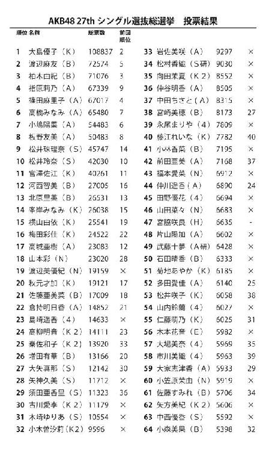

| AKB48白熱論争 (幻冬舎新書) | |
| 小林よしのり & 中森明夫 & 宇野常寛 & 濱野智史 | |
| 幻冬舎 (2012) | |
幻冬舎新書
ＡＫＢ48白熱論争
小林よしのり
中森明夫
宇野常寛
濱野智史
まえがき――「あえて」ではなく、「マジ」で嵌る我々
わしがＡＫＢ48を「マジ」に好きになったのは『ＲＩＶＥＲ』からである。
メンバーとして最初に意識したのはこの曲で最初にかけ声を発する高橋みなみだった。
『ＲＩＶＥＲ』は世間が思っている少女アイドルの楽曲とはまったく違っていた。
男が聞いても勇気が湧いてくる。闘争心を掻き立てられるのだ。
自衛隊の協力を得たと思われるＰＶを見て、戦闘服で銃を持って渡河する少女たちの泥だらけの姿にしびれた。
「マジ」を感じた。
それが３年前ということになる。
そこから過去の曲にも名曲を発見しながら、『ポニーテールとシュシュ』で本来の少女の「萌え」の感覚に気付いた。
そして『ヘビーローテーション』は決定的だった。
それはあのザ・タイガースの『君だけに愛を』を聞いたときの衝撃と同じだった。
中学生の頃、グループサウンズのブームに嵌っていたが、その熱狂の最高峰に『君だけに愛を』があった。
『ヘビーローテーション』はそれに比肩する名曲だった。大島優子は沢田研二以来のわしの憧れのアイドルになった。
さらに『Ｂｅｇｉｎｎｅｒ』を聞いたときは、感動で震えた。
これはわしのテーマソングだと思った。
『少年ジャンプ』でデビューしてからこれまで、何度も「子どものようにまっさらに。支配された鎖は引きちぎろう」と思って初心に帰ってきたが、この曲はまたわしに次の戦いの闘志を奮い起こさせてくれる。
あとはもう発売されるシングル曲が次から次に名曲で、カップリング曲にも60年代、70年代の懐かしい旋律がたくさんあって、すっかり「ヲタ」になっていた。
わしは楽曲から入って、ネットや総選挙や劇場公演を見ながら、ＡＫＢ姉妹グループの少女たちに「萌え」、「押し」てくる「ヲタ」やファンたちの応援に感心し、奇跡的に良くできたシステムに思考を刺激され続けた。
わし自身も次々に可愛い少女を発見する楽しみを覚えた。
大島優子や、柏木由紀や、市川美織、松井珠理奈、山本彩、兒玉遥と、次々に推しメンを変更するわしを、「そういうのをＤＤ（誰でも大好き）と言うんです」と、秋元康氏は指摘してしまった。
しかし世間はわしがＡＫＢに嵌っていることに呆れるばかりで、そのすごさを話したくても誰も聞いてくれない。
幸いわしの秘書だけが一緒に嵌ってくれたので、劇場にも一人で行かずに済んでいる。
しかしとうとうＡＫＢ48を通して、社会を語り、政治を語り、資本主義を語り、実存を語り、宗教を語る相手が見つかった。
中森明夫氏、宇野常寛氏、濱野智史氏である。
最初にわしがＡＫＢ48に嵌ってることを知って、自分の雑誌の企画に呼んでくれたのは宇野氏だった。そこでアイドル評論家の中森明夫氏と会った。
ニコニコ超会議でまたＡＫＢを語ることになり、その３人に合流したのが濱野氏だった。
そして今年の第４回ＡＫＢ48総選挙の翌日、わしが責任編集長をしている『わしズム』でこの４人が集まって、存分に語り合った。
指原莉乃のスキャンダルとＨＫＴ移籍決定の直後にも、再び集結して熱く討論し、この新書にまとめることになった。
我々は「あえて」嵌っているのではなく、「マジ」で嵌っている。
だが主観にどっぷり埋没しつつも、客観的に観察し、分析する力も持っている。
一度読んでみていただきたい。
ＡＫＢ48のすごさを我々は「マジ」で知ってほしいのだ。
平成24年７月28日 小林よしのり
ＡＫＢ48白熱論争／目次
第一部 人はみな誰かを推すために生きている
第一章 なぜ今、ＡＫＢ48しかないのか
◆投票のためにＣＤ58枚購入!?
◆孤軍奮闘！ 保守派を崩した指原莉乃の躍進
◆驚愕の２位、渡辺麻友と３位、柏木由紀
◆卒業してもなお君臨する前田敦子のためにあった総選挙
◆アンチ不在の限界――「嫌われる才能」がない大島優子
◆同情票を取り込んだ古株の強さ
◆大島優子は卒業せずにボスキャラになれ！
◆夢を持つことへの罰――総選挙という名の公開処刑
◆「ガチ」ですべてを晒すことと引き換えに夢を語るＡＫＢというシステム
◆卒業したら終わる夢――もはやあっちゃんは脱ぐしかない!?
◆東北復興のシンボル宮城ＡＯＢ48はいかが？
◆やめてるのにやめてない――ガチンコ勝負が作った怪物、前田敦子
◆次世代センターは山本彩か――ＡＫＢの未来を背負う女たち
◆パートナーのいないゆきりんに居場所はない!?
第二章 ＡＫＢで変わる政治・メディア・宗教
◆ＡＫＢ選挙と現実の政治
◆公共性を育むＡＫＢ、公共性のない政治家たち
◆むしろ米大統領選に近いＡＫＢ総選挙の公共性と正当性
◆生活における占有率を高らしめるＡＫＢの脱メディア性
◆ジャニーズ的戦後民主主義を突破しろ！
◆ＣＤが売れカラオケで歌われるのはＡＫＢだけ
◆常に時代の先を行くアイドル――秋元康がＡＫＢ成長の最大のネックになる！
◆やられてドツボにハマりたい
◆オウムとコギャルとＡＫＢ
◆俺はこの娘と出会うために生きている
◆創価学会の「励まし合い」とＡＫＢの握手会
◆利害関係のない他人を「推す」ということ
◆資本主義の権化が共同体を生み出すという矛盾
◆政治への絶望感で際立つＡＫＢの本気
◆ネット社会が生み出した功罪
第二部 では、なぜ人は人を推すのか
第三章 禁忌・アイドルの恋愛――指原事件の衝撃
◆ロミオとジュリエット、近松門左衛門を地で行った指原事件の勃発
◆童貞中高生も握手会に行けばひょっとしたらイケる!?
◆会えるアイドルから寝れるアイドルへ!?
◆アイドルは巫女、恋愛禁止は仕方ない
◆博多は流刑地か――神の一手を生み出した指原スキャンダル
◆秋元康の後継者!? アンチを味方につけた指原のプロデュース力
◆語られる才能を持つ指原はＨＫＴをどう変えるか
◆アイドルでいられるならセックスなんかしなくていい！
◆ＡＫＢはプロレスの進化系！ 奇跡を生み出すシナリオとガチンコのバランス
◆誤解もアンチも含めてブームになるのが国民的アイドル
◆若い世代がハングリーになれるものはスポーツかＡＫＢくらいしかない！
◆ＡＫＢの弱点をつくももクロの脅威
◆本当のファンはアンチ指原にならざるを得ない
第四章 日本アイドルの倫理と資本主義の未来
◆「もっとも信頼できる詐欺師」秋元康のビジネスは資本主義を超えるのか
◆大衆に売れることがいちばん社会を動かす
◆ピンク・レディー・チルドレンが「女の時代」をつくった
◆制服による統制が個性を生む
◆一方で消費者の意見をくみ取り、一方で消費者と対決する
◆中国、韓国でＡＫＢは成立するか
◆誰でもアイドルになれるカルチャーフォーマット
◆アメリカ人は多神教的ＡＫＢを受け入れるか
◆多神教的資本主義は日本を越えてどこまで広がるか
◆人の欲望にはグラデーションがある
◆いまだに被災地を訪問するＡＫＢ48
◆震災後加速するＡＫＢ48
構成 岡田仁志
第一部 人はみな誰かを推すために生きている
第一章 なぜ今、ＡＫＢ48しかないのか
小林 昨日（平成24年６月６日）、ＡＫＢ48の第４回総選挙が行われました。過去３回の総選挙で２度１位になった前田敦子が卒業を決めた直後の選挙ということで、大変注目されたわけですが、その熱気も冷めやらぬうちに、われわれ４人でＡＫＢについて縦横無尽に語り合いたいと思います。中森さんは今回初めて、総選挙を会場で見たんだよね？
中森 去年、小林さんが「これは現場で見なきゃダメだ」とおっしゃった意味がわかりましたよ。去年はあとで録画を見たけど、それでは話にならない。今回は取材で入った人間の特権で、選挙終了後の記者会見では大島優子のナマ足も目の前で見ました。最高でしたね。宇野さんはあれを見ないで帰っちゃったけど。
宇野 ニコニコ動画の生放送に出演しなきゃいけなかったんですよ。
中森 ニコニコ生放送と大島優子のナマ足のどっちが大事なのよ。それはともかく、テレビは単なる選挙中継みたいで面白くないですね。
小林 テレビ中継が入ると、会場の進行がＣＭのたびに止まるから間延びするんだよな。大島優子が喋ろうとしたそのときに、テレビの都合であっちゃん（前田敦子）が登場するし。
中森 あれは可哀想でしたね。でも、会場の雰囲気は素晴らしかった。僕は１９７０年代からいろんなアイドルのイベントを見てきたけど、ＡＫＢはファンのビビッドな反応が昔のアイドルとは全然違いますよ。客層はバラバラなんだけど、いい感じに統制が取れている。
宇野 それでいてポジティブですしね、基本的に。
濱野 あの声援はすごくいいよね。たとえば言葉が詰まっちゃったメンバーなんかに、すぐに「頑張れー！」ってファンが優しく声をかけるんですよね。ああいうのはＡＫＢの劇場なんかだとよく見られるんですよね。ただ、劇場はステージとの距離が近いからわかるけど、武道館の大きさでこんなインタラクティブに声をかけ合うっていうのは新鮮でした。
あと、今回はいわゆるアイドルオタクっぽい人がほとんど客層にいなくて、男性、女性、若い人からお年寄りまで、本当に多様でしたね。それが１万２０００人もいて全体として統制が取れているというか、一体感があるのは面白い。よく考えたら、みんな推しメンも違うわけじゃないですか。それだけ「ばらばら」の人が集まっているのに一体感があるというのは、面白い。
小林 第１回総選挙で大島優子のファンが２位発表のときに「前田、前田」とコールして、あっちゃんを傷つける事件があったりしたから、ファンも学習したんだよ。その意味では、ファンもメンバーと一緒に成長している。というわけで、まずはそれぞれのファンとしての感想を聞こうか。
中森 われわれは論客である以前に総選挙の投票者でもありますからね。
濱野 僕なんか、取材申請もせず、ふつうに一人の観客として見てました。後輩の学生がたまたまチケットを当てたので、その同伴で入りました。
小林 みんな、誰に何票入れたの？
宇野 松井玲奈に６票です。
中森 僕はゆきりん（柏木由紀）に１票。
小林 わしは大島優子に12票、みおりん（市川美織）に２票、あと、たかみな（高橋みなみ）にも１票入れた。
濱野 僕は、一推しの、ぱるる（島崎遥香）に29票。
小林 そんなに!?
濱野 あとは、39位の永尾まりやに10票、チーム４のキャプテン大場美奈に９票、60位のまーちゅん（小笠原茉由）に１票、35位の向田茉夏（チームＫ２）に１票、30位の古川愛李に１票、ＨＫＴの宮脇咲良に１票。あ、松井珠理奈にも１票入れました。それ以外にも何人か投票しましたが、ランクインした子はそれぐらいですかね。
中森 すごいなぁ。ＣＤ何枚買ったの？
濱野 投票権付きＣＤは58枚。それ以外にモバイル票もありました。でも、僕なんかまだファンとしてはせいぜい中級ぐらいだと思います。ネットを見ていると、それこそ何百枚も買っている人はゴロゴロいて、僕はまだまだだなと（笑）。ただ今回の選挙の結果は、僕的には大勝利でした。実は僕が今回投票した子って、昨年の総選挙では圏外だった子がほとんどなんですが、今回はかなりランクインしましたから。だから世代交代を実現したとまでは言わないけど、次の世代を担うメンバーをちゃんと見つけて「推す」ことができたという手応えは感じることができて、感激もひとしおでした。ぱるるなんか、去年は圏外だったのが１万４０００票も取った。あと、僕はＳＫＥのＷ松井でいうと珠理奈派で、いつも宇野さんと喧嘩になるんですけど、珠理奈は玲奈に勝ちましたし！ いやー、申し訳ないけど、宇野さんに勝ったぜ、と僕はニタニタしてました（笑）。
中森 松井玲奈が10位で珠理奈より先に呼ばれたときは、隣で宇野さんの顔が固まってた（笑）。声かけても、真っ青な顔して何も答えてくれない。あんな能面みたいになった宇野さんは初めて見た。
宇野 僕は投票しめ切りの直前に、濱野君が珠理奈に１票入れたのを知って、追加で２票玲奈に入れたんですよ。彼の票を無効化するために！ しかし......まさか昨年と同じ10位に留まってしまうとは思いませんでした。速報では７位だったので、うまくいけばベスト５も夢じゃない。誰もがそう思ったはずです。しかし、現実は僕らと玲奈を激しく裏切った。その衝撃が会場を揺るがしたんです。今回、玲奈は二重の意味で負けたと思っています。まず、珠理奈に負けたというのがひとつ。珠理奈と玲奈は太陽と月みたいな関係です。秋元康という絶対的な存在から最初からお前がセンターであると抜擢された運命の子である珠理奈に対して、玲奈はファンの民意を背景にのし上がってきた。このふたりはいい意味で競い合ってＳＫＥを引っ張ってきた。まるでＡＫＢのあっちゃんと優子のように。だから玲奈ファンとしてはどうしても珠理奈には勝ってほしかったという気持ちもあるし、去年は玲奈が珠理奈を抜いて今年は抜き返されたという入れ替わりのドラマが派生していることはむしろ素晴らしいという気持ちもある。しかし、問題は二人が競い合っているその順位です。これが４位と５位を争っているのなら納得できるんです。もしそうだったら、あっちゃんの卒業を受けて48グループの次世代をＪＲコンビが担うのだ、という物語が発生する。しかし、実際は９位と10位を争っているわけです。この順位はどちらにとっても、今までのランクを維持しているだけで躍進とは言えない。これがふたつ目の意味での「敗北」です。

小林 わしは松井玲奈を２位に推してたんだけど、実は彼女が10位になったときにものすごく安心したの。これで大島優子は２位までには入ると確信できて、ホッとしてしまった。
中森 これで大きな変革は起こらないと思ったわけですね。小林さんは保守だから。
宇野 今回はＳＫＥの調子が良くて、速報でも17人ぐらい入ってましたよね。最終的には15人に減りましたけど、彼女たちがすごく力をつけた。だから、今まではあっちゃんと優子が中心でしたけど、もうそういう構図にはならないんです。あっちゃんが卒業した後の大島優子センターの時代は、次の世代への橋渡し政権なんですよ。あっちゃんと優子のダイナミズムは、珠理奈＆玲奈の「ＪＲ」で引き継いでいくべきなんだという確信が僕にはあった。下手をすると、もう「神７（大島優子・前田敦子・篠田麻里子・板野友美・渡辺麻友・高橋みなみ・小嶋陽菜）」を押しのける存在になるかもしれないとも思っていたんです。
中森 いや、珠理奈と玲奈は、すでにある意味で神７を突破したでしょう。中間順位でも７位と８位だったわけだし。
宇野 ええ。だから僕もスポーツ新聞に「ＪＲの時代が到来！」とか大々的に書かれるような展開を期待していたんですよ。ところが......。玲奈は去年も10位なんです。だから、今回は全然上がってない。なんとも中途半端な結果に終わってしまいました。
小林 わしはみんなが良識的な判断を下した結果だと思ってるけどね。
濱野 小林さん、ほんとに保守ですね（笑）。
宇野 結局、上位は旧来の「神７」にさっしー（指原莉乃）が加わっただけですからね。
中森 さっしーがあっちゃんと入れ替わったわけだ。
宇野 この壁は厚いですよ。あまりのショックでしばらく放心してたので、マリコ様（篠田麻里子）の「潰しに来い」発言のあたりまで記憶がおぼろげなんです。逆に、あの一言で目が覚めた（笑）。
小林 マリコ様のあの発言は今回の白眉だよ。あれは凄かった。
濱野 たしかに、観客もあのときの反応がいちばん激しかったですね。記憶に残る発言だった。
宇野 あの発言のポイントは、マリコ様がさっしーに負けたことを「悔しい」とはっきり言ったことだと思います。「これがＡＫＢのシビアなルールなんだ。自分はそれを受け入れた上でやっている。お前たちもＡＫＢに参加した以上は覚悟を決めろ」というメッセージですよね。だからこそ、説得力がある。
中森 もうチームＡはさっしーがトップになったわけだからね。これはプライドの高いマリコ様にとっては我慢ならないでしょう。
濱野 しかも３００票ぐらいしか差がないですからね。
小林 さっしーの躍進は本当に奇跡だね。今回だけかもしれない。来年以降は、かなりキツいでしょ。
中森 でも僕は革新だから、今回はそこだけが面白かったですよ。順位が全然変わらないのは良くないですよ。
濱野 あっちゃんの卒業を受けて、今回は世代交代問題がクローズアップされたわけですが、この総選挙では保守的な傾向が強いことを感じましたね。
中森 少なくとも今回は世代交代に否定的だったよね。初めて選挙を現場で見たのは面白かったけど、この結果は納得がいかない。
小林 わしは、むしろＳＫＥがこんなにランクインしたのが納得いかないけどね。
中森 あと、僕は今回、みおりんに驚いた。やっとわかりましたよ、彼女の価値が。今までは単に壊れた子供かと思ってましたけど。何を言ってるのかわかんないし（笑）。
小林 彼女は妖精なんだよ。
中森 実物を見てびっくりしましたよ。これが小林さんの言う妖精なのかと思いましたね。「私はフレッシュレモンでい続けたいと思います」というコメントは良かった。みおりん、何位だっけ。
濱野 58位ですね。
小林 低すぎるんだよ。市川美織が「フレッシュレモンも飽きられたのかも」とか言い出したときは、かわいそうすぎて涙が出ちゃったよ。「そんなことないぞー」と叫んだね。
中森 ネットでも話題になってて、YouTubeの再生回数もすごいんですけどね。
宇野 こんなに愛されてるのに、どうしてこの順位なんだろう。
濱野 去年は39位でしたから、かなり下がっちゃいましたよね。フレッシュレモン、やはり飽きられてしまっているのかな......。心配になりますね。
５位 篠田麻里子 選挙スピーチ
こんなにも素敵な順位をありがとうございます。こうやってみなさんの温かさやありがたみを感じられるのが総選挙だと思う。私はこの総選挙は嫌いじゃありません。自信はないですし、この日が来るまで不安でした。眠れない日もありました。だけどこうやってみなさんの温かい声援と気持ちがぶつかる今日の日を、この緊張感を味わえる今日を、自分にとって成長できる日だと思っています。（涙）後輩に席を譲れと言う方もいるかもしれません。でも私は席を譲らないと上に上がれないメンバーはＡＫＢで勝てないと思います。私はこうやってみなさんと創り上げるＡＫＢ48が大好きです。だからこそ後輩には育ってほしいと思ってます。悔しい気持ちもすごくあると思います。正直今、私も悔しいです。でもそうやって悔しい力をどんどん先輩に、ぶつけてきてください。潰すつもりで来てください。私はいつでも待ってます。そんな心強い後輩が出てきたならば私は笑顔で卒業したいと思っています。最後に、この票数は、今日までの１年間の私への評価ではなく、今日から来年までの篠田麻里子への期待だと思っています。この期待を胸に今日から頑張っていきます！
中森 もうひとつ、僕はゆきりんの３位に驚愕したね。
小林 わしも、あのときは血の気が引くぐらい驚いた。まさかゆきりんがまゆゆ（渡辺麻友）に破れるとは思わなかったよ。
中森 でも、もうそのあとにまゆゆが大島優子にかなわないのもわかっちゃったからね。ゆきりんと大島優子の対決が、去年までのあっちゃん対大島優子に取って代わるだろうと思っていたのに、ゆきりんが３位になった時点でハシゴを外されたような感じでしたよね。
小林 そうそう。わし、優子がゆきりんに負けるかもしれないという焦りがあったのよ。そこにはかなりの危機感を持ってたから、ＣＤを買い増して、優子に票をつぎこんでいたんだ。優子のライバルはゆきりんしかいないと思い込んでいた。
中森 ちなみに僕は２年連続でゆきりんに１票入れたんだけど、ああ、俺の１票だけじゃどうにもならないんだと痛感したね。ハマノン（濱野氏）みたいに何十票も入れないとダメ。
濱野 まゆゆとゆきりんは、１５００票ぐらいしか差がないんですよ。
中森 そこが面白いんだけどね。こっちの思うようにはいかないところが。
小林 しかし、まゆゆはどうしてあんなに票を取れたんだろう。
濱野 一般的には「優子対ゆきりん」の対決が注目されていましたけど、実はヲタのあいだでは、チームＢの双璧であるまゆゆとゆきりんのどちらが次世代を担うのかが、主要な関心事だったんでしょう。だからこそ、その二人が僅差のデッドヒートになったのでは。
中森 僕はそこを逆に考えたいんだよね。というのも、ゆきりんと優子はどちらも去年より票を落としてるんです。大島優子にいたっては、１万４０００票も落とした。じゃあ、なぜこの二人が去年よりも落ちたかと言えば、この二人がトップを取るかもしれなかったからでしょう。するとファンの心理として、トップに届きそうもない子を推すじゃないですか。実際、中間発表で16～18位の選抜メンバー入りギリギリになると最後で票数が逆転することが多いでしょ。政治の選挙でも「次点バネ」という言葉があって、前回ギリギリで負けた候補者が支持率を上げるんです。そう考えると、やはりファンのあいだには「どうせ優子とゆきりんでしょ」という意識があったと思いますね。しかしそれでは面白くないから、二人とも前回より票を減らした。投票総数は前回より増えているし、前回まであっちゃんに投じられた票がおよそ14万票もあるのに、大島優子とゆきりんの得票は減ったわけです。
宇野 優子が票を減らすのは理解できるんです。前回までは「アンチ前田票」が大島優子に流れていたはずだから、あっちゃんがいなくなれば、アンチ票も減りますよね。でも、ゆきりんも一緒に落ちたんですよね。ここで発生したのはむしろ「ゆきりんに居場所がない」問題でしょう。優子にはあっちゃんのいないＡＫＢを私が守るという物語がある。まゆゆには次世代センターの本命としての役割がある。しかし、ゆきりんは前田政権での有力閣僚だったけれどナンバー２ではないので後継者にはなれない、そして世代的に「次世代」ではない彼女の居場所はどこにあるんでしょうか。
中森 前回より３０００票も落としたからね。これは驚いた。小林さんと僕が唯一、一致して推してるのはゆきりんだけなんだけど、それがいけなかったのかな（笑）。
宇野 今回の総選挙のテレビ中継では最後に、フジテレビの都合であっちゃん（前田敦子）が優子の演説の途中で出てきてしまって、演説が途中で切られてしまった。結局いちばん美味しいところをあっちゃんがもっていったんですよね。
中森 もっとはっきり言ってしまえば、ある意味、ＡＫＢの総選挙はずっとあっちゃんのためにあったんだよね。今回、最後に彼女が出てきた瞬間に、それがわかった。過去の選挙を振り返れば、まず第１回は前田敦子が１位で「絶対的エース」と呼ばれました。ところがその頃からＡＫＢの世間での認知度が高まって、「前田は可愛くない」「どうしてあいつがエースなんだ」というバッシングが起きたんです。だから第２回は、大島優子が勝った選挙ではなく、いわば前田敦子が負けた選挙だった。大島優子には悪いけど、あっちゃんを負かせる人なら誰でもよかったと思う。そして去年の第３回総選挙では、あっちゃんが１位に返り咲きました。つまり、これまでの総選挙はあっちゃんの勝ち負けを判定するためにあったんじゃないか。
そのあっちゃんがいなくなったことで、今回は総選挙の持つアイデンティティが大きく失われました。求心力が失われたと思う。その代わりに遠心力が強まって、投票総数は増えた。その遠心力を支えたのがＳＫＥだったんじゃないかな。
宇野 あっちゃんは、卒業を表明して今回の選挙に出なかったことで、むしろＡＫＢにおけるジョーカーみたいな存在になりましたね。ある意味、神格化された。最後に花束もらったときなんか、そこで伝説が歩いてるような雰囲気でしたから。
中森 現在につながる形での「アイドル」という存在は１９７０年代初頭に生まれて、もう40年ぐらい経つ。すると、歴史を経てジャンル自体が持つ無意識みたいなものが生成されると思うんだ。たとえば「ベースボールと野球は違う」と言われるよね。野球と違って、ベースボールは歴史の浅いアメリカの国作りの神話を背負っている。それと同じように、アイドルも何らかのジャンルとしての無意識を背負っていると思うわけ。秋元康はその歴史のほぼすべてを知っていて、それをＡＫＢに投入しているんですよ。そのＡＫＢの無意識が端的に表れるのが、総選挙でしょう。そこにあったのは、すなわち「前田敦子を判定したい」という欲望です。それがＡＫＢファンの欲望だった。
濱野 あっちゃんは正当性がある存在なのか、そうじゃないのかを決めたかった。
中森 その正当性をめぐるパワーが、今回の選挙に前田敦子が出なかったことで逆にわかってしまったね。最後にちょっと出てきただけで、「これはモノが違う」と思わなかった？
濱野 思いましたよ。僕なんか、あの瞬間に「あっちゃん！」て叫んでしまいましたからね。せっかくの優子のターン（出番）だったのに。
宇野 そうそう。あの絶妙なタイミングで登場してきたときに、裏主役として完全に持って行きましたよね。１年前には、あそこまで神格化はされていなかった。卒業を表明したことで、ＡＫＢは前田敦子という妖怪を生み出したように思います。
中森 なんか歴史上の偉人が出てきたみたいだった。リンカーン大統領みたいな（笑）。
小林 じゃあ、正当性が判定できないような子がセンターにいたほうがいいの？
中森 同じ１位でも、大島優子はその任に耐えないと思うんです。今回の大島優子が、前回までの前田敦子のように判定されたとは思えない。前田敦子は去年「私のことは嫌いでもＡＫＢのことは嫌いにならないでください」と言ったけど、あれこそが巨大な無意識に判定されることに耐えた人間の言葉ですよ。
宇野 今回の総選挙の大島優子はとくに最後の演説のシーンで弱点をさらしてしまったと思います。優子の演説で印象に残るのは、ほとんどあっちゃんとの関係性に言及した部分なんですよ。あれで優子は自分の持っている物語があっちゃんという存在に決定的に依存していたことを告白してしまったと思う。まさにあっちゃんという太陽がいないと輝けない月です。
中森 僕は大島優子のファンじゃないけど、あれを聞いてホント泣けてきたよ。１位なのに、あっちゃんのような輝きが全然感じられなかった。いや、去年のあっちゃんが持っていたのは、輝きというよりも使命感だね。「私のことは嫌いでも」という発言はすごいよ。
小林 あっちゃんが判定の難しい空虚な中心だったから、アンチが生まれたというけど、大島優子だってアンチはできるでしょう。
濱野 いや、アンチ優子ってあまりいないような気がします。今回の発言も「みなさんが太陽でいてくれてるから咲くことができてる」と、どこにもアンチはいないという前提で喋ってますよね。実際そうだと思うんです。会場全体も、優子を絶賛するムードになっていました。だからこそ、こちらとしては逆に物足りなさを感じてしまう。
小林 アンチがいたほうがいいということ？
中森 いなきゃダメでしょう。
小林 でも優子にはアンチができない？
宇野 これまで、あっちゃんに対するオルタナティブとして機能しすぎてきたからでしょうね。もちろん、優子さん自身の人柄もあるだろうけど。
濱野 だから敵が生まれないのかもしれませんね。秋元（康）さんも言うように、アンチがいるからスターが生まれる。でも優子にはアンチがいない......。
中森 いや、彼女はね......やっぱり才能がないんだな（笑）。
小林 そんなことないよ！ 冗談じゃない！ あの子がいちばん才能あるんだよ。
濱野 いや、もちろん優子には普通の意味でいう才能は抜群なんですよ。それは誰もが認めている。ダンスの才能や演技の才能はずば抜けている。
中森 嫌われる才能がないんですよ（笑）。大島優子が嫌いな人なんか見たことないもん。あっちゃんなんて、ボロクソに言われてましたよ。
宇野 優子さんは、「自分は太陽じゃない」という前提で喋ってますよね。自分は何かを反射することで光る存在だと思っているわけですよ。
小林 たしかにわしも、今回の優子の発言はいい人すぎて疑問を覚えたけどね。本来なら、マリコ様の「潰しに来い」発言を、優子が言わなきゃいけなかった。１位でもないマリコ様があんなすごい発言をしてしまったら、もう優子は言うことがなくなるのよ。
中森 先に言われちゃうところが、才能ないわけじゃん。
小林 そんなことないもん！
宇野 でも、あのマリコ発言のタイミングは、けっこう神がかっていましたよ。あのときの会場は、放心していた僕も含めて「何も変わらないじゃん」という空気に支配されていた。そこでマリコ様は、あの言葉を発したんです。自分がさっしーに負けたことも、厳しく受け止めながら。
小林 マリコ様は、ネットで「おまえのようなババアはもう卒業しろ」みたいなデタラメなバッシングを受けすぎて、ものすごく悩んだんだよ。一度はツイッターもやめて、ずっといろいろなことを考えていたんでしょう。
中森 マリコ様、ツイッターのフォロワーが１１０万人だから、少なくとも10万回ぐらいは「ババア」って書き込まれてるんじゃないの？ それがあったからこそ、あの素晴らしい発言が生まれた。
小林 残念ながら、素晴らしかったね。そんなマリコ様にあれを言われてしまったから、優子は言うことがなくなっちゃったんだよ。わしは優子に会うチャンスがあって、「世代交代なんか許しちゃいけない。壁になりなさい」って言ったんだけど、その内容をマリコ様が言っちゃったからなあ。
宇野 ただ、大きな変革はなかったとはいえ、今回は優子さんが１位でよかったという気持ちも僕にはあるんです。あっちゃんが参加しない今回の選挙で大島優子が１位の座に就かないと、物語として完結しなさすぎる。
濱野 たしかに、それはあるかもね。
中森 これまでの流れを締め括るエピローグみたいな感じだね。
宇野 でも、だからこそ４位や５位が大きく入れ替わる必要があったんです。１位は優子でいいから、ＪＲが４位とか５位あたりに食い込んでほしかった。結局、選抜メンバーも梅ちゃん（梅田彩佳）ぐらいしか入れ替わっていないので。さや姉（山本彩）やみるきー（渡辺美優紀）あたりが入ってくれば、それなりにドラマはあったんだけど。
１位 大島優子 選挙スピーチ
（ほっとしたような笑顔でガッツポーズ）私は秀でた才能がなくて、ただただ全力でやってきたことが実になって、その実にみなさんが水をかけてくれて、太陽の光をくれて、咲くことができています。でも花はいつか枯れてしまうと思いますので、枯れないためにもいつも太陽のような存在でいてください。この景色を見たかったんです。ありがとうございます。ＡＫＢ48の道をもっと開こうとしてくれて、進んでくれたあっちゃん。あっちゃんが道を開こうと頑張ってくれているので、私はこの順位で、その開いた道の土台になればいいと思っています。みんなのコメントを聞いていると本当に士気が高くて、志が高いと思います。まだまだやれる。そう思いました。だから、私はこの順位で、優子頼むぞとみなさんに言われた気持ちです。全国のみなさん、ＡＫＢ48グループはまだまだ頑張らせていただきます。ずっと私たちを照らし続けてください。本当にありがとうございました。
中森 ちょっと小林さんの顔も立てておくと（笑）、大島優子を終了後の記者会見で至近距離から見たとき、とてもいい顔をしてましたよ。ホッとしたのかもしれませんが、菩みたいな印象も受けました。１位になって、今まで見えていなかったものが見えた。ＡＫＢの１位になった者しか持ち得ない「影」、「光」じゃなくて、特別な「影」を帯びているように見えたんです。２年前に１位になったときの優子には、そんなものは全然なかった。もしかしたら、それが今後の大島優子を良くしていくかもしれない。
宇野 これを機会に変わっていく可能性はありますね。
濱野 それは期待したい。
小林 今回の大島優子は、世代交代というテーマへの回答を出さなきゃならなかったわけよ。あまりにも「世代交代、世代交代」と言われすぎたから。でも、ここで本当に世代交代が起きて、珠理奈や玲奈が１位や２位になってしまったら、アイドルの寿命そのものがそれで決まってしまうよね。それより古い世代はみんな卒業しなければならなくなるよ。そうなったら、ＡＫＢというシステム自体が成り立たない。大島優子は、それを食い止めなければならなかったんだ。本人たちにとって「世代交代」という言葉は、とんでもなく大きなプレッシャーになるからね。たとえば佐藤亜美菜なんかも「お局様」になるかもしれないと自分で言ってたけど、それぐらいの過酷さがあるわけよ。
中森 マリコ様が世代交代に抵抗したのに対して、いちばん良い答え方をしたのは、実はまゆゆでしたよね。「私たち新しい世代がやります」と受けて立った。
小林 まゆゆはそれを言う資格があるんだよ。彼女には歴史もあるから。でも、もっと新しい世代で挑戦状を出してるのは山本彩なんだ。選挙が終わってから、「次は自分が取る」と言い始めた。だから、この世代間闘争はこれから激しくなるでしょ。
中森 東京と名古屋の東海道戦争も相まってね。
宇野 選抜メンバーこそ大きく変わっていないけど、アンダーガールズを見てみろっていう話ですよ。８人もＳＫＥが入ってる。
小林 大島優子も、来年は自分が１位にはならないかもしれない、あるいは選挙に出られないかもしれないと思ってるでしょう。
中森 自分で「ラストチャンス」と言ってましたからね。
宇野 １年以内に卒業すると自分で言っちゃってるようなものでしょう。
小林 それは悲しいよね、本当に。だって、彼女たちは６～７年かけてこの環境を整えたんだよ。それを入って１年か２年ぐらいの連中が「選抜に入りたい」って言うこと自体がおこがましく生意気だよね。今は名古屋も大阪も博多も、はじめから劇場は満員になるんだよ。でも最初に秋葉原で始めたときは客が７人しかいなかったんだから。
中森 いや、たしかに実人生ではそのとおりですよ。でも、アイドルの世界は苦労した人間が必ずしも勝つわけじゃないでしょう。
小林 いやいや、そこは違うと思うんだよね。この選挙で投票する人たちがすごいと思うのは、単なる美少女コンテストで票を入れてないところなんだよ。同情で票を入れているわけ。同情票が膨大にあるんだよ、ＡＫＢの選挙は。
中森 たしかに、僕が会場でいちばん感じたのは、その同情のパワーです。壇上のコメントで「私のような子はもしかしたらダメかもしれません」とか言うと、客席から「ダメじゃない！」「ダメじゃない！」と反射的にものすごい声が上がる。だから、情のパワーがあるのは認めます。でも、選挙の結果は情だけでは出ないと思う。
小林 いや、情がかなり反映されるんだよ。指原の得票数なんて、情だけであそこまで伸びた。恐るべきことだと思うね。たしかに今までのアイドルの歴史の中では、こんなに情で人気が上下することはなかったでしょう。でもＡＫＢの選挙はそれで動くんだ。たとえば中間速報で誰かが圏外に落ちたら、それだけで「何が何でも上げなければ」という同情票が集まるんだよ。そうやって情が働いた結果、古株が上位を占めた。そこがすごい。
中森 なるほど、情が大きな動きを生んでることは認めましょう。
宇野 古株に関しては、あらためて「こいつら強いな」と思いましたよ。そこにはやはり何か大きな壁がある。
中森 「神７」とはよく言ったものだよね。でも僕は、その壁は壊さなきゃいけないと思ってる。小林さんは「世代交代したらＡＫＢが成り立たなくなる」と言うけど、僕はそれでいいと思ってるんです。そうなってから何が起こるかが見たい。
宇野 たしかに、あらためて順位を見ると、あまりにも動きがなさすぎる。
濱野 順位だけ見たらいつもと同じメンツで、「飽きた」と思う人も多いでしょうね。会場にいればいろいろな機微もわかりますけど、テレビだけ見てたら「またいつもの同じメンバーなんだ」と思う人もいるかもしれない。今年はまだテレビで初めて大々的に中継したからいいけれど、来年もまったく同じメンバーだったらどうか。世代交代はまだ始まったばかりですけど、僕は来年こそ世代交代を起こしたい。中森さんも言うように、世代交代して一度ボロボロになったっていいと思うんです。そこからまた這い上がるほうが、それこそＡＫＢ的なドラマがあるじゃないですか。
小林 でも、もしそうだとすると、たくさんある他のアイドルグループと同じになってしまうわけよ。ももクロ（ももいろクローバーＺ）とかさ。
宇野 いや、他のグループはＡＫＢとは全然違うでしょう。人数も少ないし、ＡＫＢのようなファン参加型のユニークなシステムをつくり上げたわけでもないし。
中森 うん。そこは大きな違いだね。昨日現場に行って、あらためて「ＡＫＢは選挙なんだな」と思いましたよ。歌やダンスもいいけど、いちばんＡＫＢらしさが出るのは選挙だと思う。ＡＫＢの魂がそこに凝縮されている。
濱野 それは間違いないですね。
小林 だとすると、なおさら歴史を帯びたアイドルじゃないと、魂の凝縮された言葉はつむげないよ。せいぜい１年か２年の歴史しか持たない人間が上位になっても、そこから発せられる言葉はまったく面白くなくなる。
宇野 だけど、桶狭間から本能寺まで20年ぐらいしか経っていなかったんですよ。あの当時、誰があの信長が偉くなると思ったか。
中森 みおりんにはあまり歴史がないけれど、僕には響きましたよ（笑）。だから、たしかに歴史は大事だけど、歴史を超える天才も時には現れる。いまＡＫＢには二百何十人もの子たちがいて、さらに全国の膨大な数のアイドル志望者はＡＫＢに入りたいと思ってるわけです。そこからどんな才能が飛び出すかわからない。
宇野 それでいきなりダーッと変わるのも、ひとつの歴史のあり方でしょう。
中森 たとえば、日本の野球には１００年以上歴史があって、かつては運動神経のいい子供はみんな野球をやっていました。でもメジャーリーグで本当に通用したのはイチローだけですよ。２年連続でオールスター戦に出場した日本人選手なんて、イチローしかいない。でも、イチロー一人はいたんだよね。１億人という人口があって、そのジャンルが積み重ねてきた歴史があれば、それは可能になる。ＡＫＢは、もうその段階に来てると思うんですよ。
小林 わしは、そういう特別なスターがＡＫＢからは出ないと思ってるから。この選挙システムの中でそこまで飛び抜けたスターが現れたら、ＡＫＢ自体が成り立たないと思う。そこで別のものになって、ＡＫＢ自体は終わってしまうんじゃなかろうか。
宇野 今回明らかになったのは、本店のＡＫＢで昔からメディア露出の多い子がふつうに強いゲームだということです。それが定着しつつある。これを、もうちょっと下克上が起こりやすいルールにしたほうがいいと考えるのか、あるいは今ぐらい「ボスキャラ」の強いゲームのほうが面白いと考えるのか。僕はもう少し新陳代謝が起こりやすいルールにしたほうが盛り上がる気がします。
濱野 来年もこの状態だと、ＡＫＢ人気は落ちる可能性があると思いますね。宇野さんも言うように、芸能人ってスポーツ選手なんかと違ってイメージや認知率の勝負になるから、昔から活躍してるメンバーのほうが圧倒的に有利なんですよね。だから僕も宇野さんの意見に賛成で、下克上可能なルールは何かしら必要だと思う。どれだけマリコ様が「上を潰しに来い！」と言っても、限界がありますよ。『マジすか学園』じゃあるまいし、まさかほんとに殴り倒すわけにはいかないんだし（笑）。だから実は僕は今回の総選挙は、世代交代をうたったはずが、実は「上の世代が詰まっている」という日本社会の停滞した構図をそのまま反映してしまったようにも見えた。
宇野 でも、来年は放っておいてもある程度は変わるでしょう。まず、優子さんは選挙に出られないだろうし。
濱野 どうだろうな。でも、来年もほとんどのメンバーはやめてないと思うから、全体的には大きくは変わらない可能性があると思ったけど。
小林 わしは、優子が選挙に出ないことに賛成しないんだよね。彼女は選挙に出続けて、どこかで無惨に敗れなければいけないと思う。トップが卒業して次の１位を選ぶことを繰り返しても、全然面白くない。
宇野 戦って負けるべきだと。それはたしかにそうかもしれない。
小林 だからわしは次も大島優子が出て、次も勝つことを願うよ。今年24歳になるから、一体どこまでやれるのかわからないけど。
中森 おそらく、大島優子はどんどん悲劇の影を帯びていくよね。キツいですよ、トップを張っていくのは。
宇野 今回の選挙で、ゆきりんとまゆゆが祈るように発表を待っているのに対して、優子さんが一人で達観したような表情を見せている姿は、すごくきれいだと思いました。ところが１位が決まった後のコメントであっちゃんの名前ばかり口にしたので、ちょっとガッカリしたんですけどね。そこに、大島優子というキャラクターの魅力と弱点がある。スタンドアローンの戦闘力はすごい高いんだけど、ちょっと動揺すると「あっちゃん、あっちゃん」と言ってしまう。
小林 いや。あれはテレビ用のコメントだから仕方ないよ。大島優子も辛かったと思う。あの状況に身を置いたら、良識的な部分を表に出さなきゃならない状態に追い込まれる。
宇野 それを克服して、「一人で孤独に耐える大島優子」のキャラをさらに磨き上げると、倒すべきラスボスとしての存在感が高まると思う。あと、やはりフジテレビの放送時間の都合に合わせてあのタイミングであっちゃんを出して優子さんのスピーチを途中で中断させたのはよくなかったと思いますよ。これは運営がテレビというマスメディアに媚びた結果で今回の総選挙でいちばんダメなところだったと思います。本来ＡＫＢは公演や握手会といった「現場」とそこに通うファンたちのネットでの盛り上がりでここまで勢力を拡大したところがすごかったはずなんです。マスメディアの外側に一大勢力を築いてから、マスメディアに出ていって席巻してしまった。今でも、基本的にはマスメディアは増幅器（ブースター）としてしか機能していない。そこがＡＫＢの強みなんです。増幅できなくなるだけで、構造そのものはマスメディア抜きでも「成立」はするんです。けれど、今回はフジテレビと近づきすぎてテレビに配慮して、イベントのいちばんいいところを台無しにしてしまった。さらに言うと、そもそも今回の総選挙は、「前田か大島か」のダイナミズムを失った政権選択のゲームよりも、どんな若手が台頭してくるのかが問われた中～下位のゲームのほうがアツかった。現に前者よりも後者の票が前年に比べて伸びていて、全体の投票数を伸ばしている。しかし、フジテレビは視聴率対策と尺の関係で上位の発表しか放送できなかった。もちろん、ぐぐたす（Google+）の中継ではそんなことはなく頭からおしりまで見ることができた。結局マスメディアでは構造的にＡＫＢの面白さを伝えることができない。ＡＫＢはやはりソーシャルメディア的な文化でマスメディアとは相性が悪いんです。
中森 小林さんが「テレビ用」とおっしゃったのは大事なポイントですよ。小林さんはそれを「やりすぎ」だと考えるわけだけど。ただ、総選挙というシステムは、良くも悪くも、彼女たち一人ひとりのアイドルとしてのすべてをさらけ出すんです。テレビはそれを増幅して報じる装置にすぎない。ふだんは「みんなで頑張ります」と言ってるＡＫＢのメンバーが、個人として日本全国の視聴者の前に晒される。そこで、具体的に何が良くて何が悪いのかはわからないまま、はっきりと順位をつけられるんですね。僕はそれを見ていて、公開処刑みたいな印象を受けました。
小林 うん、それはわかる。
中森 木嶋佳苗裁判も、裁判員は状況証拠だけで死刑判決を下した。傍聴席には〝佳苗ガールズ〟なる女性たちが殺到して発情していたとも報じられています。今回のＡＫＢの選挙では、それを思い出しました。アイドルを国民の前に晒して、状況証拠みたいな曖昧な基準で点数をつける。これはもう処刑だよね。でも、それが残酷でありながら美しい。見る者の心を激しく動かすわけ。
濱野 でも一方で、会場には温かさもありますよね。
中森 残酷さに裏打ちされた温かさだよね。しかも、これは強制的な裁判ではなく、彼女たちが自由意思でやっている。これ、すごいことですよ。なぜ僕らがこれに感動するかというと、そこに何か戦後の日本人が失ったものがあるからかもしれない。戦争はないほうがいいけれど、小林さんが『戦争論』でお描きになったように、戦争でしかあり得ない実存の問題もあったはずですよね。それを完全に否定したのが戦後の平和でしょう。
宇野 本来はその失われた部分を文学とかが担うんですが、それが日本ではうまく発展できなかったので、代わりに大衆文化が担ってきたはずなんですよ。日本の場合は大衆の欲望の中からこういう戦争に匹敵するような人間の「ガチ」を引き出すようなものが登場した。そこが日本の今の大衆文化のユニークさですよね。
中森 僕は、もしかしたらＡＫＢは「反戦後日本」もしくは「反時代的」な存在ではないかと思ったんです。そこで言う時代とは、古市憲寿が言う「絶望の国の幸福な若者たち」に代表される現状ですよ。力量を試されることもなく、そこそこうまくやれるのが今の時代でしょう。昨今、よく論議されているベーシックインカムも、まさに「勝負しない仕組み」ですよね。ところがＡＫＢはそんな時代の方向性とは逆に、すべてを晒されて勝ち負けを判定される。そういう圧倒的な反時代性があるからこそ、これだけ熱狂的に支持されるわけですよ。では、なぜ彼女たちは裁判にかけられ、国民の前で公開処刑されるのか。これはある意味、罰を受けているんです。何についての罪を問われているのかといえば、それは「夢」を持つことに対する罰だと思う。
小林 すごい話になってきたね。
中森 今の世の中では、夢を持つことが許されないわけですよ。大人は「夢を持て」と言うけれど、いざ若者が夢を語り出すと「現実を見ろ」と言う。ツイッターでノマド系の連中の愚痴を見ると、実にそんな話が多い。実際、今はみんな公務員や終身雇用の会社で働きたいと思っていて、夢なんかない。ところがＡＫＢの子たちは、明らかに現在の日本の許容度を超えた夢を持っている。それに対する罰ですよ。
濱野 なるほど。非常に面白いお話です。「そんなに可愛くもない子が、女優になりたいだとか過剰な夢を抱いちゃダメだろう」というのは、実際思う人も多いでしょうね。でも逆に、そんなに可愛くないのに夢を持って実現しかけているから、普通の人々は惹かれてしまうわけですよね。いまや夢を持つことが簡単にはできないこんな時代だからこそ、ＡＫＢのドリームに希望があるように見える。
実は僕、総選挙直前の３日前に開かれた握手会にも行ったんですよ。そこで彼女たちは、何千人ものファンから直接「１票入れたよ」とか「頑張ってね」などと声をかけられる。僕もぱるるを始め、メンバーに「投票したよ」と声をかけるんですけど、実に神妙な空気になるんですよね。メンバーもすごく緊張しているのが直に伝わってきました。いわば処刑前の面会ですよ。
ただ面白いのが、選挙での上位メンバーのスピーチを聞くと、その握手会でファンにかけられた言葉を紹介する子が多いんですよ。きっと、その言葉を糧にしているんでしょう。そういう身近なファンとの関係性、一つ一つの温かいファンからの言葉があるから、公開処刑の場に出て行けるんじゃないか。握手会がなくて総選挙だけだったら、僕は機能しないと思うんですよ。あんなテレビで全国民に晒されることに耐えられないですよ。
「ガチ」ですべてを晒すことと引き換えに夢を語るＡＫＢというシステム
小林 ただ、夢を持っているのはＡＫＢだけじゃないよね。それこそ「ももクロ」だって、大きな夢を持ってやっているでしょう。あの少人数で西武ドームを満員にするのはすごいことだと思う。一方、ＡＫＢのメンバーはよく卒業した後の夢について語るんだけど、そこのリアリティがあるのかどうかわからない。たとえばまだ『苦役列車』を見てないから、判断できないんだけど、あっちゃんが女優で成功するという夢を叶えるのは、かなり難しいでしょ。
濱野 難しいでしょうね。
小林 本物の女優を見れば、武井咲にしろ剛力彩芽にしろ、とてつもない美貌と才能の持ち主ですよ。彼女たちも、大きなリスクを抱えながら夢をかなえようとしている。そう考えると、本当はＡＫＢの子たちも今が夢の中にいるはずなんだよ。その夢は卒業したときに終わりなのかもしれない。
宇野 たしかに、夢を持って活動している人は大勢いますけど、ここまで明確なルールの下でフェアな競争はできないですよね。世の中は複雑だから。でもＡＫＢのルールはすごくシンプルだし、かなり民主的でしょう。
小林 これ、民主的なのかなぁ。だって、わしも含めて一人で何十票も入れる奴がいるんだよ（笑）。
濱野 いや、誰でも買えば入れられる点では平等ですから。それこそ優子さんの言う「票数は愛」じゃないですけど、誰でも何票でも入れられるからこそ、ファンが団結して本気を出せば、ふだんは陽の目を見ないようなメンバーを晴れ舞台に上げることができる。それはすごく開かれていると僕は思いましたね。
宇野 いずれにしろ、きわめてオープンな競争であることはたしかですよ。
中森 たしかにオープンなんだけど、身も蓋もないぐらい丸見えだからこそ、批判される面もあるんだよね。金のある奴はたくさん投票できるとなると、ふつうの選挙よりも力の差が身も蓋もなく表れてしまう。ふつうの選挙のほうが曖昧だよ。
宇野 そこは透明性が高いし、こんなにストレートに「自分はこうなりたい」と言えるフィールドは他にないんです。
中森 うん。別の言い方をすると、やり方が野蛮なんだ。
小林 処刑とか野蛮とか、穏やかじゃないな（笑）。たしかに野蛮だけど。
宇野 実際には、他にもフェアに自己実現できるゲームがいくらでもあるんだろうけど、いちばんオープンに「こうなりたい」と真っ直ぐに訴えているのがＡＫＢだと思うんですよね。そこが人を惹きつける魅力ではないでしょうか。
濱野 最近、ネットで大炎上した「スタディギフト事件」というのがあったんですよ。ちょっと可愛い感じの早稲田の女子学生が、クラウドファンディングと呼ばれるネットを介して少額でも募金できる仕組みを使って、学費の寄付を募ったんです。ところが実は退学しているだとかそんなにお金に困ってないことがバレたりして、結局は全額返金することになった。この事件の顛末を見たときに、なぜこの学生は叩かれて、ＡＫＢの総選挙は盛り上がるのかと不思議な気がしたんですよね。
宇野 あれは、透明性と公正さと説明が足りなかったから炎上したんだろうね。本当に退学になったのか、休学扱いなのか、そのあたりの事実関係も曖昧にしていたから。
濱野 要するに「ガチ」じゃなかった。
宇野 すべてをオープンにしてガチで訴えるシステムを作るべきだったのに、それをせずに小賢しい演出で同情票を集めようとしたから炎上したんです。でもＡＫＢはオープンな形で自己実現を追求し、人々の関心を集めている。そうやってオープンな形にすればするほど、彼女らは弾幕にさらされるわけですよ。内面まで裸にされてしまう。その苦しさを引き受けた上で夢を語るところに、多くの人が惹かれているんじゃないでしょうか。
小林 ＡＫＢって、平凡な子たちが平凡な枠の中で闘ってるんだよね。そこで誰がスターになれるのかを競っている。でも、ＡＫＢという枠の外側の競争と比べたとき、たとえばまゆゆが本当に一人でアイドルとしてやれるのかどうか、わしには疑問があるんだよ。
濱野 それはわかりますが、逆に一人でアイドルとしてやれない存在だからこそ、ＡＫＢの意味があるのではないかと。秋元康が、大島優子に女優の仕事を渡さなかった時期が長くあったらしくて、その理由をこんなふうに語っていましたよね。「一度芸能界のトップに立ってから、女優の世界に降りていったほうが楽なんだよ。途中で女優の世界に行くと、『あいつはアイドルだから』とナメられて、まともに扱ってくれない」と。だからＡＫＢという内側の競争でまずは勝ってから、一人立ちさせたほうが効率がいいのだ、と。
宇野 それはＡＫＢの対メディア戦略そのものだね。劇場とネット上で十分に強くなってから、テレビに行ったわけですよ。
中森 秋元康は高校生時代の70年代から構成作家をやってるわけ。19歳ぐらいのときにせんだみつおのゴーストライターをやって、何十万部もの大ベストセラーを出したといわれている。恐ろしい人ですよ。そんな人だから、アイドルの歴史も全部知ってるわけ。その経験をＡＫＢに叩き込んでいるわけです。かつて秋元康事務所にいた岩崎夏海は、ブログでこんなことを書いてましたね。みんな「ＡＫＢとおニャン子の違いは何か」ばかり言いたがるけど、秋元さんはＡＫＢの前に「チェキッ娘」というアイドルのブレーンをやっていた。ほとんど「おニャン子」と同じ手法で、フジテレビの夕方の番組に出ていたんだけど、まったく売れなかったんですよ。そのリベンジをＡＫＢでやりたかったのではないか、というのが岩崎夏海さんの説。おニャン子と同じフジテレビでやったのにダメだったから、こんどはテレビではない劇場から始めたというわけです。
宇野 だからこそ、今回はもっとテレビに対して強気に出てよかったと思う。でもＡＫＢは現場とファンがいればいいんだし、どうせみんなぐぐたすで見てるんだから、テレビの進行なんか関係ない。放送が尻切れトンボになろうがどうしようが知ったことじゃないという態度を、運営側には貫いてほしかったですね。
小林 なるほど。それにはまったく賛成するよ。
中森 秋元さんは、こっちが予想したこと以上のことをするわけですよ。それどころか、自分が予想できないことをやるために市場に晒すこともある。しかしアイドル評論家としては、それでも次を予測しなければいけない。そこで僕は自分が秋元康だったら何をするかを考えて、ひとつ絶対にやってほしいことを思いついた。それは、あっちゃんが卒業するときに、ヘアヌード写真集を出すことです。
一同 えーっ（笑）。
中森 宮沢りえの「サンタフェ」みたいに、ある朝突然、あっちゃんのヌード広告が朝日新聞の全面に載っている。あり得ますよ、小林さん。あっちゃんは「サンタフェ」が発売された年に生まれてるんだから。
小林 ファンはものすごく怒るよ。この対談を読んだだけでも怒るぞ（笑）。
中森 小林さんはあっちゃんファンじゃないからいいでしょ。
小林 いや、意識下ではファンなんだから泣くよわしは。
宇野 『ゴー宣』１回分使って怒るでしょうね。
小林 それ、絶対やるよ。
中森 別に僕がヌードを見たいというだけではなくて、アイドルの歴史を塗り替えるという意味では画期的なことですよ。それに、ＡＫＢは表向き恋愛禁止ですからね。それなのに、短いスカートでチラチラと脚を見せたりしてるわけ。下着と見分けのつかないような白水着姿も晒すわけですよ。そこが秋元さんの絶妙なところ。その延長線上に、卒業するあっちゃんのヘアヌードがある。
濱野 面白いですね。サプライズでそれが発表されたら、大騒ぎになるだろうな。
小林 怒りながらも、買うの？
宇野 とりあえず買わざるを得ないでしょう。
小林 いや、しかし......どうなんだそれは。究極の悩みだな。
中森 あっちゃんの手ブラだけでも驚きましたからね。
小林 ヌードにはなってほしくないなあ。だいたい、それはあっちゃんの今後の人生にとって、何になるの？
宇野 伝説になるんですよ。
濱野 それ見て辞めるメンバーいるかもな......。卒業したら脱がされるの？って。現場の気持ちになったら、かなりイヤでしょ。次はこじはる（小嶋陽菜）か松井玲奈かとなりますよ。少なくとも僕はぱるるのヘアヌードなんて断固として見たくない！ ぱるるは天使ですからねっ！
中森 そういうことをこっちが考えるのが面白いわけじゃないの。ＡＫＢで何が起こるか考えてみる。だから逆に言うと、今回みたいな選挙の結果はあまり面白くないんだよ。もうちょっと珠理奈と玲奈が上に行かないと、何も起こらない。
宇野 もうひとつ、さっきから僕がテレビの問題にこだわるのは、もはやＡＫＢの将来的な仮想敵は他のアイドルではなくて、Ｊリーグやプロ野球だと思うからなんです。既存の国民的興行に匹敵するものとして定着できるかどうか、もともとマスメディア発「ではない」文化運動、マスメディアをブースターとしてしか使っていないものでそれが可能なのか、が問われると思います。
たとえばプロ野球は読売グループの、つまり新聞・テレビと密着して発展したもので、マスメディアが共通の話題を提供することで社会の空気をつくってきた時代を代表する回路だったと思うんですよね。しかし消費社会が進行して、国民の価値観が多様化してくると、国民の何割かは確実にゴールデンタイムに巨人戦を観るというライフスタイルを取る、という状況が崩壊して視聴率的に行き詰まってしまった。これは今のプロ野球がテレビの放映権料ビジネスとして成立していることを考えると構造的な行き詰まりと言っていい。その反省からＪリーグはマスメディアから距離を取って、地元企業のスポンサードを受けながら地域密着の興行文化を育成しようとして、そこそこ定着している。けれど、国民的興行として成立しているのはＪリーグではなくワールドカップの日本代表だけです。とくにファンでもない人が世間話として今季のＪ１はどこが優勝したかを話題にすることはまずない。
ＡＫＢは現場＋ソーシャルメディアで一大勢力を蓄えた後にマスメディアに進出して、テレビや雑誌をブースターにブレイクした。その一方でＪリーグ的な地方戦略も採用している。結果的にこれらプロスポーツリーグの行き詰まりを横目に新しいモデルを模索していると言えると思うんですよ。
中森 今回の選挙は指原の地元・大分でパブリックビューイングをやっていたけど、あれはまさにサッカーのアウェイ戦をみんなで応援してる感じだった。
宇野 そういう地方戦略も大事ですよね。復興のシンボルとしてＡＯＢ（アオバ）48とか、すぐに作るべきだと思います。宮城県出身の岩田華怜なんかはそっちにコンバートしちゃって、仙台の青葉城裏あたりに劇場を作る。
小林 東北のほうに作るのはいいよね。アジアなんかより、東北と北海道だ。
濱野 東北の劇場は本当に実現してほしいと思うんですけどね。本当に比喩ではなく復興の礎になると思います。もともと東北は日本の高度成長を支える「従属基地」みたいな役割を押し付けられてきたわけじゃないですか。「米どころ」としての東北というのは戦後の自給政策の結果としてそうさせられてきたわけですし、冬の間は出稼ぎ労働という形で東京に安価で労働力を提供させられてきた。そして、さしたる産業がない代わりに原発を押し付けられたのも東北だった。でも、いまや日本は農業でも工業でもグローバル経済の中で勝負できないのだから、それこそアイドルのようなコンテンツビジネス／サービス産業で世界に打って出るしかない。そのとき、東北にもＡＫＢの劇場という拠点があるというのは大事なことだと思います。東北美人を世界進出させるには、東北に劇場が必要なんです。
中森 ＡＫＢは誰でも夢を持てるけど、「どこでも」夢を持てるとも言えるよね。活躍の場は、東京だけではない。
小林 それぞれの個人で勝負しても芸能界で通用しないかもしれないけれど、ＡＫＢというシステムの中ではスターにもなれる。ＡＫＢというシステム自体がテレビからも独立して成立できるジャンルかもしれない。そういう場を作ってしまったがゆえに、「平凡な子が過剰な夢を持つ」ことのリスクが待ち受けているのかもしれないな。
宇野 ふつうの女優や歌手は、メディアが作るある種の閉鎖性に守られているんですよ。ファンから見ると、そこは別世界。ところがＡＫＢはオープンだから、丸裸にされちゃうんですよね。その代わり、ふつうの人でも夢が見られるシステムになっている。
中森 僕はさっきＡＫＢは野蛮だと言ったけど、ブルジョワジーの起源は、野蛮な荒野から土地を城壁（ブルグ＝Ｂｕｒｇ）で囲いこんで、市民を守ったことだったでしょ。芸能界も似たようなもので、彼女たちはつまり荒野にいるわけですよ。いつオオカミが襲ってくるかわからない。
濱野 その一方で、城壁の内側にいるＡＫＢファンたちからは手厚い援助を受けられる。本当にＡＫＢファンの団結はすごいですからね。
小林 そうだね。
中森 もうひとつ、組織論的に重要なのは、メンバーを複数の芸能事務所に分散させていること。世間的には、ほかの芸能界とは区切られた場所にＡＫＢという特殊なグループがあるように思われているんだけど、実はそれぞれのメンバーが別々の芸能事務所に所属している。その意味でもオープンな集団なわけです。これは、ウィルスのように広がって芸能界そのものを変えていく可能性があるよね。
濱野 そうそう。ジワジワと感染するように影響を与えるんですよね。
やめてるのにやめてない――ガチンコ勝負が作った怪物、前田敦子
小林 それにしても、さっきわしは「平凡な子たち」と言ったけど、それがどう変化するかわからないのもＡＫＢだよね。こじはるもともちんも少女たちのリスペクトを勝ち取るほど変貌した。あの子がこんなに美人になるか！と驚くほど変わる。
宇野 あそこに放り込まれることによって、潜在力が引き出されて成長するんですね。
濱野 たとえば握手会で、ファンに「その髪型いいよ」と言われる程度のことでも、回数を重ねれば、彼女たちを輝かせるきっかけになるんですよ。「あ、みんなこの髪型いいって言ってくれるな、じゃあこれからもそうしようかな」みたいな感じで。そういうミクロな会話が積み重なって、彼女たちの見た目・体つきまで変わっていく。
中森 最初から美人の子には、そのストーリーがない。ファンはその変化を見たいという面があるわけだよね。
濱野 まさに「成長を見守れるアイドル」なのであって、そこがすごく面白いんですよね。でも、だからこそ今回みたいな選挙結果が続くのは辛いんですよね。何も変わらないことを意味してしまうから。
宇野 来年は変えなきゃいけないね。まあ、僕はある程度は「放っておいても変わる」とは思うけれど。
濱野 そうかなあ。でも秋元康さんは何か仕掛けてくると思いますよ。
宇野 それはあるとは思う。珠理奈とみるきーのコンバートはその手始めでしょ。
小林 もちろん、秋元康の狙いで何か仕掛けてくることはあるでしょう。珠理奈にしてもまゆゆにしても、次世代を担わせるための仕掛けはあると思う。だけど、その仕掛けが思惑どおりにうまく行くかどうかはわからない。たとえば光宗薫なんか、『私立バカレア高校』（テレビ東京系）というドラマで「なんでこの子ばっかり映すの？」と思うほどプッシュしてたけど、今回は圏外でしょ。だから、作戦として仕掛けても、拒否されるときは拒否されるんだ。
中森 秋元さんは、その思いどおりにならないところも含めて楽しんでるんでしょうね。すべて思うとおりになっちゃったらダメだと思うし。
濱野 さっしーのゴリ押しなんか、まさに楽しんでる感じですよね。
小林 さっしーは仕掛けが成功したケースでしょ。
宇野 僕はさっしーにこそちょっと飽きてきたかも。
小林 それも目論見どおりなんだよ（笑）。
濱野 長く見ているファンにとってはそうでしょうね。でも『笑っていいとも！』でさっしーを知った人は、今がいちばん面白い時期。へえ、こんなヘタレでそんなに可愛くもない子がＡＫＢのアイドルやってるんだ、という意外性。そういう意味では、これからさっしーを軸にするのも悪くないとは思いますよ。
中森 今回のこの順位でさっしーの躍進がなかったら、全然つまんないよね。あっちゃんが抜けただけの話になってしまう。ただ、昔からのファンにとっては変化に乏しい選挙だったけど、テレビは18％も視聴率を取ったんだよね。「ＡＫＢは数字を取れない」という常識が覆った。18％ということは、まったくＡＫＢに関心のない人も見ているわけだから、きわめて重要な出来事ですよ。若い女の子がただただ身も世もなく泣くイベントを、２時間にわたって２０００万人ぐらいが見た。それは確実にひとつの分水嶺になったでしょう。
小林 わしの読者は真面目で固い人が多いから、ＡＫＢのことを言い始めてからはかなりバカにされてたんだけど、結局みんなテレビを見ていたわけだよね。で、きっと見ながら泣いてるんだよ。
濱野 あれは誰が見ても泣きますよ。
宇野 その意味でも、この総選挙はとんでもない発明ですよね。エンターテインメントとしての完成度が高い。こんなに激しく感情が起伏することって、そんなにないもの。
小林 だから大島優子のコメントも、テレビの都合でカットされなければ、どんな中身になったかわからないんだよ。何か喋りかけたところでカットされて、ＣＭ明けにあっちゃんが入ってきたから喋り直した。
宇野 それがなければ、まさに小林さんが望んでいたように、もしかしたら優子が太陽になっていたかもしれない。常に来た球を返す側だった優子が、初めて自分から球を投げる瞬間が見られた可能性はありますね。でも逆に言うと、あれによって前田敦子の怪物ぶりが際だった。いまのあっちゃんには誰も対抗できないでしょう。特別な存在でありすぎるがために、もうゲームから下りてるのに主役みたいな感じがある。
濱野 やめているのに、やめていない。まさに記号論がかつて言っていた「ゼロ記号」じゃないけど、不在の中心（センター）になってしまった。
中森 完全に大島優子が１位なのに、常にあっちゃんの背後霊がいるような。
小林 テレビが無理やりそういうふうに演出したんだもん。
一同 （笑）。
中森 たしかに、あそこであっちゃんが入ってくるのは、エンターテインメントとしてよろしくないですよ。ただ、すべて台本どおりに進んでも面白くない。みんな発言内容はあらかじめ考えているはずだけど、たとえば今回、ゆきりんは１位用と２位用しか考えてなかったはずですよ。
宇野 絶対、３位用のコメントは考えてなかったでしょうね。
中森 だから笑顔も凍りついて、何を喋っているのかもよく聞こえなかった。僕はゆきりん推しだから可哀想だったけど、そういうところも面白いわけですよ。結果のわからない格闘技みたいなもので。
濱野 まさにガチンコ勝負ですよね。
中森 アイドルの世界に、これまでそんなコンテンツはなかったんですよ。さっき宇野さんが前田敦子を「怪物」と言ったけど、こうなったのは彼女の力が大きいでしょう。
宇野 あっちゃんも最初からそうだったのではなく、あの過酷な環境の中で進化していったと思うんです。だって、あっちゃんってここ数年で本当に顔が変わったじゃないですか。
中森 引退についてのコメントも、さいたまスーパーアリーナが騒然となっている中で「私、前田敦子は......ＡＫＢ48を卒業します！」と格好良くキメたじゃないですか。ああいうのが大島優子にはないよ。もう才能としか言いようがない。
宇野 あのときの優子の「してやられた」という表情が印象的でしたねぇ。
濱野 ふつうのドラマでは大島優子のほうが演技がうまいんですけどね。
小林 前田敦子は情緒が不安定な子だからさ。大島優子はもっと常識があるのよ。
濱野 たしかに、大島優子はふつうのいい子なんですよね。
中森 あっちゃんが出てくると、いかに大島優子がふつうかがよくわかる。前田敦子はふつうじゃないもん。
小林 まあ、いずれにしても前田敦子はもう去っていった人間だからね（笑）。わしらはＡＫＢの未来について語らなければいけません。
宇野 やっぱり、これからのＡＫＢは珠理奈と玲奈、ＪＲのダイナミックな二項対立でガンガン引っ張っていくべきでしょう。
濱野 ところが玲奈は今回、ずいぶん発言がおとなしかったですよね。引きつった笑いで悔しさを抑えていた感じ。第１回と第２回はまさに『マジすか学園』でも演じていたようなバーサーカー（狂戦士）キャラで、「こんな盾、叩き割りたいです」とか言っていたんですけどね。
宇野 自分が負けるとはまったく思ってなかったんだよ。そこはファンの心理と同じだと思う。さすがの玲奈も頭が半分ショートしたんだと思う。
濱野 要はファンのみなさんに向かって「ありがとうございます」しか言えませんでしたからね。
宇野 玲奈がそんなふつうのことしか言えないことにむしろ、僕も衝撃を受けて頭の中が真っ白になった。でも玲奈も頭が真っ白になっていたんだと思うと、そういう意味では心が通じ合っているわけだ（笑）。
中森 処刑される瞬間がそれなんですよ。
宇野 逆に言うと、ふだんの玲奈がいかに計算して行動しているかもわかった。
中森 でも投票結果発表前のステージでは、ＳＫＥがいちばん勢いあったよね。
濱野 17位から32位までのアンダーガールズはほぼＳＫＥの独占状態でしたからね。会場もいちばん盛り上がってたと思います。
宇野 中位のグループには、ＡＫＢから転落して同情票に支えられながらギリギリでランクインしているメンバーと、ＳＫＥの中で上昇してきたメンバーが同居しているんです。選挙での順位にはほとんど差がないはずなのに名前が呼び上げられたときの会場の声援の大きさは全然違う。ＳＫＥで上がってきたメンバーのほうが圧倒的に支持されていますよ。
中森 ＳＫＥに対する期待感の表れだよね。何か変えたい、新しいものを見たい、という意識がファンの側にもある。だとすれば、その流れを受けて上位陣をどう変えていくかも考えなければいけない。そこで小林さんに聞きたいのは、ゆきりんのことなんです。僕は大島優子に対して点が辛いんだけど、ゆきりんは何も悪くないじゃないですか。それなのに今回は３位になってしまった。ファンとしては、どうすればいいのかわからないんですよ。
小林 わしは、どうしても次のセンターを誰にすればいいのか思いつかないんだよね。まゆゆではないような気がするけど、ゆきりんも違う。さっしーには無理で、マリコ様はちょっと歳が行きすぎている。じゃあ、次は珠理奈や玲奈になるのかというと、それもよくわからない。なぜかというと、あっちゃんや大島優子は家族の茶の間に入れるわけよ。お父さんもお母さんも子供も好きになれる。つまり、大衆化できる存在なんだ。しかし珠理奈や玲奈は、まだオタクのアイドルなのよ。家庭に入り込めるようにならないと、センターで引っ張ることはできないと思う。
中森 今のところ、それはいないでしょう。
小林 わしは、山本彩にはその可能性があると思ってるんだ。彼女が次に選抜の上位に入ってきて、やがてセンターになるかもしれない。ハングリー精神もあって、闘争心がものすごく強いから、その役割を担えると思うんだよね。そもそも目に見える「友情・努力・勝利」という少年ジャンプ的なコンセプトがＡＫＢには必要なんだ。その泥くささを象徴してるのが高橋みなみだ。「努力は必ず報われる」という「マジ」を実践できるのは山本彩だと思う。
濱野 山本彩は、あっちゃんや高橋みなみの役割もやれるし、大島優子の役もやれる。エースでもあり、キャプテンでもあるようなタイプだとよく言われますよね。僕も彼女には大変期待しています。今年はＳＫＥの躍進が目立ったけど、ＮＭＢにはすごく可能性があると思う。やはりいまの橋下徹市長の勢いじゃないですけど、東と西がガチンコ対決するのが日本の活性化に繋がると思うんですよね。ＮＭＢはいろいろ今までのＡＫＢと雰囲気的にも違っているし、それこそ運営母体に吉本興業が入っていることもあって別物感が強い。ＮＭＢこそ、次の下克上に欠かせない存在だと思う。
６位 高橋みなみ 選挙スピーチ
みなさん本当にありがとうございます（涙）。下２ケタが48でした。私のいちばん好きな数字です。今年は自分にとっていろんなことがあった１年でした。正直キツいなって思ったこともたくさんありましたが、そのときたくさんの方が手をとって支えてくれました。去年「努力は必ず報われる」と言いました。でもある方は努力は報われないと言いました。そうかもしれない。でも努力しなきゃ始まりません。私にとって努力は無限大の可能性です。こうして順位をつけることで私たちは切磋琢磨できています。ＡＫＢ48は楽しいことだけじゃありません。でも頑張った先に、私たちの夢があります。だから私はやり続けたい。ブログでみなさんが１万件のコメントをくれたこと、知っています。そのときは泣いちゃうと思って読めませんでした。今日帰ったら全部読みたいと思います。努力は必ず報われると人生をもって証明します。みなさんありがとうございました！
小林 で、闘争心は珠理奈やまゆゆもあるんだけど、玲奈にはそれを感じないのよ。
濱野 玲奈はゆきりんに近いタイプですよね。
小林 そうそう。
宇野 ただ、珠理奈や優子さんみたいに何でもできる優秀な子だけだと、ＡＫＢが優秀さだけを競うゲームになってしまうと思うんですよ。でも一方で玲奈みたいに、優秀さでは負けるけど人の心をつかむのがうまいとか、メディアでいじられるのを見るのが楽しいとか、そういうポピュリズムに晒されることで生きるキャラクターもいる。だから僕は、次のセンターの問題もセットで考えるべきだと思うんです。敦子と優子がセットで機能していたように。あの二人が太陽と月だったとすれば、同じ構図を珠理奈と玲奈に見ることもできるわけですよね。
濱野 でも、そのセットの場合は「どっちが真のエースなのか」というアイドルオタクが好む対決に見えてしまうんですよね。たしかに、家庭に入り込めるような気がしない。ただ、珠理奈が別の一面を見せたこともあるんです。彼女はチームＳの中心的存在だから、そちらでは「絶対にミスれない」というピリピリ感があるんですが、兼任しているチームＫの一員として出た東京公演の映像を見ると全然違うんですね。そこでは玲奈との対決もないし、センターでもないので、表情がゆるい。年上の秋元才加や宮澤佐江に温かく迎えられて、公演中も思わず力みが取れてしまったのか、ファンの声援を受けて涙を見せていました。あの珠理奈は、まさにチームＫという東京の新しい家庭に受け入れられた、一人の娘に見えた。あの珠理奈だったら、家庭にも受け入れられるかもしれない。
中森 年齢的にも、まだ変われる時期だしね。秋元さんもそれを期待してるでしょう。
濱野 ええ。そういう意味でも、チームＫに入ったのはすごくよかったと思います。
小林 うーむ。やっぱり珠理奈なのか。
宇野 オーラがありますからね。ただし僕としては、それも玲奈がいるからこそだと反論しておきたい。
濱野 いや、今まではそうだったけど、これからは違うんじゃないでしょうか。玲奈の存在が、珠理奈を打ち上げるブースターとして機能したことは誰もが認めざるを得ないけれど。
宇野 だから、伸びていくにはやっぱりパートナーが必要なんだよ。たとえば、さや姉（山本彩）にもみるきー（渡辺美優紀）というパートナーがいるわけで。
小林 なるほど。みるきー大好きだなあ。
中森 ただ、その組み合わせも予想どおりに行かないことがある。あっちゃんなき後、みんな大島優子と柏木由紀の対決をセットで考えていたけど、そうじゃないことが今回の選挙でわかった。
宇野 そうですね。だから、さっき言ったゆきりんの問題は居場所がないことなんですよ。まゆゆは本店次世代の本命だし。
中森 ゆきりんは早くＡＫＢを辞めて、本人の希望でもあるアイドル専門学校の校長になってくれないかな。僕がそこの理事長やるから（笑）。ファンとしては、今後のことを考えるといたたまれない気持ちになりますよ。はっきり言って。
小林 だけど今回の１位から３位までは、ある意味でバランスが取れていると思うよ。優子とゆきりんのあいだにまゆゆが入っていると、オタクにもウケる。それを家庭的な子が上下から挟む三頭体制は、かなり強固なんじゃないかな。
宇野 今年はこれでいいんです。でも来年は、ゆきりんの居場所がないなぁ。せめて今年は２位に入って「来年は１位を取りに行くぞ」という展開にしないといけなかった。
小林 エ～ッ、そんなにゆきりんを疎外しないでほしいな。来年はゆきりんにも票を入れるから。
濱野 でも、ゆきりんはＡＫＢの中で居場所がなくても、それこそスタンドアローンのアイドルみたいなキャラクターでやっていけるんじゃないですか。彼女にはそれだけの才能があると思います。
たしかにゆきりんは「疎外」されやすいというか、「誤解」されやすいメンバーだと思うんですよね。たかみなが、昔ＡＫＢが「アキバのオタク向けアイドル」だと扱われるのがイヤだったと随所で語っていますけど、実はゆきりんって、まさに「アキバのオタク向けのアイドル」に見えちゃう。スタイルもいいからグラビアも独占で、握手対応もいいからオタクが行っても受け入れてくれる「女神」として喧伝されてきた。ゆきりん自身もアイドルオタクだったからこそ、アイドルとして自覚的に完璧に振る舞うことができてしまう。だからそれこそアキバ的なキモヲタのニーズを一手に引き受ける、表現は悪いけれど「キモヲタの回収所」のような扱いをされてきたように思います。僕もＡＫＢを好きになる前はそう誤解していました。
でも、今年宇野さんと初めてチームＢの「見逃した君たちへ２」の公演を見たのですが、そこでの「夜風の仕業」というソロ曲のパフォーマンスで、見方が一気に変わりました。ゆきりんは自らの一挙手一投足でその場にいる大勢の観客の集中力をいっきょに支配できる、類まれな能力を持っていることがわかったんです。ゆきりんのちょっとした細かい所作とか目配せとか、そういったものがまさに、ゆきりんワールドの内側へと引き込むんですよね。それは本当に巫女のような能力だと思います。彼女のその能力が発揮される場所は、実はＡＫＢのようなグループアイドルではなくて、ソロなんだと思います。
中森 この選挙は野蛮だから、何かしら不条理なものが残るんだろうね。それが今回は、ゆきりんに出た。ゆきりんが悪い理由はないもん。ソロもやってないし、ステージでのパフォーマンスもすごい、握手会での熱度も人一倍で、それなのに報われない。でも、そこがアイドルの面白いところかもしれないけどね。学校教育では、先生が「人間は平等だ」「貧しい者でも頑張ればいい」「心がきれいな人が報われる」とか言うけど、みんな社会に出ると、それが現実とは違うことを否応なく教えられるでしょ？ 世の中は不平等にできているわけですよ。金持ちの子供は金持ちなんだから。その中でも、アイドルの世界はことさらに過酷です。やっぱり、可愛い子と可愛くない子とでは違うんだもん。
第二章 ＡＫＢで変わる政治・メディア・宗教
宇野 ＡＫＢがすごいと思うのは、人気とお金の相関関係をまったく隠そうとしていないところです。
中森 そうそう。建前では「大事なのはお金じゃない」と言うけど、やっぱりお金だもの。その意味では、ＡＫＢは若い子たちを教育していると思う。学校では運動会で手をつないでゴールインしたりしていても、現実の社会では必ず順位がつけられるし、お金で物事が動いたりするんだよ、と。
小林 一方でルールもきちんとあるしね。選挙運動そのものは禁じられているんでしょ？
濱野 過剰な集票アピールは禁じられていますね。
中森 そういえば、濱野さんが朝日新聞に「政治とＡＫＢ」みたいな文章を書いたとき、ネット民が「アホか！」と一斉にdisってた（批判してた）よね。
濱野 そうなんですよね......。まあ、「アホか」って言われるために書いたような文章ですけど。それでも言わなきゃいけないと思ったから、本気で書きました。
中森 僕も『文學界』（２０１２年６月号）という雑誌で「ＡＫＢと文学」と題するエッセイを書いたんですよ。
濱野 もちろん拝読しました。あれは名文でしたね。素晴らしかった。
中森 われながらかなりいい文章だと思うけど。真面目に書いたんです。でも、やっぱり「ＡＫＢと文学なんて関係ないだろ」みたいなことは言われるわけ。でも、それはそれでいい。批評なんだから。そもそも文学はアカデミズムじゃなくて、アイドルと同じ〝価値の捏造〟だと言いたかった。ただ大事なのは、そんな言説に対する反発が生じるぐらいＡＫＢがメジャーになったこと。どう考えても、ＡＫＢの総選挙と同時期にあった野田政権の内閣改造よりこっちのほうが盛り上がってるわけで。
宇野 日本の芸能史を考えても、一グループのイベントがこの規模で７年もの長きにわたって盛り上がるという社会現象はないでしょう。この特異な社会現象をヒントにして今の世の中について考えるのは、ごく当たり前のことですよ。
小林 たとえば選挙のあり方についても考えさせるよね。現実の政治は「チルドレン選挙」になっていて、そのとき風が吹いている小泉や小沢や橋下にすり寄れば当選しちゃう。でもＡＫＢの選挙は、みんながメンバーの活動ぶりを１年間見た上で、誰がいいかを決めるわけでしょ。こっちのほうがよほど健全だよ。
中森 しかも選挙の投票はタダじゃん。納税義務を怠ったって投票権は剥奪されない。こっちは汗水垂らして稼いだお金で一人何枚も買って投票するんだから、価値が全然違うよね。さらに言えば、政治家の選挙は組織で支持する候補者が決まってたりする。自分の意思とは関係なく投票する連中が大勢いるんだ。
小林 こっちは個人の意思だからな。
濱野 そうなんですよ。こっちのほうがよっぽどピュアで「清い１票」なんですよ。金で買える票のほうがピュアな本気が込められてしまう。そのとんでもない逆説に、民主主義を大事に信じている人たちはもっと驚いたほうがいいですよ。本当に。
小林 だからＡＫＢのメンバーも、自分の１年間を真剣に評価されると感じている。
中森 だからこそ「処刑」と言いたくなるぐらい過酷なんですよ。ダメだったときの顔で、その本気度がわかる。政治家は、落ちようが受かろうが、彼女たちみたいな顔にはならないですよ。
小林 たまたま風が吹いて「勝った勝った、バンザーイ！」とか言っているだけの話だからね。本当に政治家ってアホやなぁと思ってしまう。
中森 今から「維新の会」に入るような連中なんて、実に醜いですよ。
小林 しかも、その「維新の会」に媚びを売ろうとして、あらゆる党が大阪都法案に賛成するんだよ。今の風を利用するだけのために。でも、そんな風は次には吹かないかもしれない。政治家本人が評価されなければ、次につながらないんだよ。そういう意味で、ＡＫＢの存在は選挙批判にもなっているよね。
中森 「ＡＫＢと文学」にも書きましたが、近代文学にはたかだか百数十年の歴史しかないんですね。で、今かろうじて純文学で話題になるのは芥川賞だけ。これが生き残っているのは、そもそも文藝春秋を興した菊池寛が芥川賞を創始して作家とメディアを共存させるプロデュースに成功したから。つまり価値を捏造したからですよ。もっと上品な言葉を使うなら価値の「創造」でもいいけど。芥川賞をブレイクさせた石原慎太郎は当時自分のことを「価値紊乱者」と称した。そこで僕は、「菊池寛が秋元康なら、石原慎太郎は前田敦子だ」と書いたんです。そうしたら今回のテレビ中継で最初に石原慎太郎が出てきた（笑）。都の記者会見で「今週、選挙がありますけど」と聞かれて、慎太郎が「え？」って驚くんです。そこで記者が「都知事も交流があると思いますが、オリンピック招致委員会に協力している秋元康さんがやられるＡＫＢの総選挙です」と言ったんだけど、そこで怒らないのが、さすが慎太郎ですよね。ニヤッと笑って「いいねぇ。そういう役人には出てこない民間の知恵をもっとお借りしたいよ」と答えるわけ。
宇野 そんなことがあったんだ（笑）。
中森 ここで僕が言いたいのは、「価値」のことなんだ。文学にはもともと価値があったわけではなく、ある時期に作られたわけです。でも、だからダメだという話ではない。価値が幻想だとしても、僕らはその幻想がなければ生きていけないんです。アイドルも、もともとは無価値なものだけど、その無価値なものに人は夢を賭ける。今の僕らは、高度成長の夢破れた民主主義社会で、国民的コンセンサスも失われた中で、どうにかして個別の価値を生まなければ生きていけないんですよ。宇野さんの『リトル・ピープルの時代』（幻冬舎）も、そういう話じゃないですか。
宇野 そうですね。
中森 今の社会では、とくに若い人たちが自分自身の価値を問われる契機が少ないと思うんだ。たとえば就職先が決まらないときには問われるかもしれないけど、その一方にセーフティネットの議論があったりする。ところがＡＫＢの子たちは、明確に価値を問われるわけですよ。
小林 そうだね。だからこそ、ファンがＡＫＢ選挙で何を価値の基準にして投票するのかが興味深い。「若々しくて勢いのある子が好き」という個人的な判断で投票する人もいれば、プロデューサー的な感覚で「ＡＫＢ全体の公のためには彼女が必要だ」という公共心に基づいて投票する人もいるでしょう。いわゆる「私欲の集積」になっていないのが面白いと思う。わし自身、「今は大島優子をトップにしないと全体が崩れる」と思って投票しちゃうわけ。あるいは、「峯岸みなみや河西智美が今すぐ選抜から外れていいのか」とも考える。そういう感覚が、オタク系のファンにまであるのが素晴らしいんだ。
中森 たしかに、昔のオタクは公共性に反したり、逸脱したりする存在だと思われていたけど、今はむしろ彼らが公共性を育んでいる。一方、公共性を最大のミッションとしていたはずの官僚や政治家が皮肉にもそれを失っているんですね。
宇野 もともと若いオタクに公共性がないのではなく、彼らと社会構造をつなぐ回路さえあれば、十分に公共性を発揮できるんですよ。
中森 ＡＫＢの熱狂ぶりを見ると、すぐに「ファシズム的だ」と批判する人がいるんだけど、ファンがいちばん盛り上がるのは、メンバーが「もう私はダメかも」と弱音を吐いたときなんだよね。そこで一斉に「ダメじゃない！」「頑張れ！」と声がかかるわけ。この「助けたい」という気持ちはまさに公共性で、それをファンが持ったのはすごいことだと思いますよ。
小林 その感覚がモロに出る空間は、今までなかったでしょう。だからと言って、ファンの個人的な趣味が出てこないわけでもない。公共性とはかけ離れた私的な推し方で、研究生の武藤十夢みたいな子が突如として浮上したりするから面白いよね。
中森 そういう意味では、ＡＫＢはすでに旧来的な芸能界のあり方を変えてるんだよね。今回の総選挙のテレビ中継でも、小室哲哉が面白いことを言ってましたよ。今や音楽はみんなダウンロードするのでＣＤはあまり売れないんだけど、日本は世界でいちばんＣＤが売れていて、それを支えてるのがＡＫＢだと。そりゃそうですよね。１００万枚も売れるＣＤなんて今はほかにないんだから。もちろん、投票のために同じＣＤを何枚も買うことへの批判もあるけど、結果的に売れているのはたしか。雑誌も、各社ともグラビアはＡＫＢ全盛ですよ。それが週刊誌のセールスを左右している。そこまで広く浸透して、世の中を変えてるんだよね。それが自然とできている。
濱野 今までは公共性といったら、ちょっと頭のいい市民たちが勉強して啓蒙されて互いに議論をすることで、公共性が実現できるんだというのがハーバーマスとかの考えだったわけですよね。でもＡＫＢのファンは違う。必死になって「ぱるるはこれだけゴリ押しされてるのに16位に入らないのはマズい」とかネット上で議論しながら、すごい勢いでＣＤを買っているだけ。それだけ見るとただの搾取されているバカにしか見えないんだけど、その判断や行動を通じて結果的に公共性をもった投票結果で、ＡＫＢの序列が決定されるわけです。これこそ、まさにハーバーマスじゃないけど現代における「公共性の構造転換」ですよ。実際、あの武道館には公共性が立ち上がっていましたよね？
一同 あったあった。
濱野 日本中の何万人ものＡＫＢファンの投票でこう決まったなら、どんな結果であっても受け入れねばならないという感覚が共有されていたわけですよ。しかも自分がそこに参加したというたしかな手応えがあるから、納得できる。この手応えたるや、すさまじいわけです。
宇野 そこに正当性があるからだよね。たとえば新卒の就活で一括採用が批判されてるのは、正当性がないからでしょう。「履歴書と10分ぐらいの面接だけで俺たちの人生を決めないでくれ」と誰だって思うわけですよ。それに対してＡＫＢの選挙は、１年間の活動をじっくり見て、投票期間も十分に与えられた中で、人格を含めて丸裸にするシステムになっている。だから、その結果には正当性が感じられるんです。
小林 ただ、最初からその公共性があったわけではないよね。始まったばかりの頃は、アンチあっちゃんファンがブーイングをしたこともあった。そこから徐々に公共性が生まれ、ここまで大きく育ったんだ。間違いなく、時間をかけて若い人たちを啓蒙してきたと言えるよね。
濱野 先日、毎日新聞の取材を受けたんです。その記者はアメリカ駐在から帰国したばかりで、なぜＡＫＢが流行っているのかさっぱりわからないと言う。だから「アメリカの大統領選に近いんじゃないか」と説明したんです。アメリカの大統領選挙は、何年もかけて候補者を選ぶところから積み上げていきますよね。いろんな地方選を積み上げていって、ようやく「今回の共和党候補はこいつに決めよう！」という形でじょじょにステップアップしていく。アメリカの市民に、「あの候補に決まった理由はなぜ？」とインタビューすると、「お前、さっきのあの会場の盛り上がりを見ただろ？ あいつを推すに決まってるじゃないか」という答えが返ってくるそうです。つまり、アメリカの大統領選のプロセスは公共性の「空気」を立ち上げるところに本質があるわけですよ。
宇野 それを日本社会の国民性に合う形にしたのがＡＫＢ選挙。
濱野 そう。でもいまの日本の政治にないのはまさにこの正当性の空気、公共性の手応えなんだと思うんです。なんとなくメディアが政治家を叩きまくってその空気に流されてあちらこちらに票が浮遊するだけ。この状況は誰が見たってマズいと思います。そもそも日本の政治改革って、こんなに自民党の一党支配が続くのはマズいだろうということで、なんとなくアメリカとイギリスの二大政党制を真似して中選挙区から小選挙区に変えてみたら、大失敗に終わったわけですよね。日本ではアメリカみたいに保守とリベラルの伝統的な対立もないから、日本では自民党も民主党も大差はないし、どっちを選んでも同じで意味がない。その一方で、ただのアイドルオタク向けのゲーム的イベントだったはずのＡＫＢ選挙が、アメリカ大統領選と仕組みは全然違うものの、ある種のゲーム的な積み重ねを通じて公共性を生む仕組みを作ってしまった。これは本当に面白いと思います。
ちなみにオバマがのし上がったときも、フェイスブックなどを活用して「集会に友達を連れてきたら５ポイント」とか「投票してくれたら３００ポイント」とか、ゲームみたいな仕組みで若い層を取り込んだことで知られているんですよね（井上明人『ゲーミフィケーション』ＮＨＫ出版、２０１２年）。こうした手法は「ゲーミフィケーション」と呼ばれているんですが、そのあたりもＡＫＢとよく似ているんです。日米で同時多発的にこういう社会現象が出てくるのは興味深いと思います。
宇野 間違いなく、ＡＫＢは日本でいちばん成功したゲーミフィケーションの例のひとつでしょう。選挙のゲームとしての完成度が段違いですからね。１票の格差も少ないし、死に票もない。複数投票で政権＝センター争いのダイナミズムを味わうこともできるし、１票が重い下位メンバーの当落を左右するゲームも楽しめる。何より、「この１票が彼女の人生を決める」という実感が得られやすい仕組みになっている。こんなことを言うと、バカなおっさんたちが「政治をゲーム感覚で語るな」とか言ってくるんですが、それは何も理解していない。「劇場化」って言葉がありますけど、古代から政治は祭りだったり物語だったりの側面がないとうまく機能しないんです。人間の想像力には限界があるんだから、一と多、私と公を結びつけるには何らかの文化的な回路が必要になる。最近ではそれがマスメディアのつくる「物語」を受け取ることだった。これからはソーシャルメディアを前提とした「ゲーム」への参加になる。
小林 そこで問題なのは、現実の政治にこのシステムを応用できるかどうかだよね。たとえばＡＫＢの握手会みたいなことを政治家がやるとすると、それはいわゆる「ドブ板選挙」そのものになってしまう。
宇野 やはり、重要なのはメディアとの関係でしょう。今の大手メディアは、たとえば小沢一郎が１時間の記者会見をしても、都合のいいところだけを１分間だけ流して世論操作をするわけですよ。それが良識のあるマスコミの仕事だと思っている。でもＡＫＢがやっているのは、単に無編集の政見放送というか個人ブログを流して、それを見て選んでくれということです。つまり、候補者と国民がダイレクトに結ばれるシステムをまず考えるべきですよ。
小林 宇野さんはソーシャルメディアをものすごく信じてるからね。わしはそれほどソーシャルメディアを使っていないから、そこはよくわからない。
宇野 そりゃそうでしょう。ＡＫＢが成立したのは、明らかにソーシャルメディアの存在が大きいんです。だからこそ、マスメディアとある程度の距離を置いたにもかかわらず、最初の５年間でここまで盛り上がることができた。
小林 そりゃそうだ。みんなテレビで見たわけじゃないからね。
宇野 単純に考えると20世紀前半はマスメディア、特にラジオが発展したせいでファシズムがそれを利用して台頭し、世界大戦が２回も起こって危うく人類が滅亡しそうになった時代で、20世紀後半の冷戦時代はさすがにそれはまずいからとにかくマスメディアは政治から独立しようということになった結果、逆にマスメディアのほうが肥大しすぎて先進国のあちこちで従来の民主主義がうまくいかなくなった時代なんです。ポピュリズムや政治漂流ですね。だから普通に考えて、21世紀の課題はポストマスメディア的な公共性の確立なんです。そのとき、おそらく世界史的に見てもマスメディアからシステム的には独立して、そしてブースターとして存分に利用しながら７年もの長期にわたってここまでの文化運動を展開し、それも選挙や握手会に決定的な動員を誇るＡＫＢというシステムからは山ほどヒントが導き出せると思うんですよね。
中森 小沢一郎が選挙前に小沢ガールズに言ったのは、「とにかく握手しろ」でしたよね。小沢ガールズは政治家アイドル、略して政ドル、いわばＯＺＧですよ。道端で握手会をやってたわけで。ＡＫＢの場合、しかし、それにソーシャルメディアを加えただけでは還元できないものがあると思うんです。ＡＫＢには「金権選挙だ」とか批判もいろいろあって、たしかに当たっている部分はあるんだけど、それでは言い尽くせない価値がある。そういうシステムに還元できない価値を担保するものは何か。それこそ宗教的なものでしょう。つまり何かを「信じる」という話になる。
たとえば握手会に行ってＣＤを何百枚も買うファンの行動は、宗教的としか思えない。もちろん宗教にはオウム的な怖い面もあるんだけど、これだけ何も信じられない世の中においては、共感されるべき良いこともあるはずです。ある少年が、握手会で出会った女の子を「推そう」と決断するとき、そこで生まれるのは恋に似ているけれども、恋ではないものですよ。だって、その相手とは握手することしかできないんだから。
宇野 でも、それはメディアを介した近接性が生んでいるわけじゃないですか。ＡＫＢ独特のシステムがあるからこそ、そこで恋に似た何かが生まれる。
中森 たしかに僕自身、アイドルの定義は「メディアを通した恋」だと思ってるんですよ。そのメディアはテレビでもいいし、舞台でもいい。それは単なる恋なんだけど......。
小林 つまり、今までアイドルのファンは、テレビの向こう側にいるアイドルに一方的に恋をするしかなかった。
中森 そうそう。
小林 でも握手会で直接会うとなると、たしかにテレビがなくても成立はするよね。
宇野 だから小林さんには是非、握手会に一緒に行ってほしい。
小林 いやぁ。いいトシこいて少女と握手はない（笑）。
濱野 いいじゃないですか１回ぐらい。
中森 まさに宗教の勧誘みたいになってきたな（笑）。
宇野 僕と濱野さんも１月に一緒に握手会に行って、そのあと延々と「あの子はどうだ」「この子はこうだ」という話をするわけですよ。こうした会話がネット上に張り出されて、無限にいろんな人に共有されていく。そんなことを６年間繰り返してきた結果、今の巨大な社会現象になっているんですね。
中森 握手会が今のＡＫＢを生んだキーポイントだったのはたしかでしょう。ここで芸能の歴史を振り返ってみると、最初は当然、ライブで歌ったり踊ったりしていたわけです。それを大きく変えたのが、レコードの発明ですよね。それ以降は、複製したものでビジネスが成り立つ時代が長く続きました。その時代のライブは、レコードを売るためのプロモーションだったわけです。まずは楽曲がラジオで流れるようになり、次にテレビの時代になった。テレビでのパフォーマンスも、出演料なんか微々たるものですから、レコードを売るプロモーションですよ。
ただしテレビの時代になると、とくにアイドルに関しては、振り付けや衣裳が重要なアイテムになります。ラジオと違って見た目が大事になるから、たとえばテレビ画面のサイズも考えなきゃいけない。これは阿久悠さんの説だったと思うけど、横長の画面で一人だと隙間が空いてしまうから、ピンク・レディーやキャンディーズみたいなグループが人気になったんだと。
さらにはテレビの場合は時間的な占有率も大事で、ドラマでは端役だとちょっとしか映らないけど、歌えるアイドルは確実に２～３分間は画面を独り占めにできますよね。だから今は、フィギュアスケートの選手がアイドルになれる。リンクで演技しているあいだは、ひたすら浅田真央やキム・ヨナだけがテレビに映っているわけですよ。そうやって、きれいなコスチュームを着た女の子が集団で歌って踊るのがアイドルの完成形になった。しかし、その長く続いたテレビ時代も、もう終わったんです。
濱野 テレビでは画面上の占有率が大事ですが、ＡＫＢの場合は握手会や劇場によって、生活における占有率を高めたところがポイントですね。
中森 それに、今は生活における占有率を携帯やネットに取られている。そもそもテレビを見る時間が減ってるからね。
宇野 いいことじゃないですか。だから、小林さんが握手会に行って......。
中森 結局そこに戻るのかよ（笑）。
濱野 いや、でもほんとこれは大事な問題だと思います。宗教って、ふつうは「いま・ここ」の日常的な空間とは遠くはなれた、どこか遠くにある超越的なものを信じることですよね。神や天国ってそういうことじゃないですか。でもＡＫＢの場合は、超近接的な劇場や握手を通じて会えるメンバーを信じるってことなんですよ。『チームＢ推し』の「あまりに近すぎてオーマイガーでしょ」という歌詞は、その意味でＡＫＢの象徴だと思います。
中森 ところで、ＡＫＢはジャニーズと違いますよね。ジャニーズも握手会はやってるけど、僕はＡＫＢが「女の子」であることに決定的な意味があると思う。これは半ばフェミニズム的な意見になっちゃうんだけど、男子と比べると、女子は妊娠や結婚などで人生が変わる契機が多いし、やはりハンディもある。今回の選挙で大島優子が「花は枯れます」と言ったけど、あれは女の子でなければ言えないことでしょう。
宇野 でも僕なんか、あまりにもＡＫＢが好きすぎて、逆に自分でＡＫＢを倒すユニットを作りたいとか思っちゃうんですよ。その場合、僕がプロデュースすべきはイケメン・ユニットでなければいけないんじゃないかと。
小林 イケメン・ユニットなんて見たくなーい！
中森 それ、ジャニーズにかなわないじゃん。
宇野 でも、勝てたら夢があるじゃないですか。
小林 イケメン・ユニットなら、韓国からも来てるし。
宇野 僕、チャン・グンソクとか好きなんです。ジャニーズって小柄なガリマッチョばかり揃えてるせいで、ふつうにガタイのいい男の快楽というものをスポイルしちゃったんですよ。だけどテレビでチャン・グンソクを見ると、デカい男ってふつうにカッコイイと思うわけ。
中森 それは徴兵制の問題だよ。僕はパク・ヨンハと対談したことがあるけど、ああ、この人は徴兵制のある国の男性なんだな、とひしひしと感じた。
小林 そのイケメン・ユニットは、わしが言うならわかるけど、宇野さんが言うのはおかしいと思うね。あのイケメン・ユニットは、日本でやると必ず髪も長くなって、中性的な感じになるんだよ。それをガタイのいい奴らでやるとなると、髪もどんどん刈り上げなきゃいけなくなる。それはまさしく兵隊に対する憧れなんだよ。で、わしは戦後民主主義を基本的に否定してる人間だから、それでもいいよ。だけど、ジャニーズは男の戦後民主主義化を守る存在なんだよね。それを宇野さんが否定していいの？
中森 小林よしのりがジャニーズ戦後民主主義を擁護している（笑）。
濱野 面白いねじれ現象が起きてますね（笑）。
小林 わしの中にはそんな感覚があるんだよ。ああいうジャニーズの中性的な性質は戦後民主主義的な価値の象徴みたいなものだから、そこが崩壊したときには、おそらく日本は大きく変わるでしょう。
宇野 いや、そのジャニーズをもっと多様化させればいいんですよ。ＡＫＢに篠田麻里子もいればみおりんもいるように、ジャニーズっぽい小柄でガリガリの男の子もいれば、チャン・グンソクもいるようなユニットがあれば面白いと思うんです。本来「イケメン」にはいろいろなバリエーションがあるはずなのに、ジャニーズは「ジャニーズ系」という言葉があるとおり、ひとつの方向に揃いすぎているじゃないですか。男性アイドルには、今それしかない。
しかし女性アイドルのほうは、その均質主義をグループアイドル発展の中で突破してゆき、その最新版がＡＫＢだと思うんです。それまではみんなマスメディアに依存して同じものが好きな状態だったけど、ＡＫＢは中身を見ると実に多様ですよね。同じＡＫＢファンでも、たとえば篠田麻里子と市川美織のファンのあいだには「女の子の趣味」という面ではほとんど共有できるものがない。しかもスケールアウトでどんどんメンバーが増えていくので、キャラクターのバリエーションも尽きない。既存のテレビ文化に依存したアイドルでは、そうはなりません。その意味でも、ＡＫＢは既存の芸能文化へのアンチテーゼをつきつけているように思えますね。
小林 うん。それはわかる。
宇野 ところが今はそれが変わりつつあるから、僕は危機感を抱いているんですよ。
小林 ああ、テレビが介入し始めたからね。
濱野 僕はそこをあまり危惧していないんですけどね。テレビもうまく使ってしまえばいい。どうせマスメディアはもう自分たちで変わる力なんて持っていないんだから。
中森 うん。変わっていいと思うんだよね。最初は宇野さんの言うとおりだったと思うけど、ライバルもいないから大丈夫だよ。とはいえひとつ危惧するのは、ずっとアイドルの歴史を見ていると、廃れないものはないからね。ＡＫＢはよくできてるから長続きすると思うけど、ヒットしているときは永遠に売れ続けるように見えるものが、いったん止まるとまったく流行らなくなる。
宇野 そのときは、ＡＫＢのシステムを乗り越えるような新しくて面白い企画が出てくればいいんですよ。
小林 でもわしは、ＡＫＢが出てくるまでは、もう歌謡界そのものが終わるぐらいに思ってたね。演歌が終わったように。歌謡界そのものに興味を持てなくなっていたから。
宇野 僕は一応、若者向けのサブカルチャー評論家ということになっているんですけど、音楽にはあまり興味を持たないで生きてきた。逆に言うと、音楽評論を全然やらなくても、サブカルの分野で世に出られるような状態なわけです。昔は音楽が若者向けポップカルチャーの王様でしたけど、今はそうじゃない。15年ほど前からだんだんとネットカルチャーとオタク文化が若者向けサブカルチャーの中心になった。たまたま自分の強いジャンルが若者の話の中心になってきたから、僕も出てこられたんですよ。そんな僕が初めてオリコンチャート的なものに興味を持ったのがＡＫＢなんですよね。
中森 Ｊ｜ＰＯＰもどんどん衰退したからね。しかし考えてみると、人間が録音された音楽を一人で聴いて楽しむ文化が一般大衆化したのは戦後で、せいぜい半世紀あまりの歴史でしょう。それ以前は演奏を生で聴いて楽しむという形だったわけで。
宇野 90年代に通信カラオケがどっと普及しましたよね。僕はカラオケって、言ってみれば「主旋律を演奏する音ゲー」で、二次創作的なものだと思うんです。カラオケの普及はいつの間にか「ソフトを一人で聴く」快楽が中心になっていた音楽、特に歌謡曲の消費形態を大きく変えたはずです。当時から消費者が主に同性のアーティストの曲を買い始めたと言われているんですよね。これはつまり、自分がカラオケで歌って楽しい曲を消費者が買い始めたことを意味する。当然、ソフトで聴いていい曲と、カラオケで歌っていい曲は違うはずなので、この変化は楽曲の質というか内容にも影響しているはずなんですよ。
中森 Ｊ｜ＰＯＰの場合、ＣＤの売り上げが激減した分、フェスティバルで稼いでるよね。フェスって要するに村祭りみたいなものだから、それも原点回帰。
宇野 もっと言ってしまうとＣＤが売れないのは、そもそもコンテンツにお金を払うという文化自体が情報化の進行で難しくなっているということなんじゃないかと思うんですよね。さきほどカラオケの話が出ましたけれど、まずインターネットのようなものが定着して、情報が基本的に「ただ受け取る」だけのものから「自分でも発信する」ものに変化したときに、完成品を受け取ってただ消費するだけの快楽しか提供しないもので消費者にアピールするのは、少なくともそれ以前よりは難しくなる。
加えて、テキストにせよ、音源にせよ、原則的にコピー可能なコンテンツ（情報）そのものに人はお金を払う価値を感じにくいと思うんですよ。感じるとすればそれはその人、つまり発信者、作家などを「応援したい」という気持ちですよね。人は入れ替え可能なものよりも、入れ替え不可能なものに対して相対的に価値を認めやすい。ＡＫＢ商法も同じで、既存のソフトビジネスが行き詰まった結果、コンテンツではなくコミュニケーションを売ること、つまりこの人を応援したい、という気持ちを表現することは気持ちがいいのでお金を払ってもやりたいと人間は考える、という発想が台頭してきたと考えたほうがいいと思うんですよね。楽曲それ自体はYouTubeの公式チャンネルでいくらでも聴くことができるんです。だからここにはお金を払う「価値」は生まれない。しかしメンバーに「握手」して応援メッセージを直接伝えること、あるいは総選挙に投票して彼女たちの芸能人生を直接応援することは自分が今、ここで参加しなければ成立しない。そしてそれを実行（表明）することは気持ちがいい。そして単純に握手会の10秒の会話は毎回違うので、何枚も買う価値があるんですよ（笑）。ここには間違いなくお金を払う「価値」が発生している。情報化がある程度進行すると、コンテンツ自体ではなくそれを媒介としたコミュニケーションこそが価値を帯びる。これはコンテンツ・ビジネスのあり方を根本から書き換えかねないきわめて大きく、本質的な変化のはずです。
小林 そういうこともあるかもしれないが、わしはＡＫＢの曲が好きでファンになったから。
宇野 聴いて楽しい曲と、カラオケで歌って楽しい曲は違うというお話をさっきしましたよね。それは悪いことではなく、音楽の楽しみ方のバリエーションが増えるわけですよ。で、今のカラオケで歌われるのは、ランキングを見ると初音ミクやＡＫＢばかりですよ。これはすごく正直な結果だと思います。ＡＫＢは握手会や選挙のような面白いイベントがあるし、初音ミクは自分で曲を作ることができる。音楽に「参加する快楽」がそこにはあるのでしょう。
中森 僕はアイドル好きだけど、世代的にはロック志向が強いんですよ。小林さんだって、甲斐よしひろと同級生ですから、どちらかというと歌謡曲みたいな音楽はバカにしてた時期が長いんじゃないですか？
小林 いや、わしはロックと歌謡曲の差がわからないんだけど。
中森 そのロック文化をかろうじてＪ｜ＰＯＰが継承していたわけだけど、今テレビでやってる音楽番組って、お笑いの人がアーティストにからむバラエティ番組だもんね。小林さんは、たとえば、きゃりーぱみゅぱみゅなんてどう思いますか。
小林 まあ、面白いとは思うけど、あれに陶酔する気にはならないね。それ以外にも、西野カナとか家入レオとか、歌は本当にうまいと思うんだけど、人を熱狂させる点ではＡＫＢにはどうしても負ける。
中森 きゃりーぱみゅぱみゅは個人的には好きだし、彼女自身のパフォーマンス能力も高いと思うけど、ただ流行り方が古い感じがするんだよね。
宇野 昔のサブカルっぽい印象です。よくできているとは思うけど。
中森 一般的に「ＡＫＢファンはＡＫＢのメンバーなら誰でもいいんでしょ？」と思われているんだけど、実は一人ひとりがまるで違う取り換えのきかない存在ですよね。ところが、たとえばＰｅｒｆｕｍｅというグループは、他の子を連れてきてもＰｅｒｆｕｍｅになれそうにも思えるのが不思議。きゃりーぱみゅぱみゅも、完成度は高いけど、彼女じゃなくてもきゃりーぱみゅぱみゅをやれたんじゃないかと。それこそ中田ヤスタカというプロデューサーのすごさだけど。ただ、流行らせ方として昔の広告代理店的な古い手法を感じなくもないんですよ。でも、ＡＫＢはそうじゃないんだよね。
宇野 だって、心の中まで丸裸にされてるんですからね。
常に時代の先を行くアイドル――秋元康がＡＫＢ成長の最大のネックになる！
中森 だけど、そのＡＫＢも最初の頃は「こんなダサいものが流行るわけがない」と思われていたし、けっこうそういう時期が長かった。
宇野 たしかに、気づくまで時間がかかりましたよ。僕自身最初は「バカじゃないの？」と思ってましたからね。今では「こんな簡単な答えが出ているのに、何に躊躇って見送っていたんだろう」と後悔していますが。
中森 ところが、アイドルやポップカルチャー、こういうものは流行らないときはダサく見えて、流行るとそれがモードになる。流行ったら、それは必然になるんですよ。「なぜＡＫＢは売れるのか」を考えてもあまり意味がない。現に売れてるものを逆算したらつじつまが合うに決まってる。秋元さん自身、マーケティングはやらないという。そもそもアイドルというビジネスには、ある種の個人的な思い込みがつきものだしね。これはよく言われることだけど、iPadもスティーブ・ジョブズが自分の欲しいものを探していたらできちゃった。マーケティングでみんなが欲しいものを探してたら、あれは生まれないわけです。アイドルも、自分が会いたいものを世に送り出して、みんなに「これが欲しかった」と気づかせるような面がある。だから、常にアイドルのほうが時代より先へ行っているんですよ。
宇野 みんながすでに「欲しい」とわかっているものに当てはめるだけじゃ、負けちゃうんですよね。新しい快楽を、消費者に教えることができたときに、初めて勝てる。これはアイドルに限らずポップカルチャー全般に言えることです。
小林 わしも、最初はＡＫＢに何も感じなかったんだよ。女子中学生の卒業ソングみたいな感じで、「なんでこれがいいんだろう？」と思ってた。
濱野 最初は「またか」と思いましたよね。
小林 うん。でも『ＲＩＶＥＲ』という曲あたりから「いいな」と思ってハマり始めたんだ。ただ、それと同時に、歌謡曲そのものはもう終わってるような気がしたんだよね。もう新しい歌謡曲は生まれないかもしれない。なぜかというと、ＡＫＢの曲は全部わしにとって懐かしいのよ。どこかで聞いたパターンをうまく今風にアレンジしてある。それがものすごく心地いい。『真夏のＳｏｕｎｄｓ ｇｏｏｄ！』なんて、出だしのメロディは『木綿のハンカチーフ』だからね。太田裕美の歌が頭に焼きついてるから、あのイントロでグッとくるわけ。でも、だからこそなかなか曲を覚えられなかった。口ずさんでると、どうしても途中で『木綿のハンカチーフ』になってしまう（笑）。
で、この懐かしさで聴き手をつかまえるやり方って、氷川きよしと同じなんだよ。昔の演歌をマンボ風にアレンジしたりしてるわけでしょ。わしの母親が好きなんだけど、「これだったら昔の五木ひろしを聴けばいいじゃないか」と思わなくもない。でも、あの懐かしい感覚に今風のアレンジを施すと、年寄りは受け入れるんだよね。その作曲やアレンジには、おそらくすごい才能を持った連中が集まってると思うよ。
中森 ＡＫＢは、ビジュアルのほうも優秀な人が集まってますよね。たとえば『ヘビーローテーション』のプロモーションビデオを撮った蜷川実花とか。あのＰＶは彼女の最高傑作じゃないかと思う。
宇野 僕はあまり彼女を評価していませんが、あのＰＶは良かったですね。
中森 そうやって、ＡＫＢにはどんどん気鋭のアーティストたちが参入してくる。古い革袋に新しい酒を入れているので、僕や小林さんの世代にも受け入れられるんですよ。
小林 そうそう。ものすごい大衆性を獲得してしまう。わしの世代が聴くには、ももクロの歌ではダメなんだ。あれが天才的にうまいことはわかるんだけど、ちょっとキツい。でもＡＫＢだと、素直にその世界に入れるんだよね。
中森 さっきの氷川きよしなんて、あれは演歌ではなく「バーチャル演歌」ですよね。つまり演歌というジャンルが長い歴史を経てアーカイブ化されて、バーチャルに引用可能となった。和田竜の『のぼうの城』や冲方丁の『天地明察』などのネオ時代小説ブームとも似ています。
たとえば映画の世界に、クエンティン・タランティーノという監督がいますよね。彼は映画撮影所出身ではなく、もともとレンタルビデオ屋の店員ですよ。ハッキリ言って、ディープなＢ級映画オタクです。そこで世界中のＢ級映画を山ほど見まくったわけですが、その中に深作欣二監督の『仁義なき戦い』もあった。香港のカンフー映画もあった。そういう自分の好きな映像が頭の中でアーカイブ化されているんです。「アーカイブ」と言うと、若い世代はそれをデータ化してパソコンでいじるという話になっちゃうんだけど、そういうことじゃない。それを広い世代に受け入れられる作品にするには、機械でやるのではなく、クリエイター個人が名人芸的に料理しなくちゃいけないんですよ。秋元康はそこがすごいんだと思う。
濱野 そこでファンが今いちばん心配しているのは、このまま拡大戦略を続けていくと、秋元康さん一人ではもうまかなえなくなることなんです。ＨＫＴにもまだ新曲を書いていませんし。それこそ上海とかジャカルタとかどうするんだよ、と思っちゃうんですよね。そこで浮上するのが、初音ミク方式なんですよ。
宇野 集合知にするってことね。
濱野 ええ。初音ミクは、けっこうＡＫＢに近いところがあるんです。すごい文学的な才能の持ち主がバリバリ曲を書くのではなく、ニコニコ動画で話題になったものに誰かが歌詞をつけ、それに誰かが曲を与えていく。ニコニコ動画に参加している数万人のクリエイターが、その時々に流行っている文脈を使いながら集合知的に曲をつくり、いい曲が一気にポンと伸びてくる仕組みになっている。これは、実は秋元さんのやり方にもよく似てると思うんです。秋元さんは、何百人ものクリエイターに曲を発注して、いいと思ったものに歌詞をつけて発表しますよね。秋元さんがＡＫＢの歌詞は「（メンバーたちの）観察日記だ」と言っていたけれど、まさにそれ。たとえばネット上で話題になっているＡＫＢ関連のネタをうまく歌詞に取り込んでくるわけです。それこそみるきーのソロ曲「わるきー」なんてまさにそうで、彼女が何かとファンを釣ろうとするからネットで「わるきー（悪い＋みるきー）」と言われまくっていたのを、秋元さんが面白いと思って採用しちゃうわけです。だから、初音ミクとＡＫＢの構造がうまくマッチすると、秋元康一人に負担が集中している問題が解決できるはずです。もちろん、最終判断は秋元康が下せばいいと思いますが、そろそろ分担しないとまかなえないと思う。
宇野 秋元康を限界まで民主化することができればいいってことだね。
濱野 そう。ＡＫＢがもっと成長していく上で、実は秋元康が最大のボトルネックになっちゃってるんです。今までは次々と予想外のものを打ち出してきたけど、最近はもう新しい公演を全然書けてないし。
小林 ただ、拡大戦略による成長と言うけど、上海やジャカルタは絶対に成功しないよ。わしは日本人にしか興味ないもん。
濱野 いや、ジャカルタのＪＫＴ48映像とかご覧になりましたか？ 素晴らしいですよ。
宇野 一緒にジャカルタに行きましょうよ。
小林 行かないよ。レディ・ガガを拒否する国になんか。あそこは、パンツが見えたらダメなんだよ。
濱野 でもＪＫＴ48の公演には、ムスリムの女性たちが、すごくたくさん見に来てるんですよ。衝撃ですよ、あの映像は。あとでYouTubeのＵＲＬ送りますから、ぜひ見てください。
中森 秋元さんは、ジャカルタだ上海だ何だと行けるところまで行って、そこでパーンとダメになったとしても、それも込みで考えてるような気がするけどな。あの人には、どこかニヒリストの部分があると思う。
小林 だったら、あんなに南に行かないで、東北や北海道に行けばいいじゃない。
濱野 スポンサーを見つけるのが大変なんだろうと思います。
中森 まあ、向こうから来た話を受けてるだけだろうけどね（笑）。
濱野 でも、ＪＫＴ48が成功するかどうかは別にして、ＡＫＢの劇場的な文化が受け入れられる下地があるとわかったのは衝撃的でしたよ。向こうのオタクたちが、日本のＡＫＢオタクと同じで「あーよっしゃ行くぞー！ タイガー、ファイヤー......」と、ミックスと呼ばれるヲタ芸を打っている。あのミックスには基本的に何の意味もなくて、要は念仏みたいなものなんですよね。ただ、意味がない形式だけだからこそ、向こうのオタクたちもすんなりそれを模倣することができる。まさにＡＫＢの形式が海を越えた瞬間で、あれは驚きました。
中森 それにしても、ハマノンが短期間でここまでＡＫＢ好きになるとはねぇ（笑）。アーキテクチャーだとか何だとか小難しいことを書いていた若手論客が、急にＡＫＢヲタになって、ドツボにハマってるわけですよ。それまでアイドルにハマったことあるの？
濱野 いやー、まったくないんですよねそれが。
宇野 濱野さんは三島由紀夫が好きだよね。
濱野 そう、あまり関係はないかもしれないけれど......。ただ三島由紀夫がＡＫＢを見たら、天皇よりこっちのほうがいいと言ったかもしれない、ぐらいには思ってるんですよ。彼は超越的なものが欲しかったわけじゃないですか。そのために天皇という超越者を担ぎあげて、切腹した。
中森 いや、関係あるよ。三島由紀夫は一貫して「価値」について語ったんだもん。もちろん、そこにはアイロニーがあったけど。
宇野 戦後の社会は、アイロニーを自分の中に内包した価値しか作れなかったわけですよね。でもＡＫＢは、アイロニーと違う形で価値を作っているところがいい。
中森 三島由紀夫が東大全共闘と公開対論したときの映像が残ってるんだよね。それを見ると、芥正彦が自分の子供を肩車して出てきて、三島の横で「それは三島の考え方だよ！ 歴史にやられちゃうんだよ、歴史に！」って吠えるわけ。そこで三島は「俺は歴史にやられたいんだよ」と切り返した。さすがだよね。ハマノンも、やられたいわけでしょ？
濱野 たしかに、ＡＫＢにやられたい。ＡＫＢはまさに「生きる歴史」というか、このＡＫＢの運動が世界を変えていくんだと本気で思っていますから。どこまでも行きますよ、このＡＫＢという運動は。
中森 頭のいい人間は、ふつう、やられたくないんですよ。オタク世代はみんなそう。宮台真司から東浩紀にいたるまで、やられたくないわけだ。その末裔のあなたがドツボにやられてるというのが面白いよね。
濱野 何でしょうかね。たまに、「アイロニカルな没入」、つまりあえてＡＫＢなんかにハマって見せているんだと思われることがあるんですけど、全然そんなことはない。そうじゃなきゃ、こんな毎週のように握手会に行ったり博多のＨＫＴ劇場まで行ったりしませんよ（笑）。「本当はどうでもいいと思ってるのにあえて推す」みたいな感覚はないですね。まあ、もちろんそういう感覚で、あえて可愛くもないＡＫＢというアイドルを推すんだ、という若者もいますけど......。
宇野 アイロニーって、個人の内面の問題だからね。個人の内面の中で「あえて～を信じる自分は正しい」という自意識が生まれないといけない。でもＡＫＢにハマるときにそれはいらない。複雑な自意識の操作はあの洗練された仕組みが代替してしまっている。それがこれまで話してきた選挙や握手会といったファンに徹底して参加を促すゲーム的なシステムだったりする。このシステムのおかげで別にアイロニーを経由しなくても「信じる」ことができる。今はどの先進国でも「あえて」じゃないと何かを信じることができなくなっていると思うんですよ。日本の場合、とくに戦後社会がそうだった。でもＡＫＢは、それまで心の中で複雑なアイロニーを作用させないと信じられなかったものを、あのシステムを洗練させることでファンの自意識のレベルでは「推せばいいじゃん」「単純に投票すればいいじゃん」と自然に感じられるようにしてしまった。そこが素晴らしいと思うんですよね。
濱野 今回の総選挙でも、「ＡＫＢしか信じない」と書いたＴシャツを着てる若者がいて、すげえ欲しいと思った（笑）。
中森 宇野さんの話は面白いけど、聞いてると、宮台真司が喋ってるような感じだね（笑）。かなり影響受けてるよな。
宇野 僕は宮台さんの帯でデビューした人間ですよ（笑）。でも宮台さんはあくまで個人の内面にアイロニーが発生することが大事だと考えていて、だからこそＡＫＢは認めないんじゃないかな。
中森 実際、宮台真司はＡＫＢについて何も語ってない。
宇野 僕は宮台さんに「ＡＫＢがいっぱい」というＰＶ集を無理やり貸したんですけどね。間接的に感想を聞いたら「生理の臭いがするからイヤだ」って（笑）。その後、延々と天地真理について語り出したそうです。
小林 あははははは。
中森 ほら、だから宮台真司は古いんだよ。
宇野 やっぱあの人も握手会に無理やり連れて行くしかないですね（笑）。
濱野 ただ、90年代に宮台真司が扱ったオウムとコギャルは、ＡＫＢの問題と連続していると思うんです。狭い現場で起きている謎のカルト現象という意味では、ＡＫＢは（語弊を恐れずに言えば）オウムっぽくもあるし、制服アイドルなのだからコギャルっぽいところもある。ファンにお金で投票させて夢を叶えるというのは、ある種の「マイルドな援助交際」と言えなくもない。戦後日本社会が「虚構の時代の果て」（大澤真幸）に生み出したオウムとコギャルというモンスターを、むしろ資本主義の力も借りてマックスの国民的現象にしてしまったのがＡＫＢかもしれない。
宇野 地下鉄サリン事件のとき僕は高校２年でした。そのときから日本の思想シーンはずっと「サリンを撒かないオウム」をいかにつくるか、という議論をひたすら続けてきたと言ってもいいと思うんです。戦後日本社会的な共同性はもう機能しない。その結果、大量発生するであろう、下手をすればオウム真理教にハマってしまうような「寄る辺なき個」たちをどう軟着陸させたらいいのか。一言で言うと結果的にインターネット上のサブカルチャーのコミュニティがその受け皿になったのだけど、この流れで出てきたものの中でもっとも大規模かつカルトな求心力のあるものがＡＫＢだと思うんです。その辺の女子中高生に少しきれいな服を着せてブースの中に立たせるだけで、あっさりと信仰の対象＝発泡スチロールのシヴァ神として機能させてしまうあのシステムは極めて危険ですよ（笑）。だからこそ、僕は刺激を受けるし魅力的であると思う。
中森 オウムの地下鉄サリン事件は95年ですよね。その前に小林さんはオウム信者に殺されかけて、そうなっていたらＡＫＢを見ることもなく、今日もこの場にいなかったわけだけど。阪神大震災と同じ年にサリン事件が起きた。そのとき宮台真司は、援助交際少女がまったりと生きる「終わりなき日常」とオウム的なものを対峙させたんだよね。オウム的なものとは、要するにハルマゲドン願望ですよ。冴えない自分がずっとこのままなのはイヤだから、サリンや核戦争で世の中を終わらせたいという少年的な感性がそこにある。援助交際がピークを迎えたのは、その翌年ぐらいのことでした。
で、その96年に漫画家の岡崎京子が『へルタースケルター』を完成させて、直後に交通事故に遭ったんです。あの作品では、りりこという主人公が芸能界でアイドルになるために全身を整形して、欲望の限りに生きるんですね。最後は破滅へ向かうんだけど、死ぬことはない。あんまり因縁づけたくはないけれど、岡崎京子自身も、ひどい傷を負ったものの死ななかった。創作活動は途絶えましたが。『ヘルタースケルター』は03年に単行本化されて、手塚治虫文化賞を受賞する。それから10年経って、この漫画を蜷川実花が映画化したわけです。これは見ると感動しますよ。主演の沢尻エリカがとにかくすごい。ちょっと演技を超越している。
岡崎京子と蜷川実花は、どちらも女の子に人気のあるガーリー系のクリエイターです。ＡＫＢの『ヘビーローテーション』がずっとカラオケの１位だったのは、蜷川実花が撮ったＰＶが女の子に受け入れられたからですよ。あれはＡＫＢと蜷川実花が作り出したガーリーカルチャーの極地です。じゃあ「ガーリー」とは何かと言えば、女の子たちが傷つくことなく永遠に夢を見られる場所で遊び続けることでしょう。ただし『ヘルタースケルター』はその先へ行こうとする。全身整形して、男とも女とも寝て、欲望の限りを生きるんです。小林さんの作品『最終フェイス』に岡崎が影響を受けたとの説もある。ふつう、ガーリーカルチャーって、どんなにひどいことをやっても最後は保守的になるんですよ。結局、最後は「愛」に落ち着く。ケータイ小説だって少女マンガだってみんなそう。エンターテインメントの宿命ですね。最後は大衆を納得させなきゃいけない。どんなに悪いことをしても「そこに愛があるから」という理屈で話を収める。人を殺したって、レイプされたって、「愛」で引き返すんならすべて許されるんですよ。でも『ヘルタースケルター』は「愛」で引き返さない。その向こう側まで突き抜けようとしている。
そこで話をＡＫＢに戻すと、彼女たちは「この票が愛です」と言いますよね。ＡＫＢはそれこそ「あんなの援助交際と同じじゃないか」と批判されたりもするんだけど、最後に「愛」を持ち出せば丸く収まるという面がある。でも僕は映画化された『ヘルタースケルター』を見て、実はＡＫＢに関わっている人々は「もう愛じゃダメなんじゃないか」と気づいているように思ったんです。「票は愛です」と言いながら、実際はその向こう側に行こうとしているのではないか、と。
小林 なるほど、愛の先にある価値か。しかしテレビに出てメジャーになればなるほど、最後は愛になっちゃうよね。
中森 もちろんＡＫＢの基盤には、「おまえはどの娘が好き？」「オレはこの娘がいい！」といった男子カルチャーがありますよ。若い男は、どんなに偏差値の高い奴でも、いつも、キョロキョロして可愛い女の子を探している。フェミニストは「男は女を顔やオッパイなどの部分でしか見ていない」と言うけど、まあ、そのとおりですよ。僕はＡＫＢの握手会に行ってないけど、手を握った瞬間に愛とか恋としか言いようのない何かが芽生えるわけでしょ？
濱野 あります、あります。10秒あれば、その子の性格とか癖とか、かなりいろんなことがわかりますからね。人間の脳って、結局人間のことを分析するのにいちばん最適化されているんだと思うんですよ。就職試験の面接も、本当に握手会みたいに10秒だけ使ってひたすら大量の人間と会話するだけでいいんじゃないかと思うぐらいですよ。
中森 たぶん、握手会でどの子が可愛いかを考えるのは、世間的な価値とは違うんだよね。あんまり可愛くないと思われていても、その子を選ぶわけでしょ？ その自分の選んだ子が、選挙で公開処刑され、ギリギリのところで涙を流す。これはすごいことだと思うんだよね。構造上は、ふつうの男子が「どの娘が好き？」とやってるのと同じだけど、その子が勝つか負けるか、生きるか死ぬかというところまで見届けるんだもん。
濱野 たしかに、単なるひと目惚れの次元だった相手が、たった３日後には公開処刑されてしまうというのは本当にすごいことだと思います。
中森 それは何だろうね。いや、もちろん疑似恋愛をしてるんだけど、ふつうの恋愛はそこまで極端なものじゃないから。
濱野 個人的な経験で言うと、６月３日の握手会のとき、まりやぎ（永尾まりや）という僕の二推しのメンバーに握手しに行ったんです。そのとき、「永尾まりや」とデカデカと書いてある推しマフラータオルというファングッズがありまして、それを首にかけて行ったんですよ。そうしたら本人が「私のタオルだー！ ありがとう！」とか言いながら、ギュッギュッて引っ張ってきて（笑）。もうこっちとしては一瞬何が起こったのかわからなくて。それがめっちゃくちゃヤバイくらい可愛いんですよ......自分が推しているメンバーの「重力」を感じることなんて普通はないわけじゃないですか......。その瞬間に「10票買い足そう」と思って投票したんです。
中森 宿命だよ！
濱野 そう、ほんとこういうなんてことのないエピソードが、運命に感じられるのがＡＫＢなんですよね。で、昨日（総選挙）ではなかなかまりやぎの名前が呼ばれなかったんですよ。速報では53位だったんですけど、全然呼ばれないから、「もうダメだ、落ちた」と思っていたんです。でも、速報のときよりもだいぶ順位の高い39位にランクインしたので、もうその瞬間「まりやぎキター！」って声を出したら、声が裏返って喉がおかしくなってしまいました（笑）。いま僕が考えているのは、早く来週末にある握手会にも行って、「よかったね。俺、10票買い足したよ」とか言って、「本当!? ありがとう！」とか言われてこの喜びをまりやぎと噛みしめたい。
小林 何なんや、こいつは（笑）。
宇野 だから、小林さんも握手会に行くべきなんですよ。面白すぎますから。
小林 そもそも、どうして永尾まりやがいいと思ったの？
濱野 最初は劇場で見て印象は良かったな、くらいだったんですけど、かなり前の握手会で握手したとき、そのとき僕は完全にぱるる推しだったので、ぱるるのタオルを首にかけてたんですよ。そうしたら永尾まりやに「ぱるるのタオルか」と言われちゃって、「あ、ごめん、まりやぎ」みたいな。でもすげぇ可愛かったので、次はちゃんとタオルを買って行ったわけです。
小林 それ、たまたま永尾まりやだっただけの話だろ。なんで、れなっち（加藤玲奈）じゃなかったんだよ。
中森 小林さん、今いいこと言いましたよ。「たまたま」なんだよね。
濱野 うん。ほんとたまたまなんです。別にそこに必然性はない。モバゲーやＧＲＥＥのガチャみたいなもんですよ。
小林 客観的に見たら、アイドルとしては完全にれなっちのほうが上だと思うけどな。
濱野 握手すると変わるんですよ。向こうも真剣だから、心を打たれるんです。
中森 やっぱり、客観を超える瞬間を待ってるんですよ。
小林 そうかー。「たまたま」の神話ね。
濱野 そうそう。そういうことなんです。そもそも客観性があるわけないじゃないですか、これだけＡＫＢのメンバーにも多様性があったら。ＡＫＢの面白いところは、どのメンバーを好きになるのか、推すのかなんてただの偶然であり主観にすぎないというところだと思うんです。でもそれが、いやそれだからこそ、総選挙というイベントを通じて公共性のある結果に繋がる。
中森 アーキテクチャーがどうとか小難しい学者みたいなことを説いてた男から客観性が吹っ飛ぶ瞬間というのがすごいじゃないですか。そのとき、宿命に「たまたま」というルビを振る。僕はね、そういう話を聞くと、人は何のために生まれてきたのかって考えちゃうんだな。僕なんか結婚もしてないし、子供もいないでしょ？ もう50歳も過ぎて、たぶん一人で死んでいくんだろうなと思うわけですよ。じゃあ、俺、何のために生まれてきたのかなと考えると、ああ、それは人と出会うためなんだなって。
宇野 そう。本当に「推す」って何だろうと最近すごく考えるんですよ。結局「推す」っていうことがないと、今は社会って成り立たないんじゃないかと思う。要するにこれは自分とは何の利害関係もない人を、それどころか関わりすらない人を応援するってことなんです。だから責任も伴わないし、お金で買えるものです。けれど、そういう想像力がないと社会は成り立たない。今までの社会をまとめてきた物語の力はどんどん弱くなっているわけでしょう？ だとすると、僕は「推す」という今までの近代社会ではあまり注目されてこなかった人間の心理に根差した公共性のようなものを考えるしかないと思うんです。
濱野 それって社会性の根源だよね。いままで近代社会は個人一人ひとりが責任を持った主体としてしっかり自立するっていうのが大事だと思われてきたけど、そうじゃないんじゃないかってことだよね。
中森 「推す」という言葉は、たとえば自分とつながりのある者を「信任する」とか「肯定する」とか、いろいろ言い換えられるよね。堀川正美の詩の一節に「時代は感受性に運命をもたらす」というのがある。僕らは、生まれてくる時代や国とか選べないわけで、生まれた瞬間に完全に束縛されている。そこにどんなアイドルがいるかも偶然の条件によるわけで、誰に出会うかは主体的には選べない。結婚や恋愛も同じでしょう。人は、与えられた条件の中で、自由を拘束されて生きていくしかないんです。そんな人生の中で、「この娘だ！」と決めて誰かを極端に推す。10代の女の子が自分の全存在を懸けて向かってきたときに、「俺はこの娘と出会うために生きている」と感じるから、それを推すためには金だって何だって使うんでしょう。
小林 「推す」ことの意味というのは、考えさせられるな。わし、成り行き上、メンバーと直接話をしなきゃいけない場面もあるわけよ。すると、もう苦しくなって、推しメンを選べなくなってしまう。たとえば、秋元才加がブログで『おぼっちゃまくん』を子供のとき読んでいたと言われただけで、それまでは圏外の存在だったのに、「これは大変な事態になった」という感じになるんだよ。篠田麻里子も「おはヨーグルト！」なんて書いてるからね。推さざるを得ないじゃないか。そうやって、いろんな責任が生じるわけ。イベントが終わってからスタッフに連れられてエレベーターに乗ったら、メンバー全員が乗ってたことがあってものすごくあわてた。もう総選挙の公式本で16位まで選んでる状態でそんなところに放り込まれたら、これは地獄なのよ。向こうは、わしが誰を選んだか知ってるわけだから。
中森 小林さんは本気なんだよね。マイケル・サンデルの白熱教室で、「このボートの中から一人だけ生き残る人間を選ばなければいけない」という究極の選択みたいな話があるけど、そんな感じじゃないかな。
小林 これは恐ろしいよ。「推しメン」というシステム自体が本当に怖い。
濱野 一人に決めずに、推しメンを増やしていけばいいんですよ。もちろん、握手会の場合は券の枚数が限られているので、全部には行けませんが。
小林 一人の女の子のところに何回も行くヲタもおるやろ？
濱野 ええ。ループする奴はいますよ。僕もその一人ですけどね。ぱるるのレーンを３周したこともあります。
小林 よくそんな情熱があるなぁ。迷惑だとは思わないの？
濱野 そう考えるファンもいるようですね。「俺が握手会に行くと彼女に負担をかけるから行かない」と。そういうファンを「在宅」と呼ぶんですが。在家信者みたいな感じ。
中森 どんな商売でも客を拒めないわけだけど、握手会は究極。そこが宗教的だと思うんだよね。もしかしたら相手は人殺しかもしれないけど、誰とでも握手しなきゃいけない。
小林 そうだよなあ。アイドルを宗教家にしちゃってるんだから、すごいよ。
濱野 実際、握手会に行くと免疫力が上がったような気がしますからね。「寒いし疲れてるから絶対に風邪ひくな」と思っても、全然大丈夫だったり。触っただけで病気が治るとかと同じで、キリストの奇跡と同じことが起きてるんじゃないかと思いますよ。まあ、単にテンションが上がっちゃってるだけですけど（笑）。でも、統計を取ってみたら面白いんじゃないかと、わりに本気で思ってます。握手会参加者の風邪の発症率を調べたら、有意な結果が出るんじゃないかとか。
中森 昔、創価学会がある時期に急速に広がったのは、都市部で地域社会が壊れたせいだという研究があったよね。学会に入ると、いろいろな知り合いができる。つまり、宗教は「地縁」なんですよ。これはＡＫＢとも一致するよね。
濱野 そうですね。創価学会の励まし合いと握手会はよく似てると思いますよ。要は接触してみんなで励まし合おうぜ、ってことですから。そこには別にいわゆる宗教くささとかない。どこまでも凡庸なスキンシップだけがある。
宇野 ＡＫＢファンだとわかれば、初対面の人間とも居酒屋で意気投合できるしね。
小林 なるほど。じゃあ、ＡＫＢが被災地を訪問するのも、僧侶が行くのと同じような感覚かもしれないな。
宇野 あれは本当に素晴らしいことですね。この春に公開されたドキュメント映画『DOCUMENTARY of AKB48 Show must go on 少女たちは傷つきながら、夢を見る』の被災地の慰問のシーンは何度見ても心を打たれます。あのシーンを見ると、それこそ地下鉄サリン事件の頃まで生き残っていた冷戦下のハルマゲドン幻想が完全に無効化されたことがよくわかる。あの自衛隊というか軍隊に見守られながら廃墟の避難民キャンプでアイドルが踊る、というイメージはまさに80年代のアニメブームの頃にＳＦアニメなどで繰り返し描かれてきたものなんですね。しかしそれは今回の震災で現実になってしまった。虚構が現実に追い越されてしまったんです。もはやハルマゲドン幻想は批判力のあるファンタジーとして機能しない。核戦争は起こらなかったけれど、原発は爆発した。その結果出現したのは、核戦争後の未来でエキサイティングな非日常が展開する世界じゃなくて、余震と放射能におびえながら日常をシビアに生きていく世界だったわけです。
中森 三・一一後に求心力を失ったカルチャーはいっぱいあるのに、ＡＫＢは逆にそれを強めているんだよね。だから、宗教の代わりが必要になってるんですよ。地縁がなくなった後の「世間」を作るために創価学会が必要だったとしたら、今はそれがソーシャルネットワークになっていたりするわけだし。
濱野 去年、雑誌で上祐史浩さんと対談したときに、「ひかりの輪」が公安に睨まれているので、今はソーシャルメディアで活動をオープンにしているんだと言っていました。ある種の宗教には超越的な神秘体験が必要だから、これまではどうしても狭い空間で隠しながらやることになるんだけど、それをやるとまたオウムのようなカルトを生み出してしまう。だからソーシャルメディアを使って活動を公開しているんだ、と。そういう非日常性に囲い込むのではない、オープンな形の宗教をやれないかと考えているんだ、と。それは筋が通っている話だと思ったんです。そう考えると、ＡＫＢにはまさに「サリンを撒かない安全なオウム」みたいなところがあって、劇場だろうと握手だろうと、何をやってもすべてソーシャルメディアでダダ漏れになってしまうんだけど、現場での近接性がまさに宗教的な感動に近い、強い感染力を生み出している。ただのふつうの女の子と握手するというだけのことで、ここまでマジになれてしまう。それは宗教的奇跡と言うしかないと思うんですよね。だから最後に「上祐さんもぜひＡＫＢを参考にしてください」と言ったら、「仏教では48という数字が重要な意味を持っていて云々」とおっしゃってましたけど（笑）。
中森 オウム48。
小林 でも実際、オウムは似たようなことを始める恐れがあるよ。48人のアイドルを揃えて出してくるかもしれない。
中森 地縁が失われた社会で人と人を繋ぐ仕組みとして宗教的なものが求められている。それと、もうひとつ、今の時代にＡＫＢが力を持つのは、スポーツが盛り上がっていることと通底するものがあるように思います。とくにサッカーのなでしこジャパンの人気がすごい。なでしことＡＫＢって震災後の日本を代表するチーム女子力でしょう。
今の日本は没落したとはいえ、誰もが飢えて困るところまでは行っていない。若い人たちも、就職先がないので将来への漠然とした不安はあるけど、とりあえずデフレでお金はあまりかからないし、当面は親に依存していれば何とかなる。そういう中途半端な状況の中で、自分の「本気」を思い切り出す場面が失われているんです。しかしスポーツには明確なルールがあって、勝ち負けもはっきりしているから、選手たちは常に本気を出している。なでしこジャパンなんて、まったく注目されてなかったのに、ワールドカップで優勝して一挙にブレイクすると、選手一人ひとりがキャラ立ちして、みんな輝いて見え始めた。ＡＫＢも、アイドルとしては可愛くないなんて言われてた女の子たちが、過酷なルールの下で本気を出して頑張っている、その姿の美しさにファンは心打たれるんだよね。今の時代にあそこまでの「本気」を見せてくれる存在は少ないでしょう。
宇野 今はみんな将来が不安だから、自分の生活だけで精一杯なんですよね。でも、だからこそ、自分の利害関係とは離れたところで誰かを「推す」ことが心の支えになるんじゃないでしょうか。若い世代は現状認識がシビアで、実際、公務員志向や専業主婦願望が強いのですが、そこで自分と利害関係のある人間を推すのは当たり前すぎてつまらない。むしろ、利害関係もないのに好みだけで選んだ人を推すことが気持ちよく感じられる。そこがスポーツとの共通点だと思うんですよ。
中森 面白い話だね。今は若い世代と上の世代が断絶しているように見えるけど、実は生物学的に何かが違うわけでも何でもなくて、時代的な条件の中でそうなっているだけ。だから、これは若者の問題ではなく日本人の問題なんですよね。で、今の若い子たちの条件を考えたら、もっとエゴイストになってもいいはずでしょう。でも宇野さんが言うように、自分のエゴイズムだけでは生きられない。だから、利害関係のない他人を推す。もしかしたら、そこが日本人らしいところなのかもしれない。
小林 もうひとつ気になるのは、ＡＫＢは地方の枠組みがあるんだけど、そこからメンバーを選抜することで、中央集権体制を組み直すよね。どういうわけか、チームごとの戦いにはならないんだよね。たとえばＳＫＥの珠理奈や玲奈が人気になると、ＡＫＢに入るわけでしょ？ そうじゃなくて、ＡＫＢとＳＫＥが戦って、勝ち負けを決めてもいいと思うんだよ。たとえば、その年はＳＫＥが売れたから、ＡＫＢではなくＳＫＥだけで紅白歌合戦に出場するとかさ。
中森 サッカーのクラブチームとナショナルチームみたいなものだと考えたらどうですか。サッカーファンは地元のクラブチームを応援するけど、国の代表チームも応援しますよね。そこに好きなクラブチームの選手が招集されれば、なおさら嬉しい。ＡＫＢもそんな感じになるのが理想じゃないかな。
宇野 そうなるためには、もっと地方が栄えてほしいですね。
中森 地域アイドルとしてのＡＫＢという視点は重要だよね。スポーツなら、昔はプロ野球しかなかったし、しかも見てる人の半分以上は巨人ファンだった。毎日テレビで巨人戦しかやってなかったから、巨人は東京のチームではなく、全国区の存在だったわけ。ところが今は、パ・リーグのほうが有名選手が多いですよね。北海道の日本ハムとか東北の楽天とか、地方の球団が話題の中心になっていますよ。
宇野 それは今日の脱マスメディア性の話とシンクロした話ですよね。巨人戦のテレビ中継に依存したモデルが通用しなくなったことが、今のプロ野球界をつくっているんだから。
小林 じゃあ、ＳＫＥやＮＭＢやＨＫＴがそれぞれスターになって、それぞれ別々に紅白に出るようになることもあり得る？
濱野 あり得ると思いますよ。
中森 そうなると、紅組はほとんどＡＫＢになるかもね。演歌歌手があんなにも出てるんだから。
小林 今の紅白はＡＫＢ全体で１枠だけどね。
中森 紅白は感覚が古すぎる。いまだに演歌枠があんなに強いのはおかしいでしょう。一方、声優は水樹奈々だけ。売上げを考えたら、もっと声優が何人も出ていい。
宇野 あれはＮＨＫの自分たちのエリーティズムなら社会の全体性を辛うじて記述できます、という傲慢さの表れでもあるでしょうからね。現場としては、とにかく今の時代に紅白のような国民的イベントを成立させるだけで大変だから、苦し紛れに打てる手を打っているだけで、そんな意識はないだろうけど、悲しいことに視聴者にそう見えてしまうのは否めない。正統性を主張するには、もう総選挙しかないですよ（笑）、上位64名のアーティストが出場できるようにするしかない。
小林 まあ、紅白は民意とかけ離れてるよね。ただ、前にも言ったように、ＡＫＢの選挙で示される民意が必ずしも民主的とは言えない。今回も一人で２７００票も入れて、圏外の子をランクインさせたファンがいたでしょ。
中森 朝日新聞に出てますよ。三重県の22歳の人が、53万円の貯金をはたいて松井咲子に２７００票を投じて、53位にランクインさせた。あと、ＣＤは買わずに投票権だけをオークションで買うケースもありますよね。
小林 これ、かなり問題でしょう。
宇野 オークションとなると、ちょっとグレーですけどね。
濱野 これは本当かどうかわからないけど、２ｃｈで見たのは、腎臓や肝臓の病気で来年まで生きられないから、財産の一部を使って増田有華さんに６００票くらいぶち込んだと言ってるヲタがいました。でもこれを見て思ったのは、昔、野球選手が難病の少年のために約束どおりホームランを打つという美談があったけど、ここでは関係性が逆になっているんです。病気で助からない中年のおじさんが、自分の娘ぐらいの年齢の子の夢を叶えるために財産を注ぎ込んでいる。それは否定すべきことなんだろうか。僕が同じ立場にあったら、同じことをすると思う。だって、死ぬ前に何かを世界に残したいじゃないですか。
宇野 だから、もちろんＡＫＢ商法にはいろんな問題があるんだけど、こういう話を聞くと一概には否定できないと思うんです。
中森 結局、あまりにもメジャーになりすぎたために、いろんな要素が出てきたということだよ。これだけ多くのファンがいたら、そういう人もいるでしょう。
宇野 まあ、野球やサッカーにもダフ屋がいたりするわけで、いいことではないけど、そういう奴もいるという感じですかね。ＡＫＢは急激に成長したから、悪しき資本主義の権化みたいに言われるけど。
中森 ネット民はいろいろ鬱憤が溜まってるからね。
宇野 自分を安全圏に置いたまま叩ける生贄を常に求めているってことなんでしょうね。
濱野 ＡＫＢの総選挙で面白いのは、たとえば中田ちさとや松村香織のファンが集まる２ｃｈの応援スレッドを見ていると、たいへん温かい空気に満ちているんですよ。そういうメンバーは「干され」といって、あまり運営にはいい扱いをされていないから、総選挙で自分たちが大量の票をつぎ込んで、彼女たちをステージに上げようとしたわけです。そのスレッドを見ると、いつもはしょうもない匿名の掲示板でしかない２ｃｈなのに、実に温かい、団結したコミュニティ意識が生まれているんです。僕はそれを読みながら泣きましたよ。それこそ、アイドルオタクにＣＤを大量に買わせる資本主義の権化みたいな「搾取」のシステムが、むしろ「共同体」を生み出しているわけです。マルクスが見たらほんとびっくりしたと思いますよ。資本主義はここまで来たのか、と。
小林 しかし自分が死ぬから財産をぶっ込むというのは、もはや美談だよね。悪いこととは一切思えない（笑）。徹底的な不正が、ものすごく美しい話になっちゃってる。
濱野 本当にこの総選挙がとんでもない物語の器になっていると思います。
中森 それは、さっき言った「価値」の話とつながるんだよ。死に直面した人間とどう対するかというのは、究極の宗教の問題でもあるわけだしさ。
小林 そうすると、これは民主主義の話ではなく、やっぱり宗教の話になるのか。政治でそれをやるとヤバいわけでしょ？
中森 政治の世界でも、カール・シュミットが論じた〝政治神学〟の問題がありますけどね。総選挙のときに、あっちゃんが大島優子に「オーラ出てるよ！」と言ったけど、今は政治家からオーラが出ていない。今回の選挙で高橋みなみが登場したときなんか、あの会場にいる人たちがみんな彼女をリスペクトしてるのがわかりましたよ。はっきりと肌で感じた。今の政治家は誰が出てきたって、あんな空気にはならないでしょ。
濱野 たかみなは本当に今年大変なことがありましたからね。自分でも話していましたが。
宇野 よく言われるのが政治って、「個」と「多」を結びつけるということだってことですよね。自分たちの代表として一人を選ぶんだけど、今はそれを結びつける機能が働いていない。現代の場合、「個」と「多」のあいだに入るマスメディアをはじめとしたシステムが機能不全を起こしているんです。だからこそ、今、ユニークなかたちで「個」と「多」を結びつけるシステムとして成功しているＡＫＢから学べることがある。
中森 そうだよ。誰だって、今の政治や選挙システムがうまくいってないことは感じてるんだから、学べばいい。ＡＫＢだって単なるアイドルの人気投票ではあるけれど、ファンはみんなドキドキやワクワクを感じながら誰かを推している。そこからは何か現実の政治に活かせるヒントが必ずあるはずだよ。
宇野 僕は、これが資本主義のルールで動いていることが大事だと思っています。だって、秋元康はお金を儲けるために「個」と「多」を結びつけるシステムを「作らなければいけなかった」んですから。お金を儲けるという目的がなかったら、こんなに発展しなかったはずなんです。だから、たしかに商業主義には功罪はあると思うけれど、全否定はできない。
中森 小林さんには笑われるかもしれないけど、僕はずっと橋下徹という政治家を是々非々で評価してたんです。入れ墨問題とか国歌の口元チェックとかはイヤだけど、少なくとも脱原発に関する意見表明は評価できると思ったし、案外いいところまで行くと思ってたんですよ。ところが、裏の説得工作にやすやすと負けて、見事に腰が砕けた。ビックリしました。ああいうのを見ちゃうと、ますますＡＫＢの「本気」が光り輝きますよね。ただ、彼があれだけ支持される背景に、中央政治に対する絶望感があることは間違いない。国政のほうを見ると、毎年のように総理大臣が替わってるわけですから。
小林 わしは自分の望む未来像を実現してくれる政治家なら人格はどうでもよくて、橋下でもいいと思ってるんだけど、どうもそうはならないとしか思えなかった。そもそも、ＴＰＰに賛成するようなグローバリズムや構造改革の考え方と脱原発は、矛盾するからね。必ず財界が反対するから、大飯原発の再稼働を止めるのは絶対に無理だと思ってた。そういう意味でも、橋下はわしの考えてる方向とは違うんだよね。
中森 でも小林さんが責任編集している『わしズム』（幻冬舎）は、かなり多様ですよね。古市憲寿から中野剛志まで書いている。
小林 とにかく、いろんな意見を聞いて考えたいんだよ。たとえば古市君の話も、今の若者が将来に絶望しながら現在は幸福という感覚を持つのは、考えてみれば当たり前の話で、これまでどの世代だって自分たちのことは肯定してたと思うわけ。で、年寄りは常に下の世代を見て「おまえらは可哀想だ」と言うんだよね。だから彼の本のタイトルは当たり前のことを言っているだけで、そこから先はどうなるんだということを知りたい。
中森 しかし幸福感があるとは言いながら、ネットを見ていると匿名的な不満が溜まってますよね。河本準一の生活保護問題が起こればワーッと炎上し、片山さつきがそれを攻撃すれば、そっちもまた炎上する。
小林 まあ、ネット以外のところにもそういう負の部分はあるのかもしれないけど、ネットがあるおかげで、それがより強く表れてるような気はする。
宇野 どんな道具にも正と負の部分がありますからね。その時代に与えられた新しい道具のいいところを伸ばして、悪いところをいかに潰していくのかという対処の問題でしょう。
中森 ただ、安田浩一の『ネットと愛国 在特会の「闇」を追いかけて』（講談社）という本を読むと、あの在特会（在日特権を許さない市民の会）の問題は、ネットがなければ出てこなかったように思いますよね。
小林 ネットがなかったらＡＫＢも伸びなかったわけで、功罪あるんですよ。
中森 もちろん、そうですが。
濱野 ＡＫＢがなかったら、変な話、もっと在特会みたいな連中が増えてると思います。選挙会場のファナティックな雰囲気を見ていると、「この人たちはこっちに居場所があって良かったよな」と心底思いますもん。ヨーロッパやアメリカなんかに比べれば、日本はまだ救いがあります。
中森 それはそう思うね。
小林 昔なら便所に差別的な落書きをしてたような奴らなんだろうけど、それをナショナリズムに結びつけて、自分が立派なことをやってるように錯覚できるシステムがネットの中にはあるんだよな。
濱野 『ネットと愛国』を読んでも、他に何も趣味を持たない人たちがああなっちゃったんだなと感じます。それこそ「たまたま」にすぎなくて、ネトウヨ的なものというのは、数あるネット上にあふれる「みんなで繋がるための趣味コミュニティ」の一つにすぎない。しかも実はネトウヨなんて、確かにネタこそいくらでも溢れているけれど、実際には「手応え」の得ようのないつまらないゲームですよ。ＡＫＢの握手会や総選挙に比べれば、実にゲームとして成果を得られにくいと思います。だからＡＫＢに比べれば絶対数も少ないんです。ＡＫＢのほうがＣＤを買うだけでメンバーとの絆ができたり総選挙の喜びを噛み締め合ったりできるわけで、その参加の敷居の低さがあるからこそよほど多くの人を巻き込んでいる。こういうものが日本のサブカルチャーから自然に出てくる状況がある限り、在特会的なものにはそんなにビビらなくていいというのが僕の考えですね。
ただし、これは逆の見方もできると思います。在特会のような集団の主張というのはそのまま受け取れば極めて厄介な極右集団に見えますし、本当に聞くに堪えないヘイトスピーチを繰り返している。でも問題なのは、逆に彼らは在特会という形で団結することで何がしか救われているんだろう、ということなんです。彼らのヘイトスピーチがあまりにも政治的に低レベルなものだとしても、それに参加することで得られる団結感、つながり感は「本物」なのでしょう。だから問題は、彼らのような存在を包摂し承認する、他の手立てが必要なんです。その有力な一つが、僕はＡＫＢだと思っているんですね。
宇野 問題なのは、志の低い論壇誌なんかが、「ネトウヨ」とかああいう連中を商売のタネにして取り上げたりしたことなんですよ。はっきり言って、対処を間違えましたね。それによって言論のレベルも下げてしまった。あんなのは最初から相手にしてはいけなかったんです。
中森 論壇は本当に衰弱したと思いますよ。
小林 もう崩壊だよね。河本の話だって、ひどいことになってるよ。
宇野 あれも結局、半分はソーシャルメディア、半分はマスメディアの問題ですよね。マスメディアが煽った問題が、ソーシャルでバズる。マスメディアとソーシャルメディアの結託が、悪い方向に組み合わさった例です。
中森 相互作用だよね。
宇野 だからＡＫＢも、いかにマスメディアをジャックして、ソーシャルメディアと良い方向で組み合わせていくのかが、今後は大事になると思います。
第二部 では、なぜ人は人を推すのか
第三章 禁忌・アイドルの恋愛――指原事件の衝撃
ロミオとジュリエット、近松門左衛門を地で行った指原事件の勃発
小林 えー、前回の座談会（第一部）は総選挙の翌日でしたが、その後、さしこ（指原莉乃）をめぐる大騒動が起きてしまいました。まず週刊文春で、指原莉乃が15歳のときにＡＫＢヲタとつきあっていたというスキャンダルが報じられ、それを受けて、秋元康がさしこをＨＫＴに左遷するという急展開。後半はその話から始めたいと思います。
中森 前回だけで４時間も話したのに、それがただの伏線になっちゃった（笑）。
宇野 度肝を抜かれましたね。さっしーは、ここ１～２年のＡＫＢを象徴するような存在でしたから。とくにテレビでは「笑っていいとも！」にも出演して、へたれキャラとしてお茶の間にも浸透していたわけですよ。
濱野 そんなに可愛くないふつうの女の子でもスターダムにのし上がれるというＡＫＢのコンセプトを、彼女は体現してましたよね。「さしこのくせに」という以前放映されていた彼女の冠番組のタイトルに、そのさっしーのキャラが凝縮されていたと思うんです。
宇野 うん。まさに「ＡＫＢとは何か」をマスメディアにわかりやすく説明するために、秋元さんがドーンと送り込んだのが彼女だったんだよね。それが成功して、全体的にはあまり変化のなかった総選挙でも４位に躍進したわけ。そのさしこが、選挙から１週間後に文春に刺されてしまった。
中森 小林さんは、あのスキャンダルをどう受け止めたんですか。
小林 驚天動地だよね。そりゃあ恋愛ぐらいするだろうけど、ＡＫＢはルールとして恋愛禁止なんだから、隠し通してくれなきゃ困る。半年ぐらい前に発覚した秋元才加のスキャンダルも、自分で撮った写真をバラされてしまったでしょ？ 今回も、もちろん写真を流出させた男は最低だけど、さしこが自分で写真を撮って写メ送ってるじゃないか。あの半チチのやつ。あれはないだろ。まったく、なんてことしてくれるんだよ。今の若い子は、ああして簡単に半チチとか撮って、彼氏に送ったりしてるわけ？
中森 やってますよ。
小林 許し難いよ、本当に。
濱野 ＡＫＢやりながらつきあってたから、なかなか会えないわけですよね。だから２ｃｈでは、「男が寂しがってメールを送ったら、あれぐらいの写真は送るだろうな」という声もありました。
宇野 僕は少し彼女を擁護したいんですよ。あの記事を読んで、個人的にはさっしーへの好感度が微妙に上がったので。あのメールの文面って、意外に純情で、ちょっとイタ可愛かったじゃないですか。あらためて等身大の女の子なんだ、って思えたところがある。最近のメデイア慣れした感じの「へたれ」キャラよりも、僕は好感を持ちましたね。
小林 だけど腹が立つのは、あれ、15歳のときの話でしょ？ それだと、わしより初体験が早くなるわけよ。それはおかしいじゃん。15歳って、中学生だぞ。わしは高校生のときだったのに、女のくせにわしより早いのは許せん（笑）。
宇野 今は女の子のほうが早いってよく言われますよね。
中森 僕は文春の記事内容を、発売前日に聞いたんですよね。週刊誌の連中が、「中森さん、えらいことが起こりました」と記事をコピーしてファックスしてきたんです。それを見て、本当にえらいことになったと思いましたよ。ルールを厳格に適用したら、クビじゃないですか。だけど、４位に上がったばかりですよ。総選挙のテレビ中継でいちばん数字を取ったのも、指原の28％。３０００万人ぐらい見てるわけ。中学生や高校生で指原を知らない人はほとんどいないでしょう。
小林 「いいとも」にも出てるからな。
中森 しかも、そこでは「ヘタレ」のキャラとしていじられている。そんな子がマリコ様を抜いて４位になるなんて、実にドラマチックですよ。「もう弱音は吐きません」というコメントも感動的でした。それが、実は15歳のときにもうエッチしていた。ＡＫＢではタブーなのに。その物語を共有していた人たちが、一気にひっくり返されました。これ、ＡＫＢのファン的には絶対にいけないと思うんですよね。ルール違反だから。でも、僕は正直、ちょっと感動したんですよ。美しいとさえ思った。
小林 美しい？
中森 ええ。なぜなら、純愛だから。『ロミオとジュリエット』もそうだけど、絶対的なタブーを破ることこそ真の純愛であり、恋愛は感動的になる。近松門左衛門やシェークスピアが現代に蘇っても、この感動を一般の人に伝えることはできないでしょう。
小林 それはかなり好意的な解釈だなぁ。
中森 もうひとつ重要なのは、ＡＫＢを他のグループとは異なるものにしている「恋愛禁止」という主題が、ここで一気に浮上してきたことです。もちろん、アイドルって昔から一応ゆるく恋愛禁止なんですよ。恋愛がバレると人気がなくなるから。でもＡＫＢが面白いのは、そのルールを明文化していること。実際、恋愛がバレてやめさせられた子もいる。今までのアイドルの恋愛禁止がプロレスみたいな感じだったとすると、ＡＫＢは総合格闘技的なガチの恋愛禁止ルールなんです。だから当然、観客も厳しいですよね。
小林 その恋愛禁止のルールが、彼女たちの意識にどれぐらい徹底されていたかわからないよね。さしこが15歳のときはＡＫＢもまだ売れてなかったけど、これだけメジャーな存在になると、ゆるい意識は通用しない。恋愛ルールは昔より強化されてると思うよ。
中森 監視の目も厳しくなりますからね。
濱野 今回は週刊文春がすっぱ抜いたからまだマシですけど、今までのメンバーの場合、過去に「プロフ」等のＳＮＳ上に書いていた自分の恋愛遍歴やプリクラが流出して、それで炎上しているわけです。たとえば最近流出したあるメンバーなんかは、ＡＫＢに入る前の15歳のときに10人とつき合っていたことを自己紹介に書いてた。それをちゃんと彼女はアイドルになる前に消したんですよ、流出したらまずいってわかっているわけですから。でも、アメリカの国会図書館が運営している、ウェブサイトを全部勝手に保存してるサービスがあって、それが発見されて、流出したんです。
小林 解析犯が大勢いるわけだ。
濱野 ええ。メディアだけではなく、ふつうのファンがすごい勢いでチェックしているので、昔のアイドルよりも監視の目は過酷になってると思いますよね。ＡＫＢはソーシャルメディアで人格まで丸裸にされるから魅力的なのですが、何もかもダダ漏れだからこそリスクも大きい。
宇野 僕は、今の議論はまったく正しいと思うんですけど、この問題が露呈した決定的な世界の真実を見逃している気がするんですよ。というのも、ファンはここで「待てよ」と考えるべきなんです。さっしーがＡＫＢヲタとつきあっていたということは、俺たちも今からまだブレイクしていない子に握手会からアプローチすれば、ひょっとしたらイケるんじゃね？ という話ですよ。
濱野 15歳のときのさっしーみたいに、まだ総選挙にも入ってないような新人の子ね。
宇野 そう。真面目に握手に通えば、可能性はあると思えちゃうわけ。今回のスキャンダル報道を見て、おそらく大量の童貞中高生がそれを夢想したでしょう。
濱野 だとすると、ある意味で、新しいアイドルの夜明けを迎えたことになりますね。これまでアイドルは、ただ憧れるだけでつきあえない存在だった。恋愛とは無縁の存在だったのに、握手会に通えばつきあえるかもしれない存在になったわけだ......！
中森 たしかに、さっき恋愛禁止というタブーが破られたときに純愛に見えるという話をしたけど、その一方で、ＡＫＢは常にスカートの裾をチラチラさせて性的なメッセージをアピールしているんだよね。しかし恋愛は、禁止。恋愛可能性の過剰と恋愛禁止の厳格化――そのダブルバインドが実はＡＫＢの駆動力の裏のモーターになっている。あんなピチピチした若い女の子たちに白水着なんか着せるわけだからさ。
宇野 中森さんは白水着が好きすぎますよ（笑）。
中森 俺だけじゃないよ。男は、みんな白水着が大好きなんだよ。
小林 だはははは。
中森 ほら（雑誌の表紙をテーブルに広げて）これ見てみろよ。優子＆まゆゆ＆ゆきりん純白水着ベスト３、撮り下ろしですよ。これがどれだけ売れたと思ってるんだ。好きなのは俺だけか？ 俺だけじゃないだろ？（笑）
小林 あー。これはイカンね。薄くて小さい。
宇野 わかりましたわかりました（笑）。話を戻すと、たしかにアイドルは性的な妄想をかき立てる存在ですよ。ちなみに僕が小学生の頃は、アイドルがまだ盛り上がっていた時期なんです。たとえば『少年マガジン』で連載していた「シュート！」のように、同級生の女の子がアイドルになって手の届かないところに行ってしまうような物語がいくつもありました。それを全国の童貞中高生がドキドキしながら読んでいたわけです。でも当時は、友達に「ああいうの憧れるよね」なんて言うと、あまりに非現実的な妄想なので「おまえバカじゃねーの」と言われたんですね。ところが21世紀の今は、「でも、指原みたいなことだってあるじゃん」と反論できるんですよ。ここには明らかに希望が発生している。
濱野 それを希望と解釈するかどうかというのが、ここでの巨大な論点だよね（笑）。
小林 キャバクラと大して変わらないもんな。
中森 そうそう。ＡＫＢを称賛していると、しばしば「あんなのキャバクラ商法と変わらないだろう」という反論や批判を受けるんだよね。だから、ＡＫＢ商法とキャバクラ商法の違いは、僕も前から考えなきゃいけないと思ってました。そこでひとつ言えるのは、ＡＫＢの子がアイドルになることに夢を持っているのに対して、キャバクラ嬢の夢はざっくり言ってお金なんですよ。「キャバ嬢になりたい」という女の子が増えてきたといったって、たとえば目標のお金が手に入ったとしたら、それでもキャバ嬢を続ける娘なんている？ したがって、キャバクラが払う給料よりも高い金を出してスポンサードすれば、店から引き抜くことができる。もっと単純に言うと、キャバクラのナンバーワンの子とは１億円で寝れると思いますよ。でも前田敦子や大島優子とは寝れません。お金では絶対、無理。
小林 だから、さっきの「会えるアイドル」から「寝れるアイドル」への変化というのは本当に成立するのかっていう話だよ。
宇野 ひょっとしたら恋愛が成立するかもしれないという、この微妙さがいいじゃないですか。さしこのケースをルール的に黒か白か問えば黒なんだけど、このリアリティーが絶妙なんですよ。
中森 よく「大人の事情」という言い方に若者は反発するんだけど、こういうケースを通じて若い世代は「落としどころ」という言葉を学ぶわけですよ。ちょうど今、国会では消費税増税法案の採決をしてるけど、そんなところからじゃなくてね。世の中には「落としどころ」ってあるんだなあと。
ただ、ＨＫＴに移籍させたのがいいか悪いかは別にして、この一件で、アイドルには恋愛というタブーが存在することを多くの人があらためて認識したよね。しかしタブーは破られることに意味があるんですよ。たとえばカトリックの戒律も、厳しすぎて守れない。よく言われるたとえだけど、お盆に水を張って歩けば、必ず水はこぼれる。でも、こぼれた水は懺悔によってすべてカトリックというタンクに回収されるんだと。つまり、タブーを破らないことではなく、タブーを破って懺悔することを通じて、カトリックは強化されるわけ。ＡＫＢも同じで、タブーを破ってクビになる奴もいれば、さしこのように左遷される奴もいるけど、そこで懺悔することによって、神話がより強化されるんですね。
濱野 なるほど。不倫もセフレも同性愛も何でもアリの世の中で、唯一フィクションとしての絶対的恋愛を用意しているのがＡＫＢだと。まさに西洋発祥の恋愛って、「神への愛」という宗教的な観念が、人間どうしの恋愛に横滑りしたもので、だから「階級違いの愛」とか「不貞」とかがやたら近代小説の格好のネタになってたわけですよね。そこには、「あえて恋愛不可能な対象に情熱を燃やす」という形があった。それを今現代社会において実現しているのは、恋愛禁止条例を課されたアイドルしかない。
中森 なぜＡＫＢが恋愛禁止なのかというと、これは神父が妻帯を禁じられているのと近いと僕は思うんだよ。こう言うと、「神父は神に仕えてるけどアイドルは違うから、全然レベルが違う」と反論されるんだけど、神とは絶対性のことだから。彼女たちがアイドルになることを絶対的に望んでいて、そのためなら恋愛禁止でいいと考えるなら、そこにあるメカニズムは神父と同じですよ。
濱野 宇野さんの言うような「やれるかもしれないアイドル」は面白いと思いますが、いざ自分の推しメンのことを考えると、絶対イヤでしょ、でも。ぱるるとか絶対イヤだもん。ぱるるは天使だから、恋愛対象としては見られない。
小林 みおりん（市川美織）だったら最悪ですよ。わしは寝込みますよ。
濱野 宇野さんだって、松井玲奈がやってたらイヤでしょ？
宇野 玲奈だったら受け入れられるけど、二推しのゆいはん（横山由依）だったらちょっとイヤかな。自分の中での妄想上のキャラクターに反していなければＯＫ、みたいな話かも（笑）。
中森 でも、たしかにその童貞問題は大事だよね。今はＡＫＢのファンにオタクが少なくなったと言われるけど、疑似恋愛の対象としてＡＫＢにハマってる層は相変わらず多いだろうから、そういう層はやっぱり「指原は許せない」という気持ちになると思うんだよね。自分は彼女がいなくて、何枚もＣＤ買って投票しているのに、あいつは15歳のときからやってたのかと思ったら腹も立つでしょう。
で、これは呉智英が「中島みゆきは中山みきである」という文章で書いているんだけど、近代に入って誰でも自由恋愛が可能になったときに、「モテない男」が出現したんだよね。身分の差がなくなって恋愛が自由になったことで、そこで選ばれることのない不幸な人間が生まれるという逆説があるわけ。アイドルは、そういう層を救っている部分がある。それは女子も同じで、ジャニーズファンだって彼氏のいない層が多いでしょう。アイドルは恋愛をしないことで、「モテない人」を救っているんです。
しかし一方で、僕はこんなことも考えました。15歳の女の子が持っている最大の能力は何か。それは「恋愛能力」だろうと思うんです。何もできない10代の少女でも、恋愛だけは誰とでもできる。どんなに地位の高い相手とも、恋愛はできる可能性があるんですね。たとえばヤクザの親分が16歳ぐらいの可愛い女の子を見つけて「おれの女房になれ」と連れて帰れば、彼女が生まれる前から刑務所に入っていた組員が出所したときに「姐さん」とか呼ぶわけですよ。この恋愛能力は侮れない。総理大臣や大統領とも恋愛はできるんだから。でも、秋元康はその力を封印しろと言う。メフィストフェレスみたいに「おまえがアイドルになりたいなら、その力を俺に預けろ」と交換条件を出しているわけです。
小林 それが結局、ＣＤを箱買いしてでも選挙の投票権を手に入れることにつながってるんだもんな。あれはお布施みたいなものだよ。
中森 そうそう。お布施だと思えばいいんです。信仰ですから。
小林 そう考えると、投票数が信仰の度合いを表すことになるよね。中森さんは今回、評論家として体験するために１票だけ入れたわけでしょ？ 宇野さんは玲奈に６票だけど、それでもまだ評論家としてのクールさがある。わしはＣＤを10枚買ってしまった時点で、異常な世界に踏み込んでしまった感覚があったよ（笑）。ふつうなら、ＣＤ２枚買ったら無駄なことをしていると思うわけだから。しかし年甲斐もなく、信仰の領域に片脚を突っ込んでしまった。でも濱野さんは58枚もＣＤを買ったわけでしょ？ もう、ふつうじゃないよな。
濱野 僕も、ついに戻れない世界に足を踏み入れたなと思いますね。
中森 宇野さんはまだＡＫＢの「宗教学者」だけど、ハマノン（濱野）はもう「神学者」ですよ。そこには大きな違いがある。もはや、信仰。冷静さがないもん。
小林 でも、わしは「負けた」と思うわけよ（笑）。やっぱり、芸能人の基本は巫女だからね。そこに神が乗り移ったときに、カリスマ性が生まれる。それがアイドルとしての「才能」なわけでしょ？ それこそ前田敦子には、神が乗り移った。大島優子には、まだ神が乗り移っていない。わしはそう考えるけど、たぶん中森さんは、大島優子は常識が強すぎるから巫女にはなれないと主張したいわけだよね。そこは反論しにくい面もあるけど、次の曲でセンターになったときに何が起こるかはわからない。いずれにしろ、彼女たちが巫女になろうとしている以上、恋愛禁止は仕方ないよ。大衆化すればするほど、巫女を見る目は厳しくなっていく。だから、お布施としての票はどんどん増えていくのが当たり前。まったく批判されるようなものじゃないね。
中森 当然そうです。信者が増えれば、戒律も厳しくなる。ただ、これだけ語られるということは、今のＡＫＢにおける暫定的な主役は指原なんですよ（笑）。大島じゃない。総選挙の話なんか吹っ飛んじゃったんだから。
小林 そういう状況を作り出してしまったよな。
中森 指原の書いたものを読むと、天理教の中山みきとか、大本教の出口なおみたいな新興宗教の教祖と変わらないですよ。彼女をブレイクさせたブログの大量更新だって女教祖のいわゆる〝御筆先〟だし。さっしーは大分に生まれて、学校ではいじめられて、あるときBerryz工房（つんく♂がプロデュースする女性アイドルグループ）を見に行くんですが、何を考えたのかわからないけど、そのとき自分の洋服に生写真をいっぱい貼りつけて行ったの。もう、頭おかしいわけ。
小林 わしもそれは読んだけど、たしかにアイドルの写真をあんなに体に貼りつけて行くのは、ちょっと普通じゃないな。
中森 たとえば長いキリスト教の歴史の中でも、アッシジの聖フランチェスコなんて、12世紀に突如として原始宗教みたいなことを始めるわけですよ。ＡＫＢというゲームも、指原の出現によって大きく変容するかもしれない。
濱野 面白いですね。たしかにそうかもしれない。さっしーはいわば堕天使となって新たな宗派を形成するのかもしれない。
小林 その指原がＨＫＴに移籍というのが、またわしには許せないんだ。
濱野 ネットでも、まず「ＨＫＴを流刑地扱いするのがけしからん」という話になってますね。菅原道真の大宰府送りになぞらえる人がすごく多い。
小林 なにしろ左遷だからなぁ。しかも、こんな強力なキャラがＨＫＴに入ったら、他のメンバーが目立たなくなってしまう。
濱野 ＨＫＴはシングルデビューもまだですからね。
小林 たとえばチーム４を見てからＨＫＴを見たら、ＭＣがやっぱり拙いわけよ。そこにさしこが来たら、おいしいところは全部持っていかれる。ＨＫＴのメンバーの親が反対して阻止してほしいぐらいだよ（笑）。
濱野 ＨＫＴメンバーの親御さんたちも心配してるみたいですよ。Google+を見たら、ＨＫＴの松岡菜摘ちゃんが、この処分が発表された翌朝にお父さんから「さっしーが移籍するらしいね」と電話があったと書いてました。メンバーがひとり移籍で入れば、チームＨの今の選抜から一人抜けることになりますからね。誰がＨＫＴから押し出されてしまうのかと心配するファンも多い。
中森 そういう批判があるのもわかるけど、やっぱり秋元康はすごいね。
宇野 僕はあの発表をラジオの生放送で聞いていましたが、すごいことをサラリと言ったので、その瞬間は何が起きたのかわかりませんでしたよ。急に「指原もペナルティーなしというわけにはいかないから」とＨＫＴへの移籍を命じて、「明日......いや、今日からでいいや」みたいな感じだったでしょ？ これは天才的な対応だと思いましたよ。こういうのを「神の一手」と呼ぶんじゃないですかね。ふつうに考えたら明らかに「クロ」だし、これよりも低いレベルのスキャンダルでクビになった子は何人もいるわけですよ。でも、さすがに４位の指原をクビにはできない。そこで、ＳＫＥやＮＭＢに比べてイマイチ話題不足感のあるＨＫＴに移籍させた。ＨＫＴは平均年齢も低いし、パンチ力も足りないですからね。指原が行けば話題になるのは間違いない。見事なスキャンダル処理ですよ。
小林 誰もがさっしーの『それでも好きだよ』を想起してしまったよな。
中森 実に予言的な曲ですよね。あれはこのことを歌っていたのか、と。
濱野 僕は移籍発表後にＨＫＴがいまやっている『手をつなぎながら』という公演曲を聴き直したんですが、さっしーがそれを歌うと思うと、歌詞の意味が深まるんです。たとえば『イノセンス』という曲があって、これは処女を捨てる心理を歌っているんですよね。あまりに歌詞がどぎついので、ＨＫＴでは16歳以上の年長組しか歌わない。それをさっしーが歌うと思うと、いろいろ想像してしまうわけです。また、最後に歌われる『遠くにいても』という曲は、「遠くにいても空は続いてる」というベタな歌なんだけど、すごくいい曲なんですよ。もともとこの曲はＳＫＥの公演曲で、東京から名古屋まで遠征してこの曲を聞くと、「明日からこのメンバーに会えないけれど、つながっているんだ」と感動できるような曲になっている。実際、ＨＫＴ劇場でこれを聞くと、格別の感動がある。それで、博多に左遷されたさっしーがこの曲を歌うと思うとすごいわけです。なにせ、さっしーは東京から左遷されてまさに「遠くにいても」状態なわけじゃないですか。そしてさっしーファンが東京から博多まで追いかけてＨＫＴの劇場でこれを聴く。だから二重に「遠くにいても」になるわけで、あたかもこうした事態をあらためて想定しているかのような歌詞なんです。これを東京のファンが博多の劇場で聴いたら、もう涙涙ですよ。
中森 そういうことが、すべてＡＫＢ全体のエネルギーになっていくんだよね。
濱野 ええ。だから週刊文春は、ある意味でＡＫＢに燃料を投下しちゃったんです。
中森 三島由紀夫が、マルキ・ド・サドがいなければカトリックは成立しなかったといった旨の発言をしたように、禁忌を破ることで裏側から神へ到達するんだよね。週刊文春のスキャンダル記事があったがゆえに、彼女の個性が生きる。
秋元康の後継者!? アンチを味方につけた指原のプロデュース力
小林 ただ、最初からすべて戦略的にやってるわけではない。戦略ではないんだけど、どういうわけか偶然にいろんなことが符合するという奇跡が起こり続けるんだ。秋元康の中も神が降りているから、やることがいちいちピタピタと当たるんだよね。
中森 だから結局、このスキャンダルがなかったとしても、今回の選挙は指原の選挙だったんですよ。
小林 このあいだは前田敦子が主役だったって言ってたじゃん（笑）。
中森 いや、主役は前田敦子だったけど、彼女がやめたことで、アンチあっちゃんの行き場がなくなったわけですよ。そのアンチのボルテージが、すべて指原に行ったんです。やっぱり、大島優子にそこまでの器がないから（笑）。
小林 だからわしは指原に腹が立つんだよ。
中森 あのアンチのエネルギーはＡＫＢに必要なんですよ。それを大島優子は受け止められないから、指原が受け止めた。
濱野 たしかに、今は２ｃｈでも指原アンチたちがめっちゃ盛り上がってます。この勢いは昔のあっちゃんを超えているかもしれない。
中森 逆に言うと、今回の事件であっちゃんのすごさもわかったね。だって、あっちゃんは処女なんだよ（笑）。それなのに、15歳でエッチをしてた指原と同等のアンチを作り出した。あっちゃんがあれだけ強力な信仰を生んだのは、処女だからです。もちろん、それは証明のしようがない。でも、みんなが「あっちゃんは処女だ」と思うこと、そう信じることには大きな意味がある。あっちゃん以外は怪しいんだ。それ以外で処女がいるとしたら、高橋みなみが微妙かな、というぐらいでしょ。あっちゃんが処女だというのは、ものすごく重要な問題ですよ。もっと声を大にして言わなきゃいけなかった。
濱野 そう思いますよ。あっちゃんは、握手会で何を言われても「はい、ありがとうございます」というテンプレ対応しかしないことで有名だったんです。変な話、あっちゃんはちょっとコミュニケーション能力が低いところがあって、ヲタがあっちゃんとつきあうなんてあり得ない。
小林 あっちゃんが処女だからこそ巫女のカリスマがあったとしたら、さしこはどうなるわけ？ こんどは処女じゃないんだよ。
中森 信仰の対象が、これまでの聖母マリアから堕天使ルシファーに変わるんですよ。宗教のあり方自体が変わっていく。
小林 ......黒いＡＫＢになるのか（笑）。
中森 これからは「黒ＡＫＢ」と「白ＡＫＢ」が戦うわけですよ。
濱野 ただ、秋元康は別の面でもさっしーを評価してますよね。「おまえ、アイドルには向いてないから放送作家になれよ」とか言うじゃないですか。たしかに、彼女にはそういう能力があるんですよ。アイドルオタクとしてのさっしーが、中田ちさとやぱるるの魅力を語っている文章があるんですが、それを読むと「さすがさっしー、元アイドルオタクだけあって、目のつけどころがいい」と感心させられますね。
中森 だとしたら、指原は前田敦子のフォロワーじゃない。実は秋元康の後継者なんだ!? すげーな。そう考えると、秋元さんが恋愛禁止のタブーを破って高井麻巳子と結婚したのは象徴的だよね。そもそもＡＫＢという宗教は、少女アイドルに手をつけてしまったプロデューサーが作り、そこに恋愛禁止という戒律を科した。つまり原罪があるんですよ。しかもその秋元康が、さしこを後継者として選ぶかもという。
宇野 実際、さっしーはいろんなところでアイドルオタクとして他のメンバーの魅力を語ってますよね。それも実際に一緒に活動しているからこそわかるポイントを、たぶん適度に盛りながらピックアップしている。器用だな、と思います。
中森 ゆび祭りも主宰してたし。プロデューサーの資質があるんだね。
小林 じゃあ、ＨＫＴも彼女が仕切っていくのかな。
濱野 派遣プロデューサーみたいな感じになるかもしれませんね。さっしーがブログにＨＫＴメンバーのことを書き、秋元康がそれを見て「なるほど」と作詞の参考にする。そういうことがやりたくて、さっしーを送り込んだような気もします。
宇野 そうだとしたら、ますますあのＨＫＴ左遷は「神の一手」だなぁ。
小林 でもわしは、無垢なＨＫＴでさっしーにそれをやられるのが苛立たしい（笑）。ＨＫＴの純粋さはすごいんだから。絶対、誰もセックスなんかしてない。それこそ巫女の軍団だよ。
濱野 僕の周囲にもＨＫＴファンが何人もいるんですけど、「さっしーが来る前に劇場に行こう。汚れる前に見ておかなければ」って言ってました（笑）。実際、来週あたりから行こうぜって遠征計画を今練っています（濱野による追記‥実際、さっしーがＨＫＴ劇場デビューする前の７月１日に行ってきました）。
小林 偉いっ。
濱野 でも、さっしーも傷ついてはいると思いますよ。この前の日曜日（６月24日）に、さいたまスーパーアリーナで行われた全国握手会に行ったんですよ。そこで僕の友達がさっしーに「俺、ＨＫＴヲタなんです」と言った瞬間、彼女は一瞬ビクッとして顔を歪めてました。自分がＨＫＴに行くことを批判されるかもしれないと思ったんでしょうね。当然ですが、すごく気にしてるんです。自分がＨＫＴに受け入れられるかどうか、不安がある。
小林 あの子は、いつもオドオドしてるよね。本人も、それほど自信を持っていないように見える。わしも話しかけたことがあるんだけど、「あなたも最近、奇妙な人気があるよね」と言ったら、すごく身構えるのよ。
濱野 そんな言い方したら、誰だって身構えますよ（笑）。
宇野 僕は自分の雑誌で取材をしたときに、さっしーのプロデュース能力は強く感じましたね。『マジすか学園』のチーム・ホルモンの座談会だったんですが、最初、なかなか話がはずまないでいると「今日はこの路線で行こう」という空気を彼女が作って引っ張っていくんですよ。他の子はあんまり喋れないから、さっしーがいなければ取材が成立しないぐらいでした。
小林 だから腹立つんだよ（笑）。
中森 才能あるもん。大島優子とは違いますよ。僕だって、本当はゆきりん（柏木由紀）が好きだから、彼女の才能を持ち上げたいと思うけど、やっぱりさっしーには全然かなわないと思いますもん。さっしーの場合、アイドルに「憧れてる」というレベルじゃないもんね。アイドルという世界がなければ生きられない人でしょう。
宇野 ゆきりんの場合、たとえば「夢中にさせちゃうぞ」と言うときに、８割は本気なんだけど、２割は照れているんです。これは秋元さんも似たような指摘をしていたけど。アイドルに憧れている一方で、自分がそれになり切れていない感覚がダダ漏れになっている。この塩梅が魅力なんだと思うんですが、同じアイドルオタクでもさっしーのそれとはけっこうタイプが違うと思う。
中森 おそらく、「あえて」の時代が終わったんだと思う。僕らの世代の書き手は、大塚英志にしろ宮台真司にしろ、しばしば「あえてこう言います」という言い方をするんだよね。読んでいてイラッとするんだけど、そう言わないと突っ込まれたときにカッコ悪いと思ってるわけ。でも読み手のほうは書かれた内容が大事なんだから、書き手があえて戦略的に言っていようが、本気で言っていようが、そんなことはどうでもいい。
宇野 たしかに、ゆきりんの場合はあえて「夢中にさせちゃうぞ」とか言っちゃう、ちょっと無理している感じが可愛いでしょ？ というキャラなんですよ。それに対して、さしこは「私なんて全然ダメですよ」とふつうにブログで愚痴ってるだけで、あまり防御していない。それを可愛いと思ってもらえるのが指原という子でしょう。
濱野 ゆきりんは、ちょっと作り込んでるんですよね。
中森 僕としては、そこがいいと思うんだけどね。ちょっとブリっ子的な感じ。
宇野 だから、ゆきりんは昔のアイドルっぽいんですよ。そういう子がいるのも、ＡＫＢのバリエーションのひとつなんです。
小林 指原は自らダダ漏れさせてるのか、それとも不覚にもダダ漏れしているのか。
濱野 不覚なんだと思います。こういうアイドルがあり得ること自体がすごいですね。
小林 でも、それだけで本当にアイドルとしてやっていけるの？ わしは、どう考えても、やっぱりゆきりんのほうが可愛いと思うんだよ。ゆきりんには「萌え」があるけど、指原に「萌え」はない。
宇野 僕もそう思いますよ。どっちかとデートできるとなったら、ゆきりんを選びます。でも、ＡＫＢについて語るとなると、どうしても指原が話題の中心になってしまうじゃないですか。
中森 僕も、雑誌に何か書くとなったら、ゆきりんのことはそんなに書けないけど、指原論ならいくらでも書ける。でも、それは仕方がないですよ。個人的な好き嫌いとは別に、語られるべき才能があるんだから。で、そういう子をＡＫＢに入れている秋元康もすごいと思う。
小林 まあ、ＨＫＴに行って潰れりゃいいんだよ（笑）。
中森 完全にアンチだね。
宇野 さしこがＨＫＴをどう変えるのか、これはもう博多に行って生で検証する以外にありませんよ。
中森 もともと九州はアイドルと関係が深いんだよね。ＡＫＢにも、ゆきりん、さっしー、マリコ様と、けっこう九州出身者がいるし。アイドル史的にも、いつも風は南から吹く――と決まっている。僕は71年６月に『17歳』でデビューした南沙織がアイドルの第１号だと考えているんです。それ以前にもアイドルという言葉はあったし、シルヴィ・バルタンの『アイドルを探せ』なんてヒット曲もあったけど、今の日本人が「アイドル」としてイメージする文化は、沖縄からやって来た南沙織から始まったんじゃないかと。
しかし70年代の終盤にはキャンディーズが解散、ピンク・レディーの人気が落ちてきて、さらに山口百恵が引退を決める。アイドルの世界はちょっと停滞するんです。その頃の新人賞を調べてみると、渡辺真知子や中原理恵など、アイドルとはちょっと違う方向になっていたわけ。そこで80年に忽然と現れたのが、松田聖子ですよ。福岡の久留米市出身。若いアイドルファンは、あのヒラヒラした衣裳を彼女のオリジナルだと思ってるけど、あれは完全に70年代のリバイバルなんですね。松田聖子自身、70年代のアイドルが大好きだった。だから、あれは停滞したアイドルを再生するルネッサンスだったんです。
不思議なことにアイドルの世界が停滞すると、必ず南から一人の娘がやって来て状況を活性化する。70年代の南沙織、80年代の松田聖子、それに90年代だと安室奈美恵がそうだった。そういう意味でも、九州出身の指原がこれから博多でどんな活躍をするのか、目が離せない。
小林 指原が博多出身だったら、まだ許せるのよ。でも、大分だからな（笑）。博多の人間にしてみれば、大分の人間が自分たちの上にやって来るなんて、黙ってられないと思うんだよ。
中森 いやいや、博多から何かを変えるんですよ。リドリー・スコット監督の映画『グラディエーター』では、ラッセル・クロウ演じる古代の軍隊の隊長が、掟破りとして未開の地へと追放される。やがて奴隷に身を落として、同じ奴隷の連中と一緒に反乱を起こすべく都へと帰ってきます。晒し者としてコロシアムに連れて来られるんだけど、そこで逆襲に転じる。指原には、博多でそんな役回りを演じてほしい。ある日、指原が関門海峡の海を割って、彼女を先頭にＨＫＴの女の子たちがゾロゾロと本州に攻め込んでくるみたいな（笑）。ナポレオンにしろスサノオノミコトにしろ、選ばれた存在が追放の試練を経て、やがて回帰する、いわば貴種流離譚――これは物語のひとつの原型なんだから。
小林 いや、結局はＨＫＴの反骨精神が指原の策略を凌駕して、さっしーは菅原道真のように怨霊となって滅びるかもしれない。
中森 でも、アンチ指原が盛り上がるのも、僕はいいことだと思いますよ。ＡＫＢはそれを必ずパワーに転嫁するから、何も騒動が起こらないほうがマズいかもしれない。
宇野 これで一気にＨＫＴが面白くなることは間違いないですよ。
濱野 優子センターのシングルと同じぐらい、ＨＫＴのファーストシングルも注目されるでしょうからね。
小林 そうだね。中央と地方の両方から情報が発信されるようになる。
宇野 スキャンダルをこんな形で使うのは、ほんとうに天才だと思いますよ。
中森 やっぱり、恋愛禁止ルールが効いてるんだよね。
宇野 これまでのアイドルが不文律としての恋愛禁止だったのを明文化したことで、処分も明確化しやすくなった。
濱野 しかもそれがドラマの原動力になるんだから、面白いですよ。
中森 以前に、テレビの深夜番組でＡＫＢのメンバーとふつうの女の子たちが討論する企画があったんですよ。こう言っちゃ悪いけど、ふつうの女の子のほうは、番組スタッフがわざとブスい子を選んでるように思った。そのブスい子の一人が、ＡＫＢのメンバーに向かって「でも、あなたたち恋愛できないんでしょ？」と蔑むような表情で言い放ってね。これは凄まじいショウだと思った。あまりの残酷さにドン引きしましたよ。メンバーはみんな、完全に凍りついてたからね。それぐらい、あの年代の女の子にとって恋愛禁止は大変なことなんですよ。「あなたたちは、いちばん大事なものを捨ててるんでしょ」みたいな話ですから。
小林 それでも、峯岸みなみなんか「自分はＡＫＢにすがりつく」と言ってるし、マリコ様だって「40までやる」と言うよね。彼女たちは、アイドルでいられるなら恋愛しなくてもいいと思っている。
中森 それはやっぱり宗教でしょう。
濱野 とはいえ一部のメンバーは、本当にＡＫＢのメンバーでいるまま、セックスなんかしなくてもいいとさえ思ってるんじゃないでしょうか。握手会を見てると、メンバーもファンの側も、変な話セックスより楽しそうにしている。１日数千人ものファンから肯定的な言葉を浴びまくるわけで、もちろん体力的には辛いけれど、これは相当な快感だと思いますよ。
小林 彼女たちは、ＡＫＢで恋愛以上の快感を得ているわけだ。
ＡＫＢはプロレスの進化系！ 奇跡を生み出すシナリオとガチンコのバランス
中森 第一部で僕は「愛」の向こう側にあるものという話をしましたけど、そこへ向かわせるための仕掛けが恋愛禁止ルールなんでしょうね。若い女の子はどうしたって恋愛至上主義に陥るわけだけど、それを超えるのがＡＫＢの掟になっている。
でも、その禁忌は時に破られるからこそ、こういう論争にもなるのが面白いね。本来あるべきルールと現実のあいだに「ＡＫＢ空間」が存在して、それをみんなで、ネットのファンの議論などを通じて日々生成させている感じ。
宇野 ＡＫＢには、無限に『世間』を生み出していくようなところがあるんですよ。とにかく、話題が尽きない。そこで決定的な役割を果たしたのは、Google+でしょう。あそこでメンバーが延々と近況報告をすることで、話題提供が途切れなくなった。２００人ぐらいのメンバーが次々と更新しているので、どんなにＡＫＢに時間を費しているヲタでも、全貌の把握が難しいぐらいです。
濱野 もともとは毎日の劇場公演が話題提供の場だったんですよね。初期の出来事をドキュメンタリー式にまとめた『48現象』（ワニブックス）という本を読むと、そのあたりのことがよくわかります。劇場公演は毎日ほぼ同じ内容で、ファンも毎日のように通うから、みんな文脈はだいたいわかっちゃうんだけど、そこでちょっとした奇跡が起こると、ものすごく盛り上がる。
たとえば、当時メンバーだった小野恵令奈さん（えれぴょん）が観客として劇場に来たことがあって、隣にいたヲタが「えれぴょん、アンコールよろしく！」って言ったら、えれぴょんが「よっしゃ、アンコール行くぞ」って言ったらしいんですよ。本来ならステージに立っている人間が、アンコールのコールをした。本の中では、秋元さんが「こういうのが劇場の面白いところなんですよ」とコメントしています。こういうネタって、ファンからすると「うわ、そのとき劇場にいたかったわ」という話になるわけですよ。そんな小さな事件でも、神がかった奇跡として語られていく。そういう話題を拾い上げて使うのが、秋元さんは本当に上手ですよ。今回のさっしー移籍だって、週刊文春が提供したネタを使って話題を広げたわけだし。
中森 １９８０年に、村松友視が『私、プロレスの味方です』という本を出して、プロレスの見方をガラッと変えたんですよ。それまではスポーツ新聞が八百長のことなどにはまったく触れずに報じていたんだけど、村松友視はプロレスの文脈を読んだ。それ以降、観客による文脈の深読み――いわゆる〝村松史観〟が拡がっていく。やがて『紙のプロレス』という雑誌が生まれ、近年でも大宅壮一ノンフィクション賞を受賞した増田俊也の『木村政彦はなぜ力道山を殺さなかったのか』（新潮社）とか、柳澤健の『１９７６年のアントニオ猪木』（文藝春秋）とか、プロレス関係は良い本が出ていますよね。
村松本と同じ頃、79年に平岡正明の『山口百恵は菩である』（講談社）が出たり、アイドル評論ミニコミ誌『よい子の歌謡曲』が創刊されている。つまり連合赤軍事件や内ゲバで左翼イデオロギーが退潮した70年代の終盤に、プロレスやアイドルの理論武装が始まったのは実に暗示的です。ところが僕自身もアイドル評論家だから不甲斐ないんだけど、その後、アイドルの世界ではプロレスほどの文脈の読みが発達したようには思えない。芸能プロダクション主導だったせいもあるし、テレビ局のガッチリした構造に組み込まれていたせいもあるんだけど。ところがＡＫＢは、劇場というリングとインターネットのおかげで、語られ方がプロレス・ジャーナリズムの水準に達しているように思う。
宇野 プロレスから総合格闘技への変化で何が変わったかというと、八百長性が抜けていったわけですよ。ガチンコの勝負を見せる方向に行って、一時はかなり盛り上がった。それがまた衰退したのは、文脈を読ませる部分が足りないからでしょう。八百長には文脈があるけど、ガチンコの総合格闘技は文脈が弱い。それに対してＡＫＢは、ガチンコでやっているのに、読むに耐える文脈が無限に生成されていくのがすごいんです。総合格闘技がやろうとしてできなかったことを、ＡＫＢが今やってるのかもしれない。
小林 やっぱり、そこにはシナリオライターが必要なんだよ。その文脈は、メンバーとファンだけが作ってるものじゃないでしょう。八百長の必然性とガチンコの偶然性を調和させて物語をつむぐプロフェッショナルが要る。秋元康というプロがいるから、それが生まれるんだよね。プロレスは、総合格闘技が出てきたときに、虚と実の皮膜ギリギリのところでシナリオを作る才能の持ち主がいなくなった。
宇野 秋元さんは、半分しかシナリオを書かないわけですよね。自ら作る半分は徹底的に作り込んで、残りの半分はガチンコのファンやメンバーの自主的な活動に任せる。だから、ガチンコなのに文脈的にも面白い空間ができるんだと思います。そこが神がかり的なところで。
中森 秋元さんの非常に重要な仕事のひとつに、『ザ・ベストテン』（ＴＢＳ系）の構成があるんだよね。あの番組が画期的だったのは、それまでの『夜のヒットスタジオ』（フジテレビ系）みたいな歌番組と違って、「報道番組」だったことですよ。司会の久米宏は後に報道番組のキャスターにもなった。生放送で、スタジオに来ない歌手も何とか出演させるために、新幹線のホームまで追いかけたりするから、視聴者は「放送時間内に間に合うのか」というスリルを味わえる。あと、当時はフォークやロック系の歌手がテレビ出演を拒否していたから、それを「今回もご出演いただけませんでした」と伝えるだけでニュースとしての価値があったわけ。そうやって、偶然性も含めたいろんな文脈を臨機応変に見せる番組でしたよね。そんな経験も、ＡＫＢに活かしているんじゃないかな。
小林 わしの友達の甲斐よしひろなんか、あの番組で酒飲みながら歌ったんだよ。ものすごく批判されたけど、それ自体が本人の戦歴になっちゃった。
中森 その面白さですよ。
濱野 これまで話してきたように、ＡＫＢの特徴はマスメディアと距離を置いて、劇場とソーシャルメディアのセットでやってきたことですよね。でも秋元さんが面白いのは、テレビ中心のマスメディア全盛期に成功した手法をそこに持ち込んでいることだと思うんです。つまりネットの時代でも、マスメディアで培った手法は通用するということです。今はソーシャルメディアが大流行なので、企業のマーケティング担当者や広報担当者に「どうしたらソーシャルメディアで成功するでしょうか」と質問されることが多いんですが、もう「ＡＫＢみたいなことやりゃいいんじゃないですか？」と答えるしかないんですよね。
宇野 たしかに、あれだけマスメディアの中核にいた人がソーシャルメディアをうまく利用して、ここまで巨大な文化運動を作ってしまったというのは面白い。
小林 プロレスの全盛期は、今のソーシャルメディアに相当したのが、プロレス雑誌だったんだよね。ファンは、プロレスそのものから自分のイメージを膨らませているのか、プロレス雑誌を読んで膨らませているのか、わからない状態になってた。試合を見なくても、『週刊プロレス』や『週刊ゴング』を読んでいれば、選手一人ひとりのキャラクターも全部わかってしまう状態だったから。それを今はネットでやっている。
宇野 たしかに、２ｃｈやGoogle+を見てると、勝手にどんどんキャラが育っていく感じはありますね。たぶんプロレスが流行っていた時代は、プロデューサーや雑誌編集者が情報を繊細にコントロールして、キャラかキャラ同士の関係性を作り込んで見せることが重要だったんでしょう。でも、今はそれが必要ない。毎日劇場で公演して、握手会を毎週やって、そこにヲタたちを呼んでおけば、奴らが勝手に膨大な量の情報をネットに蓄積してくれるし、メンバー同士も勝手にGoogle+で絡んで文脈を生み出してくれる。秋元康は、その中から面白いものをピックアップして打ち返していけばいいんです。やっぱり彼はテレビ制作の中核にいたからこそ、マスメディアにできることとできないことがよくわかっているし、ソーシャルメディアをどう使えばいいのかもわかっているんだと思います。
小林 わし、おニャン子の出てた『夕やけニャンニャン』には何の興味も持てなかった。
中森 それは面白いですね。すでに僕は秋元さんとも知り合っていたから、おニャン子は何回も見に行きました。当時の秋元さんは、『夕やけニャンニャン』の他に、『オールナイトフジ』や『トライアングルブルー』などの深夜番組もやっていた。夕方も深夜もゴールデンタイムではない隙間の時間帯で、80年代はそこに面白いものが生成するある種の広場、いわばメディアの遊び場所のような感じがありました。でも、テレビでそういう実験的なことをやれた時代というのは、10年ぐらい前に終わってるんだよね。たとえばＡＫＢの前に一世を風靡したモーニング娘。は、「ＡＳＡＹＡＮ」がなければ生まれなかったわけだけど、あれは10年以上も前の話でしょ。もうひとつは『電波少年』ですよ。その手のフェイク・ドキュメンタリーやリアリティー・ショーのようなテレビ番組が今世紀の初めぐらいに失速して、ダメになってるわけ。
宇野 中途半端にアイドルが好きな人は、ＡＫＢのことを「おニャン子やモー娘。の再生産」と言うんだけど、これはもっとも愚かなＡＫＢ分析だと思います。おニャン子からモー娘。までは、中森さんがおっしゃるようにフェイク・ドキュメンタリーなんですよ。マスメディア＝テレビ番組の中で「半分だけ楽屋を見せる」ことで、「これは作り込んでいない、本物ですよ」というサインとして機能させる。これはテレビというマスメディアの性質に強く依存していた。作り手の繊細なコントロールの下で、楽屋裏をちょっとだけ見せる、その「ちょっと」の加減がポイントだった。
でも秋元康は、明らかにそれをＡＫＢでは捨てている。もう「フェイク」じゃなくていいんです。単に毎日劇場で公演して、Google+を更新させることで女の子の生の姿をひたすら見せればいい。「ダダ漏れ」でいいんです。あとは劇場に通うヲタたちがその感想をソーシャルメディアに吐き出すことで、勝手に盛り上がっていく。で、そのヲタたちの反応の中で面白いものを秋元康がピックアップして、ネタにする。マスメディアを介さない、ソーシャルメディア前提の新しいファンとアイドルの関係を作っちゃったんです。これはかなり革命的なことで、それがＡＫＢの成功要因だし、本質だと思うんですよ。おニャン子やモー娘。と同列に語る人は、そこがわかっていない。
中森 そうなんだけど、僕はそれでいいと思ってるの。おっさんが、週末にビール飲みながら、１週間のまとめニュースみたいなのを見て「おっ、またおニャン子みたいなのが流行ってんのか」と誤解するのを含めて、ブームなんですよ。
濱野 国民的アイドルになるって、そういうことなんでしょうね。いまＡＫＢは、今回の総選挙をテレビでも中継したように、マスメディアも巻き込みながら次のステージに行こうとしているように見えます。
若い世代がハングリーになれるものはスポーツかＡＫＢくらいしかない！
小林 そして今は、その国民的アイドルを週刊文春と週刊新潮とＡＥＲＡが揶揄ばっかりしているという構図だよね。
中森 揶揄するメディアも必要なんですよ。
宇野 秋元さんも、それを完璧に利用しているわけですしね。
濱野 逆に面白いじゃないですか。次に週刊文春が何を書くのか。
小林 まあ、そりゃそうだ。で、誤解されるのもいいと思うんだけど、もうひとつおニャン子やモー娘。とＡＫＢが違うのは、そこにガチンコの競争があることでしょ。
中森 うん。そこも全然違いますよね。
小林 ＡＫＢには勝負の厳しさがあるし、ハングリー精神もある。ほとんど『巨人の星』の時代ぐらいに回帰してる感じだよ。ちょっと前までは、そこまでやるとダサいと言われてしまって、パロディーでしか成立しなかった。でも、そのハングリーな根性物語が、今はリアルなんだよ。格差がどんどん開いた結果、そういう時代になっちゃった。貧乏人もしっかり存在する世の中になると、根性やハングリーが気持ちいい。そこが乃木坂46にはないのよ。あっちはハングリーさがまったくないから面白くない。
中森 まあ、だけど、それが用意されてることも巧みなんですよ。乃木坂があることで、ＡＫＢのハングリー精神も際立つわけで。さすが公式ライバルですよ。ただ、今の小林さんの話を聞いて思ったのは、アイドルの女の子を取材すると、やっぱりハングリーなんですよね。今の時代にアイドルやっても、給料は安いし、「髪の毛は黒くしろ」とか「バイトはするな」とか制約も多い。どうやって食っていくんだ、という感じですよ。しかも売れてくると、確実に友達がいなくなる。「誰か芸能人とか紹介してよ」なんて言ってくる奴が必ず出てきて、ウザいから放っておくと、「あいつは最近、つけ上がってる」って話になっちゃうわけ。すると未成年時代の飲酒写真や喫煙プリクラを友達が写真週刊誌に売ったり、今回の指原みたいに、元カレが昔の写真を出して暴露したりするんですね。そうやって友達に裏切られて、信頼できる人がいなくなる。これはきついですよ、精神的に。女の子アイドルが摂食障害になるなんて、当たり前ですから。
しかも今はみんな携帯カメラを持ってるから、ちょっと有名になったら街なんか歩けませんよ。だから広末涼子も早稲田大学での生活が続かなかった。吉永小百合が早大生の時代はみんな温かく見守っていたけど、広末のときは授業に来ただけでパニックですから。その上、インターネットではボロクソに悪口を書かれる。だから、ちょっと可愛い子が街でスカウトされてアイドルを始めてみても、ほとんどはすぐにやめちゃいますよ。何もいいことないから。スカウトされるくらい可愛い子なら、学校や職場のアイドルとしてチヤホヤされてたほうが、よほど楽しく暮らせるんです。
濱野 普通だったらそのほうが幸せですよね。本当にそう思いますよ。
中森 それでも芸能界にしがみついてやめない子たちは、たしかにハングリー精神が強いんですよ。いまだに両親が離婚してたり、親がＤＶだったり、複雑な家庭の子も多い。これは本当に、プロ野球選手に一般の平均よりサウスポーが多いのと同じくらい多いですよ。オーディションのとき、芸能プロの社長が履歴書を見て、「ああ、こいつは片親だからいいよ」と言うような世界だから。
濱野 逆に言うと、今の若い人がハングリーになれるものって、そんなにないんですよね。でもＡＫＢみたいなシステムに入ると、否応なくハングリーにならざるを得ない。むしろその状況こそが欲しくて、ＡＫＢの門を叩いているんじゃないか。
中森 それ以外には、スポーツぐらいだろうね。
宇野 まさにスポーツもそうなんだけど、今はどういうルートを通れば自分が世の中に出て行けて、自己実現できるのかがわからなくなっていると思うんですよ。世の中が複雑になってしまったから。
濱野 いい大学を出て大企業に入れば間違いないという時代ではないですからね。
宇野 しかも大変な量の情報が溢れてるから、何をどう考えればいいのかもよくわからない。そういう世の中で、明確でオープンなルールを持っていて、作品のクオリティーも高いＡＫＢに惹きつけられる気持ちは、よくわかる気がします。
小林 そのＡＫＢにハングリー精神の点で対抗できるのは何かというと、ももクロなのよ。西武ドームを満員にできるぐらいの威力はあるし、紅白歌合戦にも絶対に出場する。しかも、ももクロは５人だけで戦ってるんだからね。ＡＫＢの場合は、姉妹グループを全部合わせて、ひとつの枠でしか紅白に出られないんだよ。
宇野 ももクロのライブには１回だけ行きました。いわゆる「戦隊もの」のパロディーであるあたりが象徴的ですけれど、昔のサブカルの良質な継承者なんだな、と思った。イベントでメンバーと同席もしたことがあるんですが、可愛かったですよ。でも、ＡＫＢ48と違って仕組みが面白いわけじゃないので、そこまで興味がわかないんですよね。
濱野 ただ、たしかにハングリーさはすごいと思いますよ。
小林 あちこちの商店街みたいなところで営業をやったり、駐車場を車のライトで照らしてコンサートやったりしてるから、けっこう過酷な状況を突破してきたグループなんじゃない？
中森 ＡＫＢとまた違う意味で場数を踏んでますよね。
濱野 多様性という点では、５人しかいないので弱いとは思います。ただハングリー精神についてはＡＫＢも危ういところがあって、チーム４なんかはネットで「あいつらはハングリー精神が足りない」とさんざん叩かれているんですね。ＡＫＢが売れてたから入った子たちなので、ガツガツしていないように思われやすい。むしろＳＫＥやＨＫＴなどの支店のほうがガツガツしてるから、ファンがそっちに流れていくんでしょうね。僕自身はチーム４にもちゃんとハングリー精神を感じるんだけど、なかなかちゃんと推しメンにしないとメンバーが真剣に取り組んでいることまで気づけなくて、それでＡＫＢヲタの間でも批判されてしまう。
ぱるるなんてまさにそうで、やる気が一見なさそうに見えるからすごく叩かれている。でも、ぱるるの「モバメ」（メンバーからケータイメールが配信される月額課金型のサービス）を取っていれば分かるんですけど、ぱるるはすごく真剣に取り組んでいるんですよ。本当にこっちが応援してて泣きたくなるくらいのメールが来る。でもそれは月額課金のメールサービスだから、ぱるるを推してないヲタからは見えないんです。僕としては、もっとぱるるをはじめ、チーム４のメンバーだってちゃんと頑張ってるんだってことを伝えたいんですけど......。
小林 わしはずっとももクロをバカにしてたんだけど、最近は脅威を感じるんだ。だって、ＡＫＢは莫大な費用を投じてこれだけ巨大なシステムを作り上げたのに、紅白では一枠だよ。で、ももクロは５人で一枠。これは大変な問題だと思うよ。こんなに不公平な話はないよ。ＳＫＥで一枠取れないでしょ？
濱野 それは難しいでしょうね。
中森 ジャニーズはスマップと嵐が別枠で出るけども。
濱野 ももクロは、そういうＡＫＢの弱点を突いてきた印象がありますね。少人数のほうがわかりやすいから、マスメディアも対応しやすい。戦隊モノの熱血も取り入れているから、ハングリーで頑張ってるようにも見える。でも、そこで止まるって感じもしてしまう。
小林 しかし、もはやＡＫＢの枠組みに入らないとアイドルとして世に出て行けないと思えるぐらいだったのに、ももクロが５人で成立していること自体が恐ろしいのよ。ＡＫＢというシステムを通さなくても５人で勝てるのなら、ＡＫＢのシステム自体が崩壊するんじゃない？
中森 ももクロは、ＡＫＢではないものを代表しているんだろうと思います。今はアイドル全盛期で、僕でさえ把握できないぐらい多くのグループがある。でも、その中でＡＫＢに対抗できるのはハロプロではなく、ももクロなんですよ。「ＡＫＢはちょっと違うんだよな」というタイプの人たちが、５人で頑張ってるももクロを応援したくなる気持ちは、わかります。
濱野 ちょうど今日、ここに来るまで２ｃｈの地下アイドル板（＝ＡＫＢ板）にハロプロ（ハロー！ プロジェクト）とももクロについて語るスレッドがあって読んでたんですが、そこには「今さらももクロにハマる奴何なの？」と「なんでハロプロからＡＫＢに鞍替えしたの？」という二つのテーマで議論がされてて、興味深かったですね。ハロプロから鞍替えした人たちがいうのは、もう途中から「公務員」のようにファンと接するメンバーを見て、まさにハングリー精神を失っていくメンバーに幻滅したからだ、と言っていました。そしてＡＫＢもいま、巨大化しすぎて公務員化しつつあるメンバーもいるとヲタの内部からも批判されている。歴史は繰り返すのかもしれない。
中森 ももクロもいいとは思うけど、その良さを説明しようとすると、さっきの宇野さんみたいに身も蓋もない言い方になっちゃう。Ｐｅｒｆｕｍｅだってそう。かわいい女の子たちがテクノで踊ってたら気持ちいいよね、みたいな。でも、アイドルってその種の身も蓋もない魅力が必要なんだよね。
濱野 ももクロに関しては、「たしかにパフォーマンスはすごいから最初は魅了されるけど、３回目ぐらいから飽きる」という感想をよく聞きますね。曲が少ないし、メンバーも５人しかいないからでしょう。もちろんアイドルのパフォーマンスはそれがふつうで、何度行っても面白いＡＫＢのほうが異常なんですけど。
小林 それはヲタの意見じゃない。社会学的な立場を失ってるんじゃないの（笑）？ わしは「アイロニカルな没入」ではなく「マジ」でＡＫＢに嵌ってるけど、崩壊の予兆をいつも恐れてしまうんだな。だからももクロを警戒する。濱野氏の『新潮45』７月号の記事は読んだ？
中森 この『新潮45』の特集は「ウォーホルも予言した『ＡＫＢ現象』徹底解読」というタイトルですよね。これは、どうしてウォーホルだったの？
濱野 「人は誰でも15分だけ輝くことができる」というウォーホルの言葉からですね。もうひとつは、ウォーホルのファクトリー方式との関連性。
中森 イーディの問題はどうなるの？
濱野 イーディ？
中森 イーディも知らなくて、ウォーホルを語ってもらっちゃ困るけど。ここは濱野さんにシュートを仕掛けようかな。ウォーホルは「スーパースター」という言葉を使ったよね。彼の周囲にいたアーティストや若者らのことを、そう呼ぶようになった。その中でいちばん有名なのはイーディ・セジウィックでしょう。近年、『ファクトリー・ガール』という映画にまでなった。68年に『ヴォーグ』のナンバー１モデルとして脚光を浴びた、ショートカットの女の子です。このイーディは、まさに指原莉乃のように、ボブ・ディランとデキちゃった結果、ウォーホルが怒ってクビにしたんですよ。それ以降、イーディはボロボロになって、20代で死んじゃったんですね。
一方ウォーホル自身は、自称フェミニズム団体代表のヴァレリー・ソラナスという女性に至近距離から銃で撃たれて、死にかけた。ウォーホルが女の子を集めてチヤホヤすることに嫉妬したとも言われ、まあ、ＡＫＢでいえば秋元さんが撃たれるような感じですね。撃たれたウォーホルは助かったんだけど、それ以降は求心力を失ってしまった。
ここで僕が何を言いたいかというと、濱野智史という若き論客が「ＡＫＢはウォーホルのファクトリーだ」と語れば、ロジックとしてシャープな感じだし、カッコイイんですよ。だけど、そうやって論理で切った手形のツケを、いつか実存で払わなきゃいけないときが来るように思う。ウォーホルは、ファクトリーで人間をアートのようにスーパースターに仕立て上げた結果、イーディという悲劇の女性を生み出した。さらにはヴァレリー・ソラナスに自分自身が撃たれるという痛みも味わった。そうやって、ポップの裏側にある実存の問題に復讐されるわけ。単純に言うと、女の子たちが可哀想だと思わないの？ ということだけど。それこそ指原についても、「未成年なのに過去のことを晒された上に博多に飛ばされるなんて気の毒だ」という見方もありますよね。
濱野 ええ、わかります。そうか、実存の問題か......。
宇野 僕はこう思います。ＡＫＢは、人間の生のコミュニケーションを活性化させるシステムなんですね。秋元さんが明確なルールを作り、総選挙やGoogle+といったさまざまなゲームを仕掛けると、そのプレイヤーたちが引き起こす行動から文脈が無限に生まれるわけですから。したがってＡＫＢのシステムは、むしろ実存と実存のぶつかり合いを活性化させる方向に動いてる。システムと実存がここでは対立してはいない。むしろ結託している。そこがすごいと思うんですね。だから濱野さんの書いたものを読んでも、すごく精緻に語っているし、理論もしっかりしているんだけど、後半なんか実存の塊のような文章だと思いますよ。
濱野 自分でも後半は分析的じゃないと思いますよ。単にヲタの発想で「ＡＫＢが好きだ、ぱるるが好きだ」って言ってるだけですからね。ぱるるがたとえ「ぽんこつ」に見えるといくら批判しようが、僕は彼女の成長の可能性に賭けるのだ、と言っているだけですから。
中森 僕自身は、たとえば指原は可哀想だとは思うよ。でも、それが本人の自由意志である限り、いいと思う。自分が好きでやってることで、イヤなら離脱すればいいんだから。
小林 わしも一瞬、「昔の話だし、さっしーもこれだけ非難されて泣いて謝罪してるんだから、許してもいいんじゃないか」とブログに書こうかと思ったけど、それはダメなんだよ。個人的に知り合いになってしまうと、そういう心理になりやすいのが問題なんだよね。結局、みんなを応援しなきゃいけなくなる。
だけどやっぱり、たとえメンバーに嫌われても、ファンとしての感受性を優先させなければいけないと思うわけ。その意味では、アンチを唱える奴らのほうがファンとしては本物なんだよね。
濱野 ええ、ヲタとしては本物です。
小林 今や、これまで大してＡＫＢに思い入れもなかった一般大衆が、テレビの街頭インタビューで「指原問題をどう思いますか？」とマイクを向けられて、「恋愛禁止ルールなんて破ってもいいんじゃないですか」なんて答えるわけだからね。そんなことを言ってたら、ＡＫＢ自体が崩壊してしまう。
濱野 宗教としては終わっちゃいますよね。
小林 だからやはり、ここはアンチにならざるを得ない。今の指原は、そういうヒール役を引き受けざるを得ない状態なのよ。
中森 まあ、親心ってそういうものですよね。子供に嫌がられても、厳しいことを言わなきゃいけない。過保護に甘やかしてばかりいると家族が壊れちゃう。
第四章 日本アイドルの倫理と資本主義の未来
「もっとも信頼できる詐欺師」秋元康のビジネスは資本主義を超えるのか
小林 ちょっと話を戻すけど、システムを作らないと実存というのはできないわけ？
宇野 ＡＫＢは、実存を輝かせるためのシステムを作ったところがいいと思うんです。かつては、プロレスにしてもテレビのフェイクドキュメンタリー番組にしても、編集者やディレクターといった仕掛け人がプレイヤーの実存を演出して強化していたわけですよ。でも、今はみんなそれに飽きてしまって、「どうせヤラセでしょ？」とシラケてしまう。そこでＡＫＢは、「だったら実存をそのまま見せてしまえばいい」とすべてをダダ漏れにして、「マジ」や「ガチ」を再生した。その代わりに彼女たちの実存を丸裸にして引き出すシステム、ゲームのルールを洗練させていった。仕掛け人の秋元康はどちらかといえばそのシステムの改善とメンテナンスを続けていると考えたほうがいいんじゃないか。もちろん、これまでのテレビ芸能と比べれば、の話ですよ。
たとえば『マジすか学園』という番組がありますよね。有名なヤンキー漫画のパロディみたいなドラマだから、ふつうに考えれば、そこに「マジ」な実存はひとつもない。でも、実際に見るとあれはものすごく「マジ」なんですよ。それはＡＫＢ自体が、総選挙や握手会といった過酷なゲームをふだんから生中継していて、そこから「マジ」が無限に生成されているからですね。そのマジを秋元康が拾い上げ、ドラマという形で二次創作的にわかりやすくパッケージングしたのが『マジすか学園』です。だから視聴者には、ドラマを通して背景にある巨大な「マジの空間」の存在が伝わる。こんなパロディドラマのタイトルに「マジ」というキーワードが含まれているところに、ＡＫＢの本質が集約されていると思います。
中森 秋元康は実に不思議な存在で、何を狙っているのかわからないところがあるんですよ。よく「金儲けのためにやってる」と批判されるけど、もうお金なんか腐るほどあるはずでしょ？ これ以上稼いでも、使いようがないと思う。一方で、本人は自分のことを「詐欺師ですから」とか言うんだよね。だから僕、３年前に雑誌の対談で久しぶりに会ったとき、『詐欺とペテンの大百科』（青土社）という本を持っていった。それ、人を騙す手口が全部書いてあるような分厚い辞典です。「秋元さん、これ知ってる？」と見せたら「知らない」って言うから、「じゃあプレゼントしますよ」と渡すと「えっ、ホントに？ ありがとう！」って嬉しそうに持って帰ったわけ、それであの後から急にＡＫＢが売れ出した......っていうのが僕の持ちネタなんだけど（笑）。
僕は80年代の初期から秋元さんには注目していた。当時、年下の僕らのほうが新人類として早く脚光を浴びて、「秋元康ってすごい人がテレビの世界にいるよ」って彼を引っ張り上げた側面があると思う。あの頃、僕ら新人類世代にとってのカリスマ的クリエイターが何人かいて、「もしかしたら、この人たちは世の中を変えられるのではないか？」と思っていた。そのうちの一人は、糸井重里なんだよね。単なるコピーライターではなく、ある種の思想家なんじゃないかと。まあ、実際、吉本隆明と対談なんかもして、その思想を受け継いだわけだけど。その糸井重里より少し上の世代では、柄谷行人に注目していました。彼も単なる批評家ではなく、世の中を変えそうな気がしたんですね。
で、柄谷は２０００年代に入ってから「ＮＡＭ（New Associationist Movement）」という運動を始めました。国家や資本主義に対抗する消費者組合運動みたいなもので、地域通貨の導入や、くじ引きでの代表選出を提示したりしていた。その少し前（98年）に糸井重里が始めたのが「ほぼ日」ですよ。あれは......何と言えばいいんだろうね。
宇野 「ほぼ日」は、要するにひとつのライフスタイルを提示しているんだと思います。消費社会に「中くらいの距離」を保つことでその魅力を広告的なものに踊らされない程度にじっくりと味わう。あれは「あんまりガツガツしないで、こんな感じのゆったりした生活でもいいんじゃない？」という提案をするためのメディアでしょう。それが糸井さんの、はっきり言ってしまえば70年代安保への回答だった。
中森 なるほど。そこで僕はこの二人と秋元康を対比させたいんだけど、柄谷行人は60年安保でブント（共産主義者同盟）の闘士だったし、糸井重里は本人も認めているとおり70年安保時に法政大学で中核派の特攻隊長をやってたわけですよ。つまり、80年代に「若者たちの神々」と呼ばれたのは全共闘世代だったし、その根底には、60年代から70年代にかけて広がった変革の思想があったと思う。今思えば、柄谷行人だって典型的な80年代のイデオローグですよ。経済によるか、あるいは経済を思考するかに現実変革の契機を模索する。しかし、それは結局、「バブル」にのみ込まれてしまう。そのバブルが弾けた後に、柄谷行人はＮＡＭを始め、糸井重里は「ほぼ日」でライフスタイルの変革を企てた。宇野さんは嫌いな言葉かもしれないけど、いわば「革命」を志向したんだろうと思う。ところが同じ80年代にクリエイターとして活躍した秋元康には、柄谷や糸井と違って、まったく政治性がない。
その一方で経済という観点からこの３人を見ると、柄谷行人は本気で資本主義の超克を考えたわけです。糸井重里の「ほぼ日」は、一見、ライフスタイルの革命のように見えるビジネスだと思うね。「ほぼ日手帳」が売れたりしているわけで。
宇野 僕も持ってますよ、「ほぼ日手帳」。僕は浅田彰の「シラケつつノリ、ノリつつシラケ」るという「消費社会への優雅なコミット」を実現できたのは浅田さんじゃなくて糸井さんだと思うんです。浅田さんはどっかでやせガマンしているのが見えちゃうところがあった。
中森 では秋元康はどうかというと、これはもう、単なるビジネスですよ。そして僕としては、「資本主義の超克」や「革命のように見えるビジネス」より、「単なるビジネス」がいちばん信用できるんです。実際、柄谷行人のＮＡＭは無残な形で終わってしまったよね。単なる組織論的な失敗かもしれないし、もともと論理的に無理があったのかもしれないけど。
宇野 まあ、いま、この文脈で議論する価値すらないでしょう。
中森 一方、糸井重里はうまくやった。しかし、ライフスタイルをひっくり返すという考え方、それに「ほぼ日」が持っているあの独特の内輪感にはどうしようもなく胡乱なものも感じる。吉本隆明にあそこまで入れあげるのも実に胡散臭い。それに対して秋元康は、自ら「詐欺師」と称するアイロニーも含めて、きわめて倫理的な態度のように思えるんだよ。ＡＫＢというビジネスは、たしかにお布施をたくさん集めるアコギな商売だとも言われるけど、これが未来の世の中を変えるんじゃないか。
宇野 柄谷さんと比べるのは、秋元さんに失礼ですよ（笑）。
中森 でも同時代人で、80年代のイデオローグのその後としては考えるに値するよ。
濱野 まあ、資本主義を超克するとかいうのはそりゃ無理なわけですよ、身も蓋もない話をすれば。一方で秋元さんは、単に金を稼ぐためにあの手この手を考えていたらじゃんけん大会みたいなことを始めちゃって、ＮＡＭの「くじ引き」に近いところに到達してしまうのが面白いわけですよね。ちなみに２ｃｈでは、秋元康は基本的に「金の亡者」という位置づけで叩かれまくっている。「俺たちがＣＤを買えば買うほど、あいつがブクブク肥える」みたいなことを、みんな言うわけです。だからそこだけ見れば、本当にＡＫＢというのは単に秋元陣営に搾取されているだけだと、ヲタの側も自覚はしている。
中森 でも、仮にそうだとしても、それによって怪しげな幻想を売ったり、人を革命に巻き込んだりするわけじゃないから。
宇野 柄谷さんや糸井さんがやろうとしていたことは、結果的にほとんどＡＫＢの一要素に回収されているんだと思います。たとえばＮＡＭの「くじ引き」はじゃんけん選抜でしょう（笑）。秋元康による選抜に対するファンの「民主化要求」が総選挙を生み、それでもなかなかスポットが当たらないメンバーをピックアップするため、他の選抜のフェアネスを損なわないようにあくまで年に一度のお祭りとしてじゃんけん選抜を入れる。
僕はこういうアイデアが、あくまで商業主義を追求した結果として生まれてくるところが素晴らしいと思うんですよ。つまり、資本主義の超克なんて考えるよりも、資本主義の論理をどんどん追求したほうが、多様で民主的で表現としても豊かなものがたくさん出てくる。たとえば純文学や美術の世界では、アニメやアイドルやポップミュージックみたいな大衆に媚びる文化はダメだという、恐ろしく頭の悪い発言がいまだに山ほどあるんですね。「資本主義の論理に逆らって書かれたものだけが本物だ」みたいな話ですよ。
彼らは、大衆の欲望に媚びるだけの文化には想像力がないし、現状批判能力もないと言います。これは、消費社会のことがまったくわかっていない。自動車だって食品だって、すでに存在する欲望に迎合するだけではなく、徹底して利潤を追求することで今まで誰も見たこともなかった新しいモノを生み出してきたわけです。媚びるどころか、むしろ大衆に新しい欲望や快感を教えてやらなければ負けていくのが消費社会というゲームでしょう。そうやって、お金儲けを追求することで新しい価値が自動的に生まれていくのが、資本主義という自己進化システムに他ならない。教条的な左翼の人たちは、消費社会を矮小化してとらえていると思います。
中森 糸井重里はどうなの？
宇野 ほぼ日手帳を使ってるぐらいですから、そりゃあ柄谷さんよりも高く評価してますよ。まあ、較べるようなことでもないでしょうが。
濱野 前に小林さんがブログに「ＪＫＴ48は大東亜共栄圏的だ」という主旨のことを書かれていましたけど、糸井さんの提案する「ライフスタイル」は国を超えない気がするんだよね。うまく言えないんですが......。
宇野 秋元さんは、マスメディアで培った能力を使ってソーシャルメディア時代に適応した文化運動を立ち上げたんだけど、糸井さんはマスメディアから撤退して独立王国を作るようなところまでしかやれてないんですよ。すごくクレバーで面白いし、個人的には糸井さんのことは好きだけど、秋元さんと比べるとスケールがちょっと小さい。
中森 たとえば小林さんは漫画家だけど、『ゴーマニズム宣言』以降はいろいろと言われましたよね。「小林よしのりはもう漫画家じゃない」とか。小林さん自身は、漫画で世の中を変えたいんですか？ 漫画家であることと、世の中を変えることの関係をどう考えているんでしょう。
小林 これは一体のものだよね。もちろん自分の漫画によって世の中を変えてやるという感覚で描いているし、作品それ自体は面白くて売れるものを提供しなければならない。そんな感覚だな。
中森 学生運動世代よりは少し下の世代ですよね。
小林 そうそう。53年生まれで、「三無主義」と呼ばれた世代。何をしても、常に自分たちの上で団塊の世代が強烈な存在感を示している感じだね。
中森 ちょうど秋元さんと糸井さんの中間ぐらいだ。
小林 ずっと「政治性が全然ない」とか「社会というものを知らない」なんて言われて、いじめられていた世代ですよ。
宇野 柄谷さんは、なんだかんだでまさにベタな「政治の人」なんですよね。それに対して糸井さんは、「一見、政治的ではないこと」が今日においては逆説的に政治的なんだ、ということを主張した人だと思うんです。それは一言で言えば、イデオロギー闘争よりも消費社会をいかに味わい尽くすかという問題にこそ次のステージの政治性が宿っている、というメッセージだった。このメッセージはまだ半分は有効だと思う。だから、直接的な政治運動ではなく、新しいライフスタイルを提示することで、消費社会に良心的なコミットをするというモデルを自分たちが作り出した。しかも、自ら作った「良い消費生活」のモデルが市場で勝つことによって、世の中を変えようとするわけです。だとすると、糸井さんの特徴であり弱点でもあるのは、良くも悪くもあくまで個人のマインドセットに照準を定めてしまっている点じゃないでしょうか。それぞれの個人はこういうマインドセットをして資本主義に臨むと良い消費生活を送ることができるようになり、そういう消費者が増えると世の中が良くなる――それが糸井さんのビジョンなんですよ。だから「ほぼ日」には、社会の全体的な構造に対する批判力がない。ない、というか一人ひとりのライフスタイルが変わっていくことで、自然に社会が変わっていくというビジョンは魅力的で、僕も支持できるけれど、そういう態度を選択することで切り捨ててしまう視点が当然出てくる。
中森 啓蒙的だということ？
宇野 そうじゃなくて、人間が主役でありすぎるんですよ。もっと社会構造を直接的に論じる視点もあったほうがいい。もちろん、それは糸井さんがやる必要はないんですけどね。
濱野 システムまで行かないんだよね。
宇野 それに対して秋元さんは、社会のシステムを批判するわけではないけど、いろいろと面白い仕掛けを作っていくことで、結果的に「こんな仕組みがあり得たのか」というショックを与えているんですよね。個人のライフスタイルではなくて、人やお金の集め方、動員のシステムについて新しいモデルを提示している。しかも、あくまで商売として。
小林 それが社会システムにそのまま応用できるの？
宇野 少なくともメディア戦略については他のジャンルにほぼそのまま応用できるでしょう。ＣＤの売り方、動員の手法、ソーシャルメディアの使い方、メディア関係者はもちろん、もしかしたら政治家にも影響を与えるかもしれない。「今の世の中ではこんな動員の仕方が可能なのか」とか「こんな商売ができる時代なのか」とか「こんなメディアの使い方があったんだな」といったことに気づかせるわけです。その意味で、システム自体を作り替える力を持っている。
たとえば村上春樹がその代表例ですけれど、70年安保から消費社会化の流れで生きてきた人たちは、同時に政治的なものから個人的なものへの流れで物事を捉えがちだと思うんですよね。大文字の正義みたいなものから解放されて、もっと個人のライフスタイルや価値観を大事にする。それが結果的に、資本主義社会をより良く生きる方法だということを、村上春樹も糸井さんもずっと言ってるんですよね。
だから、村上春樹がオウム真理教事件について書くときも、心が弱い人間がオウムに入ってしまうという話になる。彼はオウムと連合赤軍を必要以上に重ね合わせるから、どちらも心の弱さゆえに純粋まっすぐな正義感にハマって、サリンを撒いたり仲間をリンチで殺したりすると考えるんです。まあ、実際はオウムと連合赤軍はけっこう違うとは思いますけど、その前提は間違っていないと思うんですよ。
ところが彼らは、個人のマインドセットに関心が行きすぎるあまり、世の中の仕組み自体をどうするかという問題に関心が向かない。世の中の仕組み自体をいじるという発想になると、またかつての大文字の政治性にとらわれすぎると、心のどこかで思っちゃってるんです。一方、秋元さんがＡＫＢでやってることは、結果的に、資本主義の力を使って世の中のシステムを自動更新していくモデルに近づいている。ここがすごく重要だと思います。
小林 宇野さんの話を聞いてると、資本主義の信じ方がすごいよね。わしの中には、資本主義に対するそこまでの信頼感はないのよ。
宇野 でも、小林さんもミスチルの桜井さんや演出家の宮本亜門さんと対談したときに、「メジャーなものこそがいちばん想像力を要求する」というお話をされてたじゃないですか。「大衆性こそがもっとも作家性を引き出すきっかけになる」みたいなことをおっしゃっていた記憶がありますよ。今の僕の話はそれに近いんですよ。
小林 たしかに、大衆性から離れたものは絶対にダメだと思ってるから、売れないものは描きたくないと思ってるよ。
濱野 その大衆性を作るのは、結局のところ資本主義ではないですか。
小林 ところがわしの場合、それにちゃんと成功した作品は『おぼっちゃまくん』しかないんだよな。あれはうまいこと成功したけど、たいがいすぐに嫌われるのよ。『東大一直線』のときから、読者アンケートで「いちばん嫌いなキャラ」というと東大通だったりしたからね。
中森 さしこじゃないですか（笑）。
濱野 アンチがいっぱいいた（笑）。
中森 嫌いだけど無視できない存在なんだよね。
小林 わしは資本主義になじまない毒を抱えているから、何を描いても必ず嫌われる。だから秋元康には大衆性の点でかなわないんだよ。憧れの存在だよね。
宇野 たぶん、利潤を追求することが必ずしも想像力を枯らすわけじゃないんですよ。むしろ、お金を追求することによって引き出される。
中森 それにしても秋元さんって謎だよなー。思想書とか読んだことあるのかな。そういえば、３年前の雑誌の対談って、実は一時復刊した『朝日ジャーナル』の新人類同窓会で、元清美も一緒だったんですよ。どう考えても秋元康は彼女と話が合わないだろうと思っていたわけ。ところがテープが回っていないときに、元の例の秘書給与問題の話になったら、「ああいうときはね......」と真面目にアドバイスし始めたんだよ。ああ、これが秋元さんなんだと思ったね。人とつきあうときに、政治的な主義とか立場は全然関係ない。それこそ共産党だって、秋元さんに頼めばやると思うよ。
濱野 金になるならやるでしょうね。
中森 そうそう。だからイデオロギーとかどうでもいいんだよね。
濱野 でも、もうアホ丸出しのことを言いますけど、今の時代に秋元さんほど世界平和を実現するのに近い人間はいないと思ってるんですよ。なぜかと言うと、今の世界は冷戦も終わって、イデオロギー闘争もなくなったわけですよね。じゃあ、今の世の中で何がいちばん危険なのかと考えると、セックスできずにモヤモヤしてる非モテ男性のルサンチマンみたいなものが、もっとも暴力につながりやすい。でも、ＡＫＢのような方式で世界中にアイドルを展開させていけば、劇場に行って声援を送ったり、握手会で手を握ったりしているだけで、そのルサンチマンが解消される。カントじゃありませんが、世界平和を実現するには、この恋愛弱者をいかに物理的に減らすかしか道はないと思うんです。カントは人間的な理念を打ち立てることで世界平和へ至る道を構想したけれど、動物的な欲求不満を手当てする世界平和の道もありうるのではないか。
昔、村上龍さんがバカみたいなこと書いてて、僕は「なるほど」と思ったんですけど（笑）、男って射精した後は「もういいや」と何もしたくない気持ちになるから、人がどんどんセックスすれば戦争なんかしなくなる、と言ってたんですよね。初め読んだとき、何バカなこと言っているんだと思いましたが、あながち間違ってないじゃないですか。でも現実にはセックスできない奴は世の中にたくさんいて、そいつらに救済を与えてるのがＡＫＢではないか。
中森 それはそうなんだけど、僕はセックスより恋愛のほうがタチが悪いと思うのね。セックスはお金を払えば風俗でも処理できるけど、恋愛はできないじゃん。宮台真司がよく「恋愛弱者」とか「コミュニケーションスキルを上げればいいんだ」とか言うけど、あの宮台の『君がモテれば社会は変わる』って本はどうなのよ。
濱野 あのタイトルは間違ってると思いますよね。すいません、中身は読んでないけど。
宇野 僕も、これを読むと自分の中での宮台さんに対する絶対的な憧れが崩れてしまうと思って、読んでいない。（宇野追記‥これから宮台信者として心して読みます！）
中森 前にも話したけど、ＡＫＢとキャバクラ嬢は違うわけですよ。キャバクラ嬢は、いくら払えば何をしてもらえるかもという対価が求められる。仮にそれが幻想だとしても。いわば、ゆるい風俗だから。でも、ＡＫＢはいくら払ってもそこで恋愛は成立しない。たとえば木嶋佳苗も、世間では「セックスが良かったから男を騙せた」と言われているけど、僕はセックスじゃないと思っている。そうじゃなくて、恋愛なんだと思うんだよね。お金を持ってるおっさんたちが、セックスだけで取り込まれるのは考えにくい。
宇野 僕もそう思いますね。そうじゃないと説明できないことがたくさんある。
中森 だけど、今の若い子たちがアイドルを好きになっているのは、いいことだと思うんだよね。かつてはアイドル論というとキャンディーズや山口百恵の話ばかりだった。でも70年代のアイドルとしては、ピンク・レディーのほうが圧倒的に偉大だったと僕は思っている。なぜなら、ピンク・レディーはＡＫＢと同じ「システム」だからですよ。だって、彼女たち自身の人生にはあまり興味を持たれないでしょ？ ミーちゃんやケイちゃんの恋愛告白本があったとしても、たぶん売れないでしょう。
ところが山口百恵は、その生い立ちや結婚などが盛んに語られる。キャンディーズだって、あの「ふつうの女の子に戻りたい！」という名言が歴史に残った。あれはアイドルという公共よりも〝女の子としての私〟の価値を優先した叫びだった。前田敦子の「私のことは嫌いでも、ＡＫＢのことは嫌いにならないでください」と真逆です。山口百恵が結婚して引退したのだって、キャンディーズと同様、芸能界より私の幸福を選択した結果でしょう。それが70年代末の女の子アイドルのコンセンサスとなった。近年ではスーちゃんの死も人々の涙を誘いましたよね。キャンディーズも山口百恵もアイドル論ではなく、いわば人生論、女の生き方論として語られる存在だった。
対するピンク・レディーはどうか？ まず子供たちにウケた。これは予想外だったと仕掛け人の阿久悠も告白しています。そもそもはキャンディーズへの対抗馬として男の子ファン向けに作られたのに、実際は小学生の女の子たちがこぞって振り付けを真似し始めたんですね。だから、あの時代に小学生だった現在アラフォーの女性たちは、今でもみんなピンク・レディーを踊れます。勝間和代も間違いなく踊れるでしょう。ピンク・レディーはディズニーランドをモデルにしたと阿久悠は言っている。なるほど『渚のシンドバッド』はカリブの海賊で『ＵＦＯ』はスペースマウンテンか!? と。さらにはファミコンにも近い。テレビの前でシンドバッドやカルメンになりきって踊るのは、いわばロールプレイングゲームです。だけどピンク・レディーは１９８１年に解散している。ところが、なんとファミコンも東京ディズニーランドも解散後の１９８３年に登場してるんですよ!? これには驚いた。つまりピンク・レディーは80年代を準備したんです。子供たちはピンク・レディーの曲を歌い踊りながら「どこへだって行ける、何にだってなれる」と欲望を肯定された。あのとき、テレビの前で脚をパカパカ開いて踊っていた女の子たちは、未来に向けて脚を開いていたんだと思う。
で、ピンク・レディーを踊れる世代が20代になったときの日本は、それこそ「女の時代」ですよ。松田聖子が現れ、男女雇用機会均等法が施行された。今でもアラフォーの女性たちは、消費社会の先端を走っている。幼い日にピンク・レディーによって「どこへだって行ける、何にだってなれる」という欲望を肯定されたことが、そのライフスタイルの根底にあるんです。アイドルの世界にも、それ以降は小泉今日子や中森明菜ら82年組の「ピンク・レディー・チルドレン」が続々と出てきました。次の時代を準備したという点で、ピンク・レディーはキャンディーズや山口百恵よりもはるかに重要な存在ですね。そうなったのは、それが個人的な物語に依存するものではなく、システムだったからです。
小林 勉強になるなー。ピンク・レディーにはそんな意味があったのか。
濱野 中森さんの『アイドルにっぽん』（新潮社）の前文がすごい名文で、アイドルという存在は無力かもしれないけど、少なくとも誰からも愛される存在ではあるんだ、だから日本もアイドルのような存在になって平和を目指せといったことを書かれていましたよね。僕も日本はそういうアイドル的な国家を目指すべきだし、そのためのポテンシャルを持っていると思う。だからこそ今システムとしてのアイドルが重要だし、それをみんなが好きになることにも大きな意味がある。そこで僕はＪＫＴの話に戻しちゃうんですが、そういう理念とシステムを外国に輸出することにも意義があると思うんですよ。ＡＫＢみたいな劇場を他の国に作っていけば、資本主義社会／自由恋愛社会では負け組になってしまうモテない若い男子がどんどん救済されていく。ＡＫＢの仕組みには何も神秘的なところはなくて、ただ劇場で間近に見られたり握手できたりするだけの、あまりにもシンプルなものです。しかも資本主義と結託して、とことん恋愛弱者のオタクから搾取しているだけのビジネスに見える。でも、その裏側では確実に負け組の救済にもなっている。文字どおりの生きる意味を与えていると思う。これは本当に面白いと思います。だからこれは新しいキリスト教やイスラム教みたいな「世界宗教」になり得るんじゃないか。
小林 ジャカルタでは、ナショナリズムの強い人間や、貧困層に追いやられている若者なんかを吸収していくのかもしれないね。でも日本では、たとえばネトウヨみたいな奴らって、Ｋ｜ＰＯＰを糾弾するためにわざわざフジテレビに電話かけたりするけど、ＡＫＢのほうには来ないじゃない。
たとえば秋元康は、Ｋ｜ＰＯＰはプロだけど、ＡＫＢはアマチュアの高校野球みたいなものだと言うんだよ。わしはそれにずっと違和感を抱いてた。あんなＫ｜ＰＯＰのどこがプロなのかわからない。だって、どれもこれも金太郎飴みたいに同じで、何のオリジナリティーもないじゃない。で、やっぱりＫ｜ＰＯＰは偽物だったんだよね。だから、今はどんどん衰退している。もともと電通が無理やりブームを仕掛けたという見方もあるけど、そんなことはないでしょう。電通はＫ｜ＰＯＰにもＡＫＢにも関わっているし、電通が仕掛ければどんな幻想でも作れるというのは、それ自体が幻想だよ。Ｋ｜ＰＯＰが衰えたのは、そもそも大したことなかったからなの。それに対してＡＫＢは、それ自体に魅力があったから残っている。だからネトウヨの連中は、いったい何に腹を立てていたのかわからない。放っておけば滅びるんだからさ。
宇野 でも、彼らはまだ少数派ですから。ネットで声が大きい人たちは、過大評価しないほうがいいんです。
濱野 他の国に比べると、日本は例外的なほどネトウヨ的な勢力が弱いですよ。ヨーロッパなんて、ひどいもんでしょう。日本がまだヨーロッパみたいに移民という形で労働力を奪われてないので、そこまで大きな勢力にはならない。ヒマな非モテ男子が何となくやってるだけなので、前回も話しましたが、放っておいてもそれほど勢力は拡大しないと思います。たまたまハマったサブカルチャーのひとつが、嫌韓やネトウヨだっただけにすぎない。
宇野 ネトウヨがいちばん勢力を持っていたのは、山野車輪『マンガ嫌韓流』（晋遊舎）が出た頃だから、７～８年前ですよね。その頃よりだいぶ勢力も落ちている。
中森 Ｋ｜ＰＯＰについては、面白い逆説があるよね。Ｋ｜ＰＯＰはスキルの高い美女軍団で、ＡＫＢは素人集団だと。衣裳も対照的で、ＡＫＢは無個性な制服、Ｋ｜ＰＯＰは自由でカラフル。ところが、制服姿の素人集団のほうが、華やかなコスチュームに身を包んだプロ集団より、一人ひとりが個性的に見えるわけ。ＫＡＲＡにしろ少女時代にしろ、Ｋ｜ＰＯＰの女の子たちはみんな同じに見えるんだよね。
じゃあ制服って何かといえば、もともとは兵隊が着るものですよ。セーラー服なんて、水兵のユニフォームだからね。文字どおり統制するための服であった。すると女子中高生が制服を着るのは何を統制するためなのか？ 率直に言って、セクシャルなものを封じ込めるためでしょう。しかし封じ込めようとすればするほど、彼女たちはよりセクシャルに見えてしまう。
小林 ナースの白衣とか、キャビンアテンダントのスーツとか、制服って実はエロチックだよね。
中森 しかも、一人ひとりを個性的にするんです。
濱野 統一のフォーマットに押し込むからこそ、逆にそれぞれの個性が際立つ面もありますよね。
小林 昔は、制服は人間にとって抑圧的なものだから、子供の個性を伸ばすには服装も自由なほうがいいと言われていたわけだ。ところが、実は制服で統制してしまったほうが個性が出る。それをＡＫＢが証明してしまったんだね。なるほど、だからＫ｜ＰＯＰはみんな同じに見えたのか。
宇野 Ｋ｜ＰＯＰは西洋のプロフェッショナリズムに基づくもので、要は「完成品」を見せる文化なんですよ。プロの手による完成した表現を、消費者はただ受け取るだけ。それに対してＡＫＢは消費者参加型なので、むしろ未完成のほうがいい。未完成なアイドルを投票や握手会で応援しながら、一緒に作り上げていくのが面白いんです。だから、同じアイドルとはいえ、そもそも楽しみ方が全然違う。構造が全然違うから、比べること自体にあまり意味がないような気がします。
小林 Ｋ｜ＰＯＰはアメリカでもウケなかったんだよね。あのセクシーさをもってしても、ダメだった。だから、日本でウケなければどうにもならない代物だった。
宇野 実は僕、韓流ドラマはけっこう好きなんですよ。でもＫ｜ＰＯＰにはそんなに興味を惹かれないんですよね。
中森 でも、ドラマもＫ｜ＰＯＰと同じように「完成品」じゃないの。
宇野 これはその文脈とあんまり関係ない興味で、実は韓国のドラマって、日本の作家たちからものすごく影響を受けているんですよ。『美男ですね』なんて、90年代の『りぼん』みたいな少女漫画の要素がたくさん入ってます。だから、日本のサブカルチャー好きは、絶対に今の韓流ドラマも楽しめるはずですよ。
小林 えーっ、ホントかよ。
宇野 まあ、小林さんは90年代の少女漫画なんか読んでないでしょうけど、僕らの世代の少女漫画好きは間違いなくチャン・グンソクの『美男ですね』あたりは好きになれるはずです。
小林 でも、韓流ドラマとＫ｜ＰＯＰはやっぱり違うと思うね。Ｋ｜ＰＯＰは薄っぺらな規格品だけど、韓流ドラマは作ってる人間がアマチュアでしょ？ ネット上のやりとりでストーリーが変わるんだから。
宇野 そうそう。韓流ドラマは、そのあたりが柔軟ですよ。頭の悪いネトウヨどもは、Ｋ｜ＰＯＰも韓流ドラマも同じように叩くけど、「見たことあるの？」と聞きたいですね。ちゃんと見れば、向こうの脚本家がどれだけ90年代の日本のサブカルチャーに影響を受けているかすぐにわかります。２ｃｈのネトウヨどもはオタク力が低いせいで、そこに気づいてない。
小林 じゃ、そこにプロがいるわけ？
宇野 そうですよ。
中森 クリエイターが自分の創造性を使って状況を変革しようとするときには、個人が意図的に操作できる範囲に限界があるわけだよね。ＡＫＢと秋元康は、操作的にファンを啓蒙するのではなく、半分作られたものを提示することによって、全体を生成する。
宇野 半分は神の一手で操作して、残り半分は成り行きに任せるという徹底した二層構造が、ＡＫＢ48のポイントですよ。ここが、ものすごく秀でてると思いますね。
中森 ただし小林さんは、その半分の基本になる層はプロが作らないとダメだと言うわけですよね。
小林 実際、たとえば指原の移籍に関しても、ネットで「おかしいと思う」と書くファンは大勢いるわけだけど、秋元康は相手にしないよね。
宇野 だから、このシステムの中には、秋元さんと民意の対決の歴史もあるわけです。民意を完全に無視するなら、総選挙なんかやってないわけですから。
濱野 あれだけ民意の反発を受けたら、ＨＫＴの新曲でさっしーをセンターには置かないとか、何か考えるんじゃないですかね。逆に、あえてセンターにして挑発するかもしれないけど。どう判断するかはわからない。
宇野 いずれにしろ、民意を横目で見ながら判断の参考にしてるのは間違いないですよ。
中森 参考にはしてるでしょう。だけど、最終的な決断は彼が下す。その判断は決してロジカルなものではなく、磨きぬかれたプロの名人芸的な直観だと思うけどね。
小林 ところで、さっきのＪＫＴのことだけど、日本のフォーマットがそのまま通用しそうだという話だったよね。それは、どこまで行けるんだろう。上海や香港でもやれるのかな。台湾は間違いなくやれると思うけど。
濱野 中国はちょっとわからないですよね。ただ、上海の若者のオタク度合を見るかぎり、ＡＫＢみたいなものを受け入れる層はいるように思います。
小林 ただ、日本の文化を受け入れるかどうかという問題もあるからね。
中森 テレビ番組でＪＫＴの様子を放送してたんだけど、集まってるオタクたちを見たら、日本と同じなのね（笑）。国は違うのに、これほど顔や雰囲気が同じなのかと思って、ちょっと安心したっていうか、笑っちゃったよ。
濱野 そう、まったく同じなんですよね。だから、どこでも通用すると思いますよ。今の日本で作られているオタク的な文化は、それなりに豊かで物が溢れていて、ネットやマスメディアも普及している社会で、ハマるものが見つからない非モテの男たちのニーズに応えるものですから。むしろ外国のオタクとのほうが、ＡＫＢに興味のない日本人より話が合うかもしれない（笑）。
宇野 そうそう。このあいだ、渋谷の東急にある喫茶店で打ち合わせをしたんですが、平日の昼間にそんなところでお茶飲んでるのって、50代の専業主婦みたいな人たちばっかりなんだよね。それを見たとき、僕はＡＫＢやアニメが好きな外国人のほうが話が合うよな、と思った。たぶん、彼女たちと話をしても、天気のことぐらいしか共通の話題がないでしょう。同じ日本人で、同じ東京に住んでいるのに。そう考えると、ＡＫＢはスポーツに近いのかもしれない。たとえばサッカーが好きだったら、応援してるチームは違っても、コミュニケーションはできるじゃないですか。ケンカになるかもしれないけど、共通の話題はいくらでもある。僕は東急の喫茶店にいた人たちと、ケンカさえできませんからね。完全な他者とは、すれ違うしかないんです。そう考えると、ももクロはただのアイドルで、プロ野球やＪリーグで言うとひとつのチームに過ぎないんですよ。でもＡＫＢは、ひとつのスポーツジャンルになっている。だから前にも言ったとおり、プロ野球やＪリーグと比べたほうがいいと思います。
中森 サラリーマンが昼休みにプロ野球の話をするような感じで話題になる可能性はあるよね。知らない同士でも、いきなり「誰推しですか？」みたいな（笑）。
濱野 ほんと、そういう感じですよ。十分に成立すると思います。
中森 いま、ＡＫＢは全部で何人ぐらい？
濱野 今回の選挙に参加したのは２３７人です。
中森 これは大変な人数ですよ。「６次の知り合い」という話があって、たとえば僕の知り合いと小林さんは「知り合いの知り合い」だから「２次の知り合い」なんですけど、これを６段階たどるだけで、世界中の70億人と必ず誰もがつながっているという研究がある。いわゆるスモール・ワールド理論。知り合いは世界の距離を縮めるんだと。６次で世界中とつながるなら、ＡＫＢが２３７人もいれば、日本人はみんな「知り合いの知り合いの娘」ぐらいの感覚でメンバーとつながるでしょう。５人のももクロではそうはいかないわけで、この距離感は相当に近いですよ。知り合いの感覚って、すごく大きいと思う。ＡＫＢはスモール・ワールドを実現させるかもね。
濱野 それこそ、アジアの他の国にＡＫＢの劇場ができれば、その感覚がどんどん広がっていくと思うんですよね。
小林 でも中国にできるとは思えないんだよな。あの国で、ＡＫＢみたいな集団性が保てるとは思えないんだよね。
宇野 けっこうイケるんじゃないですか？ すでにＡＫＢをパクったやつはあるし。
濱野 なんかＡＫＢ98みたいなのがありましたよね。
小林 もう失敗してるでしょう。すぐに金儲けの話になるから、必ず取り分の問題で決裂してしまうと思う。だとすると、韓国でもできないと思うな、ＡＫＢは。美意識が違いすぎるもん。わしらはあれを可愛いと感じるけど、整形大国の韓国人にはブスばっかりに見えると思うよ（笑）。
宇野 でも、要はこのユニークなファン参加型のアイドルのシステムがあればいいので、そこに整形美人が並んでいてもいいんじゃないですか。
濱野 そのうち韓国や中国から、向こうの選挙で上位に入った代表チームが日本の総選挙に参加するようになると思うんですよ。華僑の大富豪が向こうのメンバーに大量の票をぶち込んで、「誰だこの子？」とか騒然となったりするんじゃないかなあ。そうやって国の枠を超えていくと、すごく面白い。もっともっと、かわいい子を世界中から発掘して、それこそ握手とかしてみたいですよ。僕はその未来を夢見たいですね。
中森 アイドル文化って、いつもダメになって冬の時代を迎えるんだけど、必ずまた息を吹き返して盛り上がるのがすごいと思うんだよね。身も蓋もない話なんだけど、「男は女の子が好き」という現実がある限りは続くわけ。これは男女逆になっても同じでしょ。ただし今まではずっとテレビに依存してたのが、ＡＫＢではメディアが変わった。そこから新しいタイプの女の子アイドルが次々と生まれてくる。指原なんかその典型で。
たとえば、指原の書いたものを読むとわかるのは、そもそも女の子が突然「アイドルになりたい」と思いつくのは、きわめて突飛な話なんですよ。さっしーなんかも、そんなに可愛くもなく、ただ田舎でいじめられていた子供が、突如として天啓のように「私、アイドルになれるかもしれない！」とひらめくんだよね。でも考えてみると、アイドルになるのに絶対に必要な条件はない。実は美人である必要もないわけ。その子がアイドルになれるかどうかは、誰かがその子をアイドルと思うかどうかで決まるんです。
濱野 共同幻想で成り立っている「貨幣」みたいなものですよね。
中森 うん。で、指原以外にも、女の子アイドルが好きな女の子は大勢いるんだけど、そういう子が「私もアイドルになりたい」と言ったとき、たぶん周囲の人たちは「はぁ？」って笑うと思うんだよ。でも、たとえば劇場公演に出演したときに、一人のファンが「おれの１推しはキミだよ」と言う。そのとき初めて、その子はアイドルになるんです。社会にその回路があることは、すごく重要。たとえば小林さんもそうだったと思うけど、漫画を描くのが好きな子って、必ずクラスにいるでしょ。日本の場合、その子が漫画家になれる回路があるわけですよ。これはすごいことです。そのカルチャーがなければ、どんなに漫画を描くのが好きでも、漫画家にはなれない。ＡＫＢは、アイドルの分野にその回路を作ったわけです。ももクロには入れないけど、ＡＫＢには誰でも入れる。
小林 それは、ＡＫＢをフォーマットとして捉えてるわけだよね？ ももクロはフォーマットになり得ないから、社会的な回路になり得ないという話。だけどわしは、そのフォーマットがうまくいくかどうかには、それぞれの国のパブリックマインドが関係してくると思うんだよ。
中森 前に話した同情票のこともありますよね。人はなぜ人を推すのかという問題。
小林 そうそう。さしこのことを誰かがアイドルだと思えばアイドルになり得るというのは、基本的に日本の感覚だと思うわけ。欧米や中国ではあり得ないんじゃないかな。だとすると、そのフォーマット自体が海外には広がらないし、ＡＫＢが資本主義の勝利だとは言えなくなる。
濱野 でも、イギリスのリアリティ番組「ブリテンズ・ゴット・タレント」でスーザン・ボイルが人気者になるぐらいですから。あれもオーディションで最後は電話投票で決めるから、実は総選挙と形式的に見れば大差はない。
中森 スーザン・ボイルは歌がうまいからね。あれは西洋基準じゃん。
小林 うん。欧米の人たちは、実力を認めているわけだから。誰かの主観でアイドルにしてるわけではないよね。
宇野 ただ僕は、これから日本的な資本主義が世界に広がると思うんです。日本は、欧米的な精神的フォーマットがないのに、近代化だけは達成しちゃった国じゃないですか。でも考えてみると、これからはそういう国のほうが圧倒的に多くなるわけですよ。アジアもアフリカも中東も、日本と同じように近代化していく。
小林 それが日本的な資本主義になるとは思えないな。土壌が違えば咲く花も違うわけだから、たとえば中国という土壌で花開く資本主義は日本の資本主義と違うでしょう。
宇野 中国は本当に特殊な国ですから難しいけど、台湾や東南アジアは全然イケると思いますよ。
小林 だとすれば、やっぱり大東亜共栄圏が成立する範囲で終わりなんだよ。
中森 でも、石原莞爾はそこから日米最終戦争を考えたわけでしょ？
小林 やらないで失敗しちゃったけどね。
宇野 たとえばキリスト教だって、大航海時代以前は中東から北ヨーロッパにかけての限定的な文化だったわけですよ。それが大航海時代を経て、今では韓国もキリスト教国になってますよね。それと同じように......。
小林 いや、日本はキリスト教国にならないからね。
宇野 今はなっていないけど、数百年かけたらなるかもしれない。
小林 いや、日本は絶対にキリスト教にはならないんだよ。
宇野 とはいえ、キリスト教が大勝利はしない日本にも、部分的には入っているわけじゃないですか。だからＡＫＢ的な文化も、世界の６分の５ぐらいを制圧する可能性があるわけですよ。アメリカなんか何でもアリの国だから、あっさり入っちゃうかもしれないし。
小林 絶対に無理だな。アメリカ人がＡＫＢなんて、ぜーったい無理。
宇野 小林さん、それは僕らが生きてるこのわずかな時間で考えすぎですよ。
小林 そんなの、10万年後のことなんか考えられないよ（笑）。核のゴミの話をしてるわけじゃないんだから。
宇野 いやいや、数百年でいいんですよ。
小林 いや、ＡＫＢはアメリカに行かないよ。
宇野 可能性はありますよ。だって、ナザレのイエスがエルサレム入城とかしているときに、その教えがいつか韓国にまで広がるなんて誰も思ってなかったはずですから。
濱野 それ、２０００年ぐらいかかってるけどね（笑）。いや、でもアメリカにもオタクはいますから、日本ほどメジャーな形では売れないかもしれないけど、そこで非モテ男を救うフォーマットとして機能することはあり得るでしょう。
小林 もちろん、わしだってＡＫＢのフォーマットがアメリカに進出するようになったら、本当に嬉しいよ。それは完全に日本による文化侵略だからね。
宇野 資本主義って、ある段階まではキリスト教的な世界観のシステム化だって話もあるじゃない。
濱野 ウェーバーの『プロテスタンティズムの倫理と資本主義の精神』だね。
宇野 そう、ウェーバー的な議論では。それが全世界に広がって、アジアにおける資本主義受容という事態が起きた結果、次のステージとして多神教的な世界観と資本主義の結託が始まったんです。僕はそれがＡＫＢじゃないかと思う。だって、たとえばギリシャだってもともとは多神教だったわけですよ。そう考えると、多神教も世界を支配する二つの原理のうちの一つでしょう。だから、実は普遍性や汎用性がある。21世紀以降は、多神教原理の資本主義のほうが勝つ可能性があるわけですよ。
小林 いやー、宇野さんからそんな話を聞かされると、なんか驚いちゃうなー。それって、ゴリゴリの保守の議論だよ。それこそ竹田恒泰とかああいう連中が、『日本はなぜ世界でいちばん人気があるのか』なんて新書を出して、日本の誇りを刺激して自称・愛国者を悦に入らせて、喜ばれてるんだよ。わしはそういう感覚は信じないんだよな。
中森 やっぱり宇野さんは保守だね。『ＷｉＬＬ』で書いたほうがいいよ。いまやあれ、トンデモ雑誌だけど（笑）。
宇野 いやいや、僕はべつに日本じゃなくてもいいんですよ。多神教は日本だけじゃないから。東南アジアの宗教だろうが、中国の道教だろうが、一神教じゃなきゃ何でもいいんです。べつにインドでも全然いい。
小林 そもそもわしは、資本主義が外から日本に入ってきたとは考えてないのよ。江戸時代から、日本独自の資本主義が浸透していたと思ってるんだ。だから、外国とは違う日本だけの資本主義を考えなきゃいけない。そこで普遍的な資本主義という枠組みでＡＫＢを捉えたって、わかんないんだよ。
宇野 僕は、今までの西洋的な資本主義とは似て非なる多神教的な資本主義のモデルが、アジアの消費社会化によって生まれつつあると思ってます。ＡＫＢはその象徴かもしれない。
小林 もし本当にそうだったら、わしは嬉しいよ。
中森 その多神教的な資本主義がどういうものかを考えると、「人はなぜ人を推すのか」という話になると思うんだよ。前に宇野さんが、今の日本は昔より経済状況がシビアになっているのに、若い人たちがエゴイストにならず、利害関係のない他人を「推す」という話をしたよね。でも中国だったら、みんながエゴに走って、他人ではなく自分を推す。だとすると、「他人を推す」のはまさに日本的なカルチャーだと解釈できるよね。そこで小林さんは、そのカルチャーは歴史的な条件の中で長い時間をかけてできあがったものだから、そう簡単には広がらないと言うわけでしょ？
小林 そうそう。日本の場合、ＡＫＢみたいな集団の中で、みんなが「私のほうが上のはずよ」とは思いながらも、競争相手を徹底的に蹴落とすようなことはしない文化が出来上がってるわけよ。でも、こんな集団性は中国ではあり得ない。50人集めただけで、すぐにケンカが始まって決裂するよ。アメリカだって同じ。「なんで私がこんな連中と一緒にやらなきゃいけないのよ、バカバカしい」っていう世界だから。「俺にはこいつらと違う実力がある」と思ってるわけよ。
濱野 でも逆に言うと、そんな競争に疲れた人たちも大量に生み出されているでしょう。実際、向こうの人たちに話を聞くと、「そういうの疲れる」って言いますよ。その生き方しかないから仕方なくやってるだけで、別のオプションが提供されるならそっちに行きたいと思ってる人はたくさんいるはずです。
宇野 うん。それに、今の日本人がハンバーガーやキムチを食いまくってるのと同じで、人間、意外に何だって慣れちゃうものなんですよ。
小林 ホントかなー。
宇野 小林さんだって、今はワイシャツにジャケットを着てるじゃないですか。
小林 そりゃそうだけどさ。ちょんまげにはなれないから。
宇野 だから、そんな感じで受け入れられるかもしれないんですよ。１００年後のアメリカで、「ＡＫＢシステムなんて、東洋の変な島国から来たものじゃないか」と批判されても、みんな「そりゃそうだけど、楽しいからいいじゃん」と答えるようになる。
小林 １００年後には、アメリカにもヨーロッパにも、このフォーマットでＡＫＢみたいなアイドルグループができるの？ 青い眼の女の子たちが50人で制服着て踊ってる？
宇野 １００年後にはイケると思いますね。
小林 本当に保守だよ、この人（笑）。
宇野 でも僕はそれが日本じゃなくてもいいと思っていて。たとえば僕のいちばん好きな小説に光瀬龍の『百億の昼と千億の夜』というＳＦ小説があるんですが、それは一神教と多神教が何千年も戦い続けている話なんですよ。そこには日本がまったく出てこない。だから、多神教的なものであれば日本じゃなくてもいいんです。多神教は世界中にあるから。
小林 日本じゃなくて多神教が好きなのね（笑）。
宇野 僕はそうです。僕はひとつの大きなものがあるよりも、たくさん小さなものがあるほうが好きなんですよ。だからウルトラマンよりも仮面ライダーが好きだし、マジンガーＺやエヴァンゲリオンよりもガンダムやマクロスが好き。
小林 でもそれは、かなり日本だよなー。
濱野 本来なら一神教のほうが特異な宗教だったはずなのに、なんか妙に近代以降は一神教が強くなっちゃったんですよね。
中森 まあ、１００年後までは生きられないけど、アイドルって短期的には結果が出るから面白いですよ。
宇野 僕らが生きてるあいだでも、東南アジアやインドぐらいまでイケますよ。
中森 今の状況で世界に広がるかどうか、僕にはわからないけどね。興行だから、とんでもない現地の奴に騙されて撤退する可能性もある。ただ、世界でアイドル文化が盛り上がるかどうかを考えたときに大事なのは、有為な人材をどこから調達するかという話なんですよ。たとえばスポーツなら、昔は運動の得意な子がプロとして食ってくには野球や相撲しか選択できない時代があった。今はサッカーでも何でも選べるよね。アイドルにも似たところがあって、たとえばアイドルが冬の時代を迎えていた90年代は、浜崎あゆみも華原朋美も持田香織も椎名林檎も、みんなＪ｜ＰＯＰという枠組みに収奪されていったわけ。彼女たちは、みんな売れなかったアイドルですよ。
小林 なるほど。そうなのか。
中森 椎名林檎なんか、ホリプロスカウトキャラバンの最終で落ちたりしてますからね。で、これは僕の中で転向左翼の問題ともつながるんです。読売新聞の渡邉恒雄とか、日本テレビの氏家齋一郎とか、西武の堤清二とか、みんな若い頃は共産党員ですよね。で、これは柄谷行人や呉智英も言ってるんだけど、共産主義はなくなっちゃいけないという。なぜなら、転向左翼の優秀な経営者が生まれなくなるから。資本主義社会は有為な人材を左翼青年から調達する。これは世界的な傾向らしいけど。元左翼の経営者たちは一応（マルクス）経済学を学んでいるし、〝革命への夢〟といったロマン主義的な情熱もあって、他方、組織の統制の方法論の経験もある。ま、渡邉恒雄なんていまだにスターリニストだと思うけど。つまり、アイドルとは共産主義であり、ナベツネは浜崎あゆみなんだ（笑）。転向左翼をなくさないために共産主義が必要であるのと同様に、芸能界が有為な人材を調達するためにも、アイドルになれる回路は用意しておかなければいけない。今はストレートにアイドルになれるけど、いつもそういう時代とはかぎらないですから。
宇野 その「アイドルになる回路」をＡＫＢはきわめてシステマチックな形で用意したわけですよね。それが台湾や東南アジアに輸出されれば、その国のアイドルになりたい女の子たちを救うことにもなるでしょう。それが結果的に、男の子たちも救うんですよ。総選挙に大金を投じるファンがバッシングされたりもしてるけど、それは逆に考えたほうがいい。それこそ濱野さんみたいな男を生み出したＡＫＢって、すごいと思うわけ（笑）。
中森 ＡＫＢの話をするときのハマノンって、小林さんがゴーマニズム宣言で描く「純粋まっすぐ君」みたいな顔になってるもんな（笑）。目がキラキラしちゃって。
宇野 ネットで批判するだけなら誰でもできるし、ほとんどタダだから簡単なんですよ。これはインターネットのネガティブな側面ですが、当然同じ特徴はポジティブにも作用する。たとえばフェイスブックの「いいね！」ボタンを押すという行為はものすごく手軽だし、タダでできる。けれど、あの「いいね！」をもらうことで、ライトな承認欲求を満たしている人ってたくさんいると思うんです。これって世界の総幸福量を上げていると思うんですよね。
話を戻すと、たとえば今、テレビの視聴率ってだんだんと意味のある数字だと思われなくなってきている。つまり、どれだけＣＭを目にしても、商品やサービスによってはあまり広告効果がないんじゃないかという話になってきている。テレビはそもそも非常に受動的な視聴者を想定したメディアですよね。だから「ながら見」でも内容が理解できるようにしてある。でも、あまり画面に集中していない視聴者に見せて購入動機に結びつく商品と結びつかない商品がある。視聴率が高くても、それが購買に結びつかないなら意味がない。
その点、ＡＫＢはテレビ的にマスに訴求して薄く広くお金を集めるのとは異なる構造を採用している。要するに、１００枚ＣＤを買ってくれるファンをいかに生むか、ということを考えている。マスメディアもそのために利用しているふしがある。
濱野 ネットビジネスに「フリーミアム」という形がありますよね。大半の人にはフリーでサービスを提供しながら、その中の優良顧客にだけお金を払ってもらう。要はそれと同じことをやっているにすぎない。
宇野 うん。これからは、ちゃんと熱意のある人にはいっぱいお金を落としてもらうことを前提として、メディアを通したメッセージの伝播を考えなければいけない。お金を儲けることだけでなく、おそらく社会運動なんかも全部同じことが当てはまるんですよ。
濱野 全員が資本主義打倒運動にフルコミットメントで参加できるわけでもないしね。
宇野 そうそう。人間の熱意やハマり方には、グラデーションがあるんですよ。だから、その段階に応じたコミットの仕方がある。１惹かれた人は１だけコミットしたいと思うけど、３惹かれた人はその３倍コミットしたいと思うわけです。人間は自分の中にある欲望の分だけコミットしたいわけで、その欲望にはグラデーションがあるんだけど、いままでのマスメディアでは一かゼロしかないんですよ。コミットするかしないかの二者択一。
小林 なるほど。
宇野 さっきの例を引き継ぐと、同じ映像メディアでも「映画」はものすごく能動的な観客を想定しているメディアだと思うんです。わざわざ映画館に足を運んで、お金を払って「さあ、楽しませてくれ」と待機している。対してテレビはさっき言ったように受動的な視聴者を想定したメディアです。つけっぱなしにしていて、あるいはザッピングしていてたまたま目に留まり、耳に入った一瞬で注意を引くことができないといけないし、「ながら見」でも内容が理解できないといけない。20世紀はこのふたつ、つまりものすごく能動的なお客さんか、ものすごく受動的なお客さんの２通りを想定したメディアしかなかった。と、いうか技術的に作れなかった。
でも、よくよく考えてみると、人間って本来、映画が想定しているほど能動的になることは１日のうち一瞬しかないし、逆にテレビが想定するほど受動的な状態でいるのもそんなに長くない。基本的にはこのふたつの状態の間をうろうろしているんです。
で、インターネットをはじめとするデジタル技術ってこの中間の状態に柔軟に対応するために進化してきたって言っても過言じゃない。たとえばハードディスクレコーダーのような録画機器がそうですね。「テレビ番組を録画して見る」人は、映画館に行くほど能動的じゃないし、ながら見するほど受動的じゃない。ずっと存在していた多様なニーズ＝人間の多様な能動性に技術がやっと対応できるようになったんです。
これは単に金儲けのロジックとして意味があるだけでなく、人を何かに参加させたり、何か問題意識を持たせたりする上でも、大事なことだと思います。社会の根幹に関わるような話だと思うんですよ。前に僕らが社会を作っていくときには、何らかの形で「推す」という概念が関わってくるというお話をさせていただいたと思うんですよね。要するに人間はこれまで自己決定と運命のふたつの原理で人生や社会とのかかわりを考えてきた。つまり自分で選んだか、世界に定められているか。でも、実際に人生に起こることはそのどちらでもない。両方が複雑に混じりあっている。現代の情報技術はその複雑さにようやく対応し始めているように思えるんですよ。それを、「推す」という独特の距離感で人に関わる文化に昇華させたのがＡＫＢじゃないか。
濱野 これは一神教と多神教の話にも関係するかもしれないけど、ヨーロッパの近代思想は、一人ひとりがしっかりした人格を持った責任ある主体であることを前提にしてきましたよね。いわゆる近代的自我というやつで、ひとりの個人が何から何までフルコミットして真面目に考える。でも、そんなの無理じゃんと。カントに言わせれば、そうやって自らを律する人間がいれば永遠平和が訪れるという話になるんだけど、それは無理なんですよ。むしろＡＫＢがまさにそうであるように、多様な選択肢があって、「おれはこいつなら推せる」と思えたときに初めて、人間は本気を出せる。それを推す理由が偶然であっても全然構わない。そういうやり方のほうが、総選挙がまさにそうであるように、「民意」をきちんと集約できるわけです。一人１票という原則を、今こそ疑うべきだと思うんですよ。
中森 ただ、総選挙がこれだけバッシングされたのは、前にも言ったとおりＡＫＢがメジャーになったことも大きいよね。ＡＫＢのことをよく知らない人にとっては、「自分が関わってないものが盛り上がっているのは腹が立つ」みたいな心理もあるだろうし。
濱野 それに、今はお金を儲けていれば何でもかんでもムカつく人が多いですから。生活保護の不正受給問題もそうだけど。
中森 あれも、ネトウヨがバッシングするのはしょうがないけど、そういうルサンチマンに片山さつきや世耕弘成みたいな自民党の議員が加担するのはイヤだね。
宇野 集票乞食みたいになった落ち目の政治家って、そういうところに媚びて生き残ろうとするんですよ。
中森 ＡＫＢ問題でも、政治家が何か言ってたんでしょ？
濱野 青少年にはＣＤを買わせないようにしようとかね。
中森 必ず「子供の教育によろしくない」とか言い出すんだよ。
小林 「一人１票にすべきだ」とかな。本物の選挙の練習とは違うわけですよ。何枚買うのかを自分で選択しているんだから。
濱野 そうなんですよ。射幸心なんかまったく煽ってない。むしろ若い人が「誰かのために」ＣＤを買って投票しているのだから、射幸心どころか利他性を発揮するチャンスを与えている。
中森 自分で思考して決断しないとＣＤは買えないわけだから、ネットゲームで子供に課金するのとは全然モデルが違う。
宇野 そういう、グーグル検索すれば３分でわかるような違いをわからないまま、自分の思い込みだけで偏見を煽る政治家やジャーナリストには、きわめてストレートな憤りを感じますね。
中森 でも、今はネトウヨ的なマインドを持った人間たちがけっこういるのは間違いないでしょう。政治の停滞や格差の問題、あるいは震災以降の原発問題などもあって、いろいろなルサンチマンが溜まってる層は確実にあるから。何か目立ってるものがあればバッシングしたくなる。それが今回はたまたまＡＫＢを標的にしただけ。要するに、常に「仮想敵」が必要な人たちがいるんですよ。だけど、ＡＫＢの運営会社だけで被災地に１００億円ぐらい寄付してるんでしょ？ しかもメンバーは何度も現場を訪問してるよね。あれほどボランティアをやってるアイドルグループも珍しいですよ。
宇野 僕が去年『リトル・ピープルの時代』（幻冬舎）を出したときに、美術評論家の椹木野衣さんが、読売新聞の書評で「仮面ライダーやＡＫＢで目の前の危機に対応できるのか」と僕を批判したんですよ。椹木さんは同じ文章の中で「３・11以降資本主義は根幹から揺らいだ」とか書いちゃっているくらいなので、かなり冷静さを失っている状態で書かれたと思うのですけど......。文明論的なレベルではどんなシステムも永遠には続かないんだから誕生したそのときから揺らいでいるに決まっているし、具体論に落とし込めば日本で地震があったからといってグローバル資本主義が揺らぐわけがない。リーマンショックとかならまだしも（笑）。揺らいでいるのは単にこの人のプライドでしょう。
そもそもサブカルチャーで目の前の危機に対応しろ、なんて言説自体が難癖もいいところで、じゃあ、お前の大好きな岡崎京子や現代美術で対応できるのかという話ですよね。でも、文化が人を勇気づけたり、新しい社会のイメージを提案することもある。その意味では、ＡＫＢだろうが現代美術だろうが同じでしょう。まあ、ＡＫＢのことをよく知らないからそんなことが平気で書けるんだろうけど、そんなつまんない難癖をつけるなら、あなたは被災地をどれだけ訪問して、いくら寄付したんですかと問いたい。こんな低次元なことは言いたくないけど。この震災にみんなで立ち向かおうってときに、なんで「ＡＫＢはダメだ」とか難癖をつける必要があるのか、僕にはわからない。
小林 いや、わしは言いたくなるね。大島優子も、選挙で１位を取ってから故郷の栃木で凱旋公演して、そこから岩手に行くんだよ。岩手では雨が降ってて、観客は合羽を着てるのに、彼女たちは全員びしょ濡れ。髪もぐしゃぐしゃで、それでも必死で踊ってるんだ。あれには感動しちゃったよ。
宇野 最低でも月に１回はやってるんですよね。震災から１年半が経ってもそんなペースで被災地に行っている人間がどれだけいるか。
小林 億単位の金を出した上で、それをやってるんだからね。
中森 しかも、ジャニーズみたいに「寄付金で中国からパンダ借りてこよう」とか言ってるわけでもない。見ればわかるけど、あれは本当の意味の慰問ですよ。ここで秋元さんがＡＫＢでやった重要なファクターをひとつ指摘しておくと、やっぱり「地方」ということなんです。１９９８年から２００４年にかけて秋元康は、実はＮＨＫの番組（『おーい、ニッポン』）で日本全国をまわっている。全都道府県の人たちと一緒に歌を作るという企画をやってるんですね。各県で自ら詞を書いて、地元の人たちを集めて歌ってもらう。そんなにお金にはならない仕事ですよ、きっと。それで僕が秋元さんの真意を聞いたら、「やっぱり自分は東京生まれだから地方のことが気になって」と言ってたけどね。これは絶対にＡＫＢのヒントになったと思う。ただの思いつきでＳＫＥとかＨＫＴを作ったわけではないし、闇雲にメンバーを被災地に派遣してるわけでもない。震災前から、彼は福島にだって東北にだって行って地元の人たちと交流してるわけ。そういうところが、秋元さんは信頼できる人だと思うんだよね。
濱野 それはすごくいい話ですね。ちなみにこの数年、地方で注目されてるのは、アニメの世界なら「聖地巡礼」。何でもなかったはずの風景が、アニメに出てくると「あそこいいじゃん」という話になって、ドラマのロケ地を訪ねるようなノリで行ってしまう。それまで観光地でも何でもなかった場所が、それで活性化することがあるんです。そういう意味では、サブカルチャーには地方を盛り上げる力があるわけです。
そういえば、香川県で今までタオルを作ってた人たちが、中国の安い製品に対抗するためにタオルの付加価値化を考えなければいけないという話を聞いたことがあるんです。そのとき僕は、ＡＫＢの名前をプリントすれば、原価10円ぐらいのタオルが１０００円で販売できて、みんな喜んで買うのになと思ったんですよ。地方アイドルがどんどん増えて、推しタオルみたいなグッズを作っていけば、いまはジリ貧の地方の産業も潤うわけです。
中森 そうだね。タオルにメンバーの名前を入れれば売れるという話をすると、「そんなの記号操作だけのボッタクリじゃないか」と言う人もいるだろうけど、その推しタオルの記号性を何が支えているのかを考えなきゃいけない。そこには、彼女たちの人生を懸けた血と汗と涙があるわけですよ。価値ってそういうことでしょ。ていうか、もう地方の可能性なんて、そういうことしかないかもしれないのよ。
濱野 そうなんですよ。でも、これは日本だけの問題ではありません。結局、資本主義では企業がどんどん人件費の安いほうに逃げていくわけだから、放っておけばどの国も今の日本のようになるんです。今の中国は儲かっていますけど、資本主義のロジックからすれば、20年後にはすっかり衰退してるでしょう。そのときに「もうＡＫＢしかない」という話になるはずなんですよ。ＡＫＢは資本主義の未来を先取りしている。
中森 もう座談会も終わる頃にこんなこと言うのもおかしいんだけど、僕は最初、小林よしのりが本気でＡＫＢを推しているのかどうか、怪しんでる部分もあったんですよ。これを何か政治的なことに利用しようと企んでるような気もしたわけ（笑）。ところが、去年の夏、最初に対談した時に「ＡＫＢの『ＲＩＶＥＲ』や『Ｂｅｇｉｎｎｅｒ』を聴くと、わし、燃えてくるのよ～！」と小林さんが本当に嬉しそうに声を弾ませていて。あっ、こりゃ本物だって（笑）。そういうワクワクする感覚が、今は政治にも何にもまったくないんだよね。
宇野 やっぱり、ＡＫＢがいちばん面白いですよ。そもそも僕は社会評論家というよりも文化評論家だから、究極的には「正しいこと」よりも「面白いこと」に注目して分析するんです。そういう目で世の中を見たとき、ＡＫＢほどスリリングで面白いものは他に見つからない。
中森 だからさ、何でもＡＫＢにくっつけるといいんだよね。前に石原慎太郎の記者会見の話をしたけど、ＡＫＢがくっつくと面白くなる。コワモテの石原慎太郎がニヤッと笑って「ＡＫＢみたいな民間の知恵を我々も借りて」とか言ったり、ナベツネがいきなり出てきてＡＫＢの東京ドーム公演の開催日程を発表したりすると、愛嬌があってワクワクしてくるじゃないですか。
濱野 たしかに『ＲＩＶＥＲ』は名曲ですよねぇ。
小林 でも、震災後にＡＫＢが出した『風は吹いている』を超える曲はないね。
宇野 えっ、『風は吹いている』ですか？ 僕はちょっと......。
中森 ダメなの？ あれ、いいじゃん。
濱野 僕も楽曲として素晴らしいと思います。ＰＶはあんまりよくないとは思うけど。
宇野 『風は吹いている』はテーマが絞られすぎているような気がするんです。ＡＫＢって、もっとデカいものだと僕は思ってて。
小林 だけど、あのとき他のミュージシャンは誰も『風は吹いている』以上の曲は作れなかったんだよ。カッコつけたミュージシャンたちが、震災をテーマにした歌を次々と発表したけど、どれも月並みでちっともいいと思わなかった。でも『風は吹いている』は名曲だよ。完全に抽象的な詞だから、時代が変わっても通用する。
宇野 僕は『Ｂｅｇｉｎｎｅｒ』がいちばん好きなんですよ。あれがＡＫＢの本質を歌っているような気がするんです。日本の戦後社会では自分たちのやっていることは世間のマジョリティに理解も評価もされないけど、それがどうしたの？ という歌ですから。
中森 熱烈なメッセージソングだよね。
宇野 かつて同じ秋元康が書いた『川の流れのように』は、戦後の日本にはいろいろ間違いやダメなところもあったけど、トータルではそれなりに良かったよね、という歌だと思うんですね。それに対して『ＲＩＶＥＲ』は、「川＝戦後社会」を乗り越えて未来へ向かう歌なんです。それをさらに押し進めたのが、『Ｂｅｇｉｎｎｅｒ』でしょう。「自分たちは完全に新しいルールと原理で動く別の世界を作ってしまった。それをおまえたちは理解できないかもしれないけど、勝つのは私たちだ」みたいな開き直りの歌ですよね。でも『風が吹いている』は、ちょっと震災に動揺しすぎているような感覚があるんです。もちろんダメな曲では全然なくて、これ１００点満点の98点か97点かという話をしてるだけなんですが（笑）。
中森 でも、『風は吹いている』は何年か経つとよく聞こえてくると思うよ。ボブ・ディランの『風に吹かれて』みたいに。
宇野 そうかもしれないですね。今はむしろ僕のほうが震災に引きずられているのかもしれない。
小林 あんな曲を真正面からあの少女たちに歌わせるのは、恐るべきことだよ。
濱野 たぶん、宇野さんが『風は吹いている』を評価できないのは、あの曲はＡＫＢについて何も歌ってないように聞こえるからでしょうね。あれは、震災後の日本社会のことしか歌ってないんですよ。でも僕は、それもＡＫＢが新しい段階に入ったことを示していると思います。
宇野 はからずも今、濱野智史氏によって、僕は震災よりもＡＫＢに関心があるという真実が明らかにされたわけですね（笑）。それはすごい納得する。
小林 ひどい奴だな（笑）。
中森 でも、このタイミングで震災が起きたのは、ある意味で運命的なことだと思いますよ。あれを境に失速しちゃったカルチャーもいっぱいあるからね。その中で、ＡＫＢだけがこれだけ傑出して加速し続けている。
小林 震災後に出た他の曲の歌詞を見てみなよ。ただひたすら「団結しよう」「元気になろう」とか言ってるだけじゃないの。ふだん偉そうにしてるミュージシャンが、こんな歌詞しか書けないのかと思うとあきれ果てちゃうよ。
宇野 気持ちはわかりますけど、ちょっとね......。
中森 あと、『上を向いて歩こう』もよくないね。みんなで上を向いて歩くのは、思考停止だと思う。こういうときこそ、ちゃんと前を向いて歩かないとダメですよ。『上を向いて歩こう』は名曲だからこそ、こういう文脈で使ってほしくない。しかしまあ、結局のところ日本人って「絆」や「頑張れ」になっちゃうんだね。
宇野 絆もいいんだけど、それがどんな絆かが問題じゃないですか。そんなに絆が大事だと言うなら、おまえらもＡＫＢみたいな新しい絆のモデルを見せてみろよ、と思いますよ。
中森 やっぱり、あんまり考えたくないんだよね。目の前の現実があまりにもひどいし、この国の将来は絶望的で、おまけに、政治家もまったく機能していないから、思考停止に陥るのもやむを得ない面はあるよね。僕だって、これからの政治のこと考えると、どうすりゃいいのかわからないもん。どこにも票なんて入れられないですよ。でも、次の世代の子供たちのことを考えたら、大事な時期だからなぁ。
小林 政治家の連中は、本当にひどすぎるからな。
中森 そこで政治家ではなく、我々はＡＫＢに１票入れる。ハマノンは何十票も入れるけど（笑）。ＡＫＢを通して若い世代は誰かを本気で「推す」ことを学ぶ。僕自身も「アイドルとは目の前の女の子を全力で肯定することだ！」と教えられました。女の子たちは愛を超える価値を本気で生きようとしている。オタクたちは政治家や官僚が失った新しい公共性を育んでいる。そこに希望が見える。ＡＫＢとは、愛＝Ｉと希望＝ＩＯＵのことかもしれない。この白熱した討論を通して、そんなふうに気づかされました。
ＡＫＢ48についてはまだまだいくらでも語ることがある。それが率直な僕の「あとがき」である。しかし残る紙幅でそれを語るわけにはいかない。だから最後に、どうしても言い残しておきたいことをいくつかここに記したい。
まず、ＡＫＢをよく知らない読者に向けて。ＡＫＢというのは、一度じかに体験してみなければ何もその良さが分からないシステムである。ゲームと同じで、プレイしてみなければその面白さは分からない。劇場でも握手会でも総選挙でも構わない。その現場に参加して初めてその面白さが分かるのだ。だから、ＡＫＢをよく知りもせずに批判しても意味はないのである。これだけは言える、この本を読んでＡＫＢを分かった気になろうとしても無駄だ。そんなヒマがあったら、今すぐ現場へ走ってほしい。
次に、ＡＫＢをよく知る読者に向けて。同志たちよ、我々はもっとＡＫＢについて語るべきではないか。いや、もちろん、僕も含めてＡＫＢにハマる者たちは、日々ＡＫＢについてリアルでもネットでも語り合っているはずだ。ただし、まだまだその言説は公（パブリック）なものになっているとはいえない。しょせんはオタクたちの与太話だと思われている。しかし、そうではないのだ。たかがアイドルの話だから、などと斜に構えるのはもうやめよう。今すぐ我々は大声でＡＫＢの魅力について、その可能性について、革命性について語るべきなのだ。
ここで私事になるが、僕はある一人の、名前も知らないＡＫＢオタに謝辞を述べたい。先頃沖縄で行われたチームＫの全国ツアー公演（７月22日）に遠征したときのことである。この沖縄コンサートは席数が約１万と、かなり大規模だった。沖縄の現場は新規のライトファンが多く（僕の場合、２日前でもチケットが余裕で購入できたほどだ）、僕のいた後方の一般席は正直盛り上がりに欠けていた。
しかし僕の右側、少し離れたところに一人の勇者がいたのである。彼は終始、松井珠理奈の名前を全力でコールしていた。あまりのその声の大きさに、最初周りの観客たちは「なにあれキモイ......」とドン引きしていた。だが終盤のアンコールで、彼は全力でチームＫコールを絶やさなかった。すると周りの観客たちから、次第に「あいつすごいぞ」といった声がちらほら聞こえてきた。そして彼はいよいよ声が嗄れ尽き、思わず「これ以上やったら死んじゃうよ！」と叫んだとき、周りは温かい大爆笑に包まれたのである。
この日の公演はさらにダブルアンコールがあった。珠理奈オタは再びチームＫの名を全力で叫ぶ。しかしもう声は嗄れ嗄れである。するとどうだろう、周りの小学生くらいの女の子や高校生くらいの男子たちが、次々とチームＫコールを手助けしていくではないか！ それは実に感動的な光景だった。最初はまったくといっていいほど冷めていた周囲の空気を、彼は変えたのである。情念で変えたのだ。彼はまさにチームＫの17人目のメンバーとして、観客席から渾身のパフォーマンスをしてみせたのである。
さらに言えば彼は珠理奈オタだから、チームＫへの兼任について内心思うところもあったはずだ。それでも彼は全力でチームＫの珠理奈を支えるために沖縄まで来たのだ。僕はその彼のマジに感染した。願わくは僕の言葉も、彼のように人を動かす情念に満ちたものでありたい。そうでなければ、ＡＫＢについて語る意味はない。情念だけが人を動かす。そのことを彼は教えてくれた。感謝したい。
そして最後に、あらためて小林よしのり氏に感謝を。情念だけが人を動かすということ。実はそのことを誰よりも最初に教えてくれたのは、僕がまだ10代のときに手に取った氏の著作、『ゴーマニズム宣言』だった。そして自分が１年前にＡＫＢにハマった直接のきっかけも、小林よしのり・中森明夫・宇野常寛の３氏が対談したＡＫＢについての座談会だった（『PLANETS SPECIAL 2011夏休みの終わりに』所収）。そこでの小林氏のマジに感染しなければ、今こうして僕がＡＫＢについて語ることもなかっただろう。この場を借りて、あらためて感謝したい。
２０１２年７月27日 新宿の喫茶店にて 濱野智史
あとがき②
僕が小林よしのりという漫画家と出会ったのは（僕の世代のたいていの読者がそうであるように）、当時〈コロコロコミック〉に連載中だった『おぼっちゃまくん』でのことだ。当時小学生だった僕の身の回りにも、この漫画の主人公（茶魔）を真似て一人称を「ぽっくん」にしたり、「おはヨーグルト」「ともだちんこ」などの「茶魔語」を好んで使う友だちがたくさんいた。肝心の僕はと言うと、そんな茶魔フリークたちに比べると若干冷めた態度をとっていたように思う。けれど、毎月〈コロコロコミック〉を買ってくると真っ先に読む漫画はいつも『おぼっちゃまくん』だった。今思うと何か人間の嫌な部分を見せられてしまうようなところに逆に魅せられていたんだと思う。
高校時代は、またご多分に漏れず『ゴーマニズム宣言』の愛読者だった。とくに『脱正義論』は僕が言論に興味を抱くきっかけになった本で、もう何度読み返したか分からない。だからもし今ここにタイムマシンがあって、当時（16年前）に戻って高校生の自分に「お前は16年後、小林よしのりさんと共著を出すことになる。テーマはアイドルについてだ」と言っても絶対に信じないだろう。
私見では、当時――90年代の後半、小林よしのりと『ゴー宣』を中心に動いていた、当時の言論空間の問題意識は、「物語」なき社会に不可避に溢れかえる「寄る辺なき個」をどうするのか、ということに尽きていたと思う。思わず当時流行していたフレーズを用いてしまったが、噛み砕いて言えば戦後的な社会構造や価値観のゆるやかな、しかし決定的な解体が進行していった当時、良くも悪くも社会を支えていた「みんな同じ」という幻想が機能しなくなった結果、心の置き場を見失った若者たちが大量発生するのではないか（その典型的な症例が「オウム真理教にハマる若者たち」だ）といった言説が、その処方箋こそ違えど多くの論者に共有されていたのは間違いないだろう。ある者は人生に意味を求めるのをやめて「まったり」しろと説き、ある者はもう一度社会が個々の人生に意味を与えやすい社会を築くべく国民国家というイデオロギー装置を立て直せ、と主張した。
しかし、歴史が証明するように彼らの（そして読者だった僕らの）危惧はいい意味で裏切られた。もちろん「寄る辺なき個」の問題は解決なんかしていない。けれどときどき、そんな若者（に限らず老若男女）が暴走することはあっても、社会全体を揺るがすようなことにはいたっていない。では何があったのか。なぜ彼らは、いや、僕らは心の不安から発泡スチロールのシヴァ神に依存し、サリンを撒かずに済んでいるのか。結論を言えば、僕らはあまたの数の発泡スチロールのシヴァ神に依存している。しかし、このシヴァ神たちは、貨幣と情報のネットワークの中から生まれる神々は、僕たちにサリンを撒けと説かないのだ。言ってみれば「サリンを撒かないオウム」が消費社会に大量発生することが、90年代的な問題を自動的に解決したのだ。それぞれが、それぞれの信じる神様を勝手に信じている状態が維持されることで、この問題は少なくとも当時危惧されていたレベルでの悪化を見せることはなかった。その神々は、二次元のキャラクターだったり動画投稿サイトでもてはやされる小さなカリスマだったりする。そしてその究極系のひとつにして、きわめて大規模かつ長期の文化運動に成長したもの――それがＡＫＢ48なのではないだろうか。
したがって、小林よしのりという作家が今、ＡＫＢ48にハマっていることにはむしろ必然性があるはずだ。なぜならばそれはもっとも成功したポスト（またはアンチ）・オウム的な文化運動なのだから。かつてオウム真理教を徹底批判した結果、同教団に命を狙われたこの作家は今、全力でこの文化運動を受け止めているのだと思う。そして、その思考の格闘の一場面に関わることができたことを、僕は誇りに思う。
しかし、これはまだまだほんの「序の口」だ。たとえば僕の次の目標は小林さんに僕らの現場――たとえば握手会に連れ出すことだ。もちろん、会場は大騒ぎになるかもしれない。しかし、知ったことじゃない。僕らの小林よしのりはその程度のことでビビったり、遠慮したりするような人間じゃないはずだ。なにせ氏は、あの「ゴーマニズム」の提唱者なのだから！
追記
ＡＫＢ48については、現在濱野智史と進めている共著においても、徹底的に分析と批評を行っている。時間をかけて、決定的なものに仕上げるつもりでいる。請うご期待！
宇野常寛
あとがき③
語った、語った。世代も経歴も仕事のジャンルも異なる４人の男どもが、ホテルの一室にこもって大激論！ 延々何時間もアイドルについて語り続けた。それでも語り足らず、さらにまた延々何時間もリターンマッチ。いやはや、どうかしてる。が、どうかさせる力があったのだ。そう、ＡＫＢ48というアイドルには。アイドル評論家の私はニンマリと笑う。
私が中森明夫の名前で初めて文章を発表したのは22歳の時。新人アイドル・中森明菜がデビューしたばかりの頃だった。１９８２年。ジャスト30年前だ。30年後の今も、いや、まさか同じ名前でアイドルについて語っているとは!? 25歳の時、同世代の書き手らと『卒業 ｙｏに向かって』という共著を出した。小泉今日子をはじめ当時のアイドルについて延々語りまくったもの（あ、思えば、今回の本はあれ以来だ！）。同書によって私たちは新人類と呼ばれた。１９８５年。そう、おニャン子クラブがデビューした年。当時、おニャン子の仕掛け人だった秋元康が、世紀を超えた今、プロデュースするＡＫＢ48について、２０１２年、もはや50代になった自分がまた延々と語り続けている。なんとも感慨深い。
アイドルの魅力を語ることが私の半生の仕事だった。とはいえ、ＡＫＢについては他の御三方のほうがよほどすごい。博多・難波・栄を飛び廻り、劇場ライブに熱中する、もはや日本一のＡＫＢヲタ漫画家と成り果てた――小林よしのり先生。『マジすか学園』に入学してＡＫＢにハマり、遂には握手会にまで通い詰める若手最強論客――宇野常寛氏。さらには優秀な世界的アーキテクチャー研究家となるはずが、何の因果かドツボにハマり、今や「ＡＫＢ純粋まっすぐ君」に変わり果てた、ハマノン――濱野智史氏。いやはや、とても敵わない。ただでさえ〈中森明夫ってＡＫＢのこと何もわかっちゃないオワコン〉とか２ｃｈでディスられる日々なのに。ああ......。
私が胸を張って言い返せるとしたら？
「おまいら、２００５年12月７日、秋葉原の劇場で世界初のＡＫＢのライブを観たんかい!? ワシャ観たよ。やすすに呼ばれて。14歳の前田敦子や高橋みなみの顔をハッキリと覚えとるよ。何だい、みんな、今頃になって！」
......な～んてヤボなことは言わない。私には単に才能があったのだ。そう、出会いの才能が。最初期のＡＫＢに出会えた。ＡＫＢを通して、３人の強力な論客のみなさんとも出会えた。白熱の討論を重ねた。そうして何より、この本を通して、今、あなたとも出会っているではないか！
才能があったのは私だけではない。会いに行けるアイドル――ＡＫＢは日本中に出会いをばらまいた。誰をも出会いの天才にした。今、この瞬間に誰かと誰かが出会い、ＡＫＢについて語っている。つながっている。すごいことだ。いや、日本だけじゃなく、もはや世界中でも。会いたかった！ 会えてよかった!! それから語り始める。自らの推しメンについて......。本書の語りを読んだあなたが、おっ面白いじゃん！ とか、いや、全然違うね、反論したい!! とか、何でもいい、語りたい欲望に駆られたら、こんな嬉しいことはない。講演でも学園祭でもトークライブでもいい。ぜひ、呼んでください。日本全国、どこへでも飛んで行って、あなたと語りたい。延々と夜が明けるまで――。
ＡＫＢ48が教えてくれた。
そう。
アイドルを愛するということは、アイドルについて語ることなのだ!!
中森明夫
ＡＫＢ48白熱論争
平成24年９月発行
著 者 小林よしのり 中森明夫 宇野常寛 濱野智史
発行者 見城 徹
発行所 株式会社幻冬舎
〒１５１｜００５１
東京都渋谷区千駄ヶ谷４｜９｜７
幻冬舎ホームページ
この電子書籍に関するご意見・ご感想をメールでお寄せいただく場合は、 comment@gentosha.co.jp へ。
© YOSHINORI KOBAYASHI, AKIO NAKAMORI, TSUNEHIRO UNO, SATOSHI HAMANO, GENTOSHA 2012
●株式会社幻冬舎『ＡＫＢ48白熱論争』（幻冬舎新書）に基づいて制作されました。
∧禁止事項∨
１．本電子書籍のデータを第三者に譲渡、あるいは公衆送信すること。
２．法律で認められている範囲をこえて、本電子書籍の全部あるいは一部を、弊社の許可なく複製、転載すること。